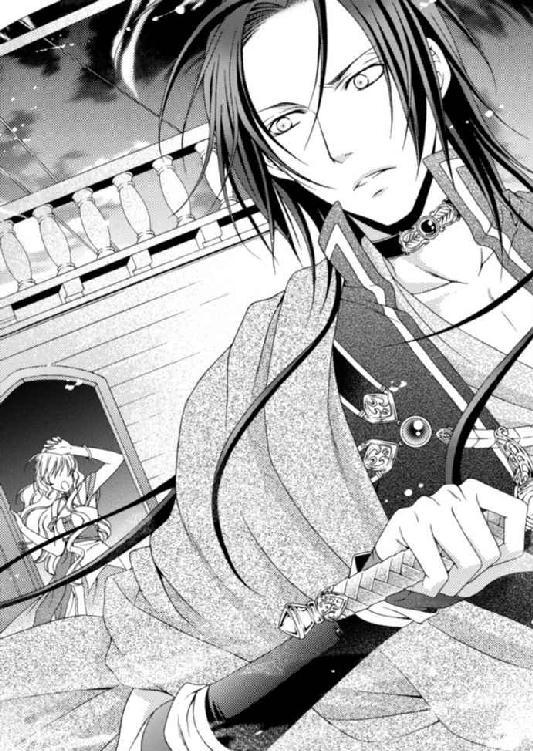

| 砂漠の薔薇と海の星4 紺碧の策士はまどろむ (ビーズログ文庫) | |
| あすか & 由貴 海里 | |
| エンターブレイン (2011) | |
本作品の全部または一部を無断で複製、転載、配信、送信したり、ウェブページ上に転載することを禁止します。また、本作品の内容を無断で改変、改ざん等を行うことも禁止します。
購入時にご承諾いただいた規約により、有償・無償にかかわらず本作品を第三者に譲渡することはできません。
本作品は本文縦組で制作しております。また、電子端末での閲覧に向くよう、一部デザイン等を変更しております。あらかじめご了承ください。

頰に当たる水の感触に、失われていたルセリアの意識がゆっくりと戻ってくる。
寄せては返す波に長い髪がゆらりと漂い、肩や腕に巻き付いては、離れていく。気怠い身体を労るように撫でるそんな髪の感触に、ルセリアの重たい瞼がようやく上がった。
「......っ、げほっ、げほっ......」
思い出せないほど飲み込んでしまった海水のせいか、喉がいがらっぽく鼻の奥がツンと痛む。
シシア神国からの帰国途中、船は嵐に遭遇した。そこを海賊船に襲われ戦闘となり、逃れる途中、ルセリアは打ち寄せた波にさらわれ、海に投げ出されてしまったのだ。
船から投げられたロープを確かに摑んだはずだが、今となっては自信がない。
横殴りの雨に、吹き付ける風。大きく揺れる船に放たれる矢。接近戦が予想された甲板には滑り止めの砂が撒かれたが、それらは波がさらっていくばかりで意味を成さなかった。
耳に残っているのはアルバトルがルセリアを呼ぶ声。追おうとするアルバトルを止めるグレディの姿だ。
アルバトルたちは無事なの――!?
どのくらい海水に浸かっていたのかわからないが全身はずぶ濡れで、海水を含んで重くなった衣服が失った体力をさらに削ぎ、ルセリアは身体を起こすのもやっとだった。
ルセリアは這うようにして白波に巻き上げられる砂から逃れると、乾いた陸地へ移動した。
「ここは......どこなの？」
濡れて頰にまとわりつく髪を後ろへと追いやり、ルセリアは顔を上げる。
打ち上げられていたのは、コの字型の小さな入り江だ。白い海岸は高い木々に囲まれ、粗末な小屋が入り江の端に建っている。
他にも自分と同じように流されている人がいないか、ルセリアは海岸を丹念に見回した。すると入り江の端の岩場に、倒れている人の姿があった。
軋む身体を起こして立ち上がると、ルセリアは岩場へと近づき、そこにいる人物を確認する。
紺色の上着に同じ色のベスト。太い革のベルトには小型のナイフが差し込まれ、上部に巻いた細いベルトに長い剣がぶら下げられていた。黒のズボンは裾を膝丈のブーツに差し込み、踵で交差させてブーツを縛るベルトに留められていた。
後ろで一つにまとめた淡い金髪を浅瀬に漂わせている男性は、青みがかった紫色の仮面を顔の上部につけていた。
ルセリアはそっと仮面を外しその男の素顔を目にして、声を上げそうになった。
――サイファス王子!!
口を両手で押さえ、心の中でそう叫んだルセリアは、彼に気づかれないようゆっくりと後退しつつ様子を窺った。
――どうして王子がここにいるの!?
ルセリアはもともとシシア神国の王子であるサイファスと婚約をしていた。サイファスがルセリアの初恋の相手だと偽ったためだ。だが、本来の初恋の人であるアルバトルが横から略奪する形でルセリアをビアラン王国に連れ去り婚約者とし、正式に諸外国へ発表をした。
女性は身分を問わず略奪者のものとなる――それは暗黙の了解とされているためか、誰も表立って異を唱える者はいない。
今では誤解も解けてルセリアは本当の初恋相手であるアルバトルの側にいる。けれどサイファスは噓が明らかになった後も、ルセリアをあの手この手で手に入れようと画策していた。
ルセリアの姉であるメイフェスを操って、ルセリアをビアランから連れ出したり、忠実な召使いであるレイを痛めつけ、その命と引き替えに自分のものになるよう強要したこともあった。
また、シシア神国は何代も前の王から守護使徒を探しており、有力情報には多額の賞金も用意している。ルセリアの中にそのうち水の使徒・ナナルと火の使徒・ファンファンが存在しており、サイファスを諦めさせない理由となっているのだ。
サイファスは、ルセリアを愛していると告げながらも、この身に宿る守護使徒も手に入れようとしていた。
数え上げればきりがないほど、ルセリアはサイファスに酷い目に遭わされてきたのだ。愛を大義名分として行動しているサイファスに、迷いや後悔はない。
サイファスは下半身を海水に浸け、俯せに倒れている。生死はわからないが、今なら彼に気づかれず逃れることができるはずだ。
ルセリアは一度はサイファスに背を向けたものの、数歩、進んで足が止まった。
「......」
なぜ、ここにいるのかわからない。ただ、正直この人には関わりたくない。アルバトルなら迷うことなくさっさと逃げろと言うだろう。きっとこんなところで迷うルセリアに、激怒するに違いない。
でも......どうしよう――。
ルセリアは何度も肩越しに振り返り、結局、サイファスのもとへと戻った。
無事かどうか、少し確かめるだけ。
たとえ相手が自分の姉に酷いことをしている張本人であろうと、青白い顔をして横たわるサイファスをルセリアは置き去りにできなかった。
自分の馬鹿さ加減に呆れながらも、ルセリアはもう一度、サイファスを見下ろす。
背が上下するところを見ると、息はしているようだ。俯せのサイファスの身体をそっと仰向けにしてさらに観察した。どこにも血が滲んでいる様子がないことから、大きな怪我をしているようには思えない。
これならここに横たえていても、シシアの兵が必ずサイファスを捜しにくるだろう。ほっとして今度こそその場を離れようとしたルセリアは、ふとサイファスの呼吸が荒いことに気がついた。思わずルセリアは彼の額に手を当てる。
「少し熱があるわ......」
ルセリアがそう言うと、サイファスの目がうっすらと開いた。反射的に引っ込めた手をサイファスに摑まれ、慌てて振り払う。
そんなルセリアに、サイファスは不思議そうな目を向けてくる。いつもの冷笑はそこにはなく、彼の纏う雰囲気がどこか違っていた。
「......ここはどこですか？」
「わ......私にもわからないわ。それより王子はどうしてここにいるんです？」
サイファスは起き上がることなく、ルセリアの問いに困惑した表情を浮かべ、驚くべき言葉を告げた。
「王子？ 私は......王子なのですか？」
想像もできなかった言葉にルセリアは我が耳を疑う。思わず後じさったルセリアのドレスの裾を摑んだサイファスは、もう片方の手で額を押さえ、頭を左右に振った。
「自分が誰なのか......わからない」
「じょ......冗談はやめてください」
「......何も思い出せないのです」
「私を騙そうとされているんでしょう？」
「......騙す？ いいえ、私はどうなっているのですか？」
「どうって私に聞かれても......」
サイファスは澄んだ青い目をルセリアにまっすぐ向けてくる。いつもそこにあったはずの怖いほどの情熱はない。が、曇りのないサイファスの綺麗な瞳に、ルセリアは動揺を隠せなかった。
「......わ......わからないわ」
「私は......」
サイファスはぐらりと身体を揺らめかせ、ルセリアの傍らに倒れ込む。もう一度揺さぶってみたが、彼の目は固く閉じられてしまった。
「気を失ったみたい......」
サイファスに怪我がなければここから離れようと考えていた。アルバトルたちが心配なのだ。あれから海賊船を追い払うことができたのか、それに、後からやってきた船は一体――。
心配と疑問でいっぱいな状況だが自分のことが誰なのかわからないうえ、熱のあるサイファスを放置することもできない。
怒りに顔を歪めるアルバトルの姿が脳裏に鮮やかに浮かびながらも、ルセリアはサイファスを放っておけずにもう一度、起こそうとした。が、軽く叩いても、身体を揺すっても意識を取り戻す様子はない。
ルセリアはサイファスの腕を摑んで、休み休み小屋まで引きずっていった。
「......はあ、はあ......もう、どうしてこんなことになってるのよ！」
衣服が濡れている分、サイファスの身体はまるで鉛のように重くなっている。引っ張る手も痺れてきたし、無性に眠くなってきた。
途中、何度も心が折れそうになったが、相当の時間をかけてルセリアはサイファスを小屋の前まで運ぶことに成功した。そこでサイファスを離すと、ルセリアは木戸を開けて中に入った。床は土間と板間に分かれていて、隅には無造作に積まれた投網がある。対面の壁に渡された縄には薄汚れた手ぬぐいや衣服が掛けられていて、その下にたたんだ敷物や毛布が堆く積まれていた。かまども長い間使われていないようで、煤の上に埃が重なっている。
ルセリアは濡れた自分の服を脱ぎ、ぶら下げられていた手ぬぐいで身体を拭き、同じくそこにあった綿のチュニックを手に取った。
「濡れている服よりましよね......」
ごわごわしていて柔らかさのまるでない服に着替え、腰紐に括り付けている飛びウサギのお守りを外す。
夫婦の飛びウサギの毛とワームの髭の入ったお守り。
たとえ離ればなれになっても必ず再会できるという強固な愛が約束されると言われている。
ルセリアはアルバトルとおそろいでこのお守りを持っていた。
「アルバトル......」
きっとアルバトルたちは無事だ。そして今、海に消えたルセリアを捜してくれているはず。
ここでルセリアが闇雲に動けばアルバトルではなくシシアの兵に見つけられてしまうに違いない。あまり動き回らずまずはこの場所がどこなのか確認し、一番近い港を探してビアランの船がいないか確かめに行くのだ。
お守りを胸元で強く握りしめたルセリアは、込み上げる不安を必死に抑えた。
深呼吸をして気持ちが落ち着いたところで二重になっているお守りの紐を解いて長くして、首から下げる。
着替えた服は動きにくかったが、ルセリアは腕まくりをして、折りたたまれている敷物を板間に広げた。
「なんだか鼻がムズムズする......」
ルセリアは木戸のところへ戻ると、未だ意識を取り戻さないサイファスを引き入れた。彼も濡れたまま敷物に横たえるわけにもいかず、ルセリアは肩を摑んで大きく揺さぶった。
「起きてください、王子！ 濡れた服を着替えないと......サイファス王子！」
どれほど揺らしても目を覚まさないサイファスに、頰を叩いた方がいいのかもしれないと、一度は手を振り上げたものの、結局できずに下ろした。
ルセリアはサイファスの濡れた上着を脱がして手ぬぐいで身体を拭い、吊られていた服に着替えさせ、敷物に横たえた。さらに毛布を外ではたいて埃を落としてから、サイファスの身体を覆う。終わる頃には思った以上に重労働で息切れしていた。
本当に記憶を失っているのかしら......。
自分が誰なのかわからないと口にしたとはいえ、それを信じていいのかルセリアには判断がつかない。もしかするとまた何か企んでいて、記憶喪失の振りをしている可能性もある。
だが、先ほど見たサイファスがいつもと違って別人のように見えたのも確かだ。
「......」
覗き込むようにしてじっと眺める。サイファスは薄く口を開いて、やや荒い息を吐き出していた。しかも先ほどはなかった汗が額を覆っていて、触れるととても熱かった。
「大変......さっきより熱が上がっているわ！」
ルセリアは肩に掛けていたショールを手に取ると、海辺に走って濡らして戻り、サイファスの額に乗せた。以前、レイから聞いていた油の取れるディリらしい生物を海岸で見つけたが、本当にそれがディリなのかもわからず、また火をおこすものがないことに気づいて結局、海へと逃がした。
このままではサイファスの容体はますます悪くなるに違いない。助けが必要だ。
「王子、私、助けを呼んできます。少しここで待っていてくださいね」
そう言ったが、当然サイファスからの返事はない。
ルセリアは、サイファスの毛布を整えてから小屋を出ると、人を探しに向かった。
入り江になっている海岸は高い崖に挟まれているため、そこを登って向こう側には行けそうにもない。ルセリアは岬を越えるのを諦め、海岸から逆方向になる青々とした葉っぱが生い茂る森へ入ることにした。
最初は足の踏み場もないほどの雑草が木々の間にびっしり生えていた。それを踏み倒しながらしばらく歩いていると、唐突に行く手を阻んでいた草が短くなった。どうやら誰かが手入れをしているようだ。
ルセリアは短く刈り込まれた草の上を歩きながらさらに奥へと移動し、人の姿を探す。すると馬の駆ける音と人の声が聞こえてきた。
「誰かいるみたい。よかった！ 助かったわ」
ルセリアがその方向へ走りだそうとしたとき、何か黒いものが地面を走り、あっという間に胸元へ飛び込んできた。
「きゃっ！」
反動で尻餅をついたルセリアの胸元から顔を出したのは子狐だった。
「あたた......き......狐だわ」
子狐はルセリアの鼻先を小さな舌でペロペロと舐めて、まるで犬のように尻尾を振る。ルセリアは苦笑しながら立ち上がろうとした。
「そこの女！ 何者だ!?」
木陰から、黒い犬を四匹引き連れ、馬に乗って現れた男はルセリアの側までやってくると、持っていた弓の先端をこちらのこめかみに当てた。
突然のことにルセリアは浮かせた腰を下ろし、馬に乗った瘦せた男を見上げた。彼は眉間に皺を寄せ、怒りを露わにしている。馬の足下には腹がグッとえぐれるほどに鍛えられた身体を持つ黒い犬が、みな鼻に皺を寄せ、白い牙を剝き出しにしていた。
「まず、獲物を離せ！」
「獲物？」
「ここは狩り場だ。そいつを置いて、さっさと出て行け！」
「いっ、嫌よ！」
ルセリアは反射的に子狐を抱きしめ立ち上がって逃げようとした。が、行く手を馬に乗った男に遮られる。
「ならお前も獲物だ。行けっ！」
「きゃっ！」
狩猟犬である黒い犬たちが主人の命令を受けてルセリアに飛びかかってきた。嚙まれる!!と身を竦めたが犬たちは牙を向けることなく、ルセリアの顔や手をペロペロと舐めて、尻尾を振っている。
「......え、あ......可愛い」
きょとんとする馬上の男を尻目に、ルセリアは犬たちの頭を撫でた。
「なっ、なんだ。どうしたんだ、お前たち。私の命令が聞けんのか!!」
何度男が命令しても犬たちはピンと立てていた耳を伏せ、クンクンと鼻を鳴らすばかりで、ルセリアを襲う気配はない。その隙にルセリアは子狐を茂みへと逃がした。
「どういうことなんだ!?」
砂漠を支配する聖霊とも神とも呼ばれ、おおよそ生き物とは思えない巨体を持つワームもルセリアに近づいたことがあったが決して襲ってこなかった。動物は本能で相手が自分より強いかどうかわかると聞いたことがある。この犬たちもワームと同じように、ルセリアの中にいる守護使徒という強大な力の存在に気づいたのかもしれない。
「ええいっ、腑抜けたやつらめ！ 俺が直々に成敗してくれる！」
事情を知らない男は、恥を搔かされたとばかりに熟れたトマトのように顔を赤くして、馬から飛び降りると、腰にぶら下げていた剣を抜いた。
「......っ！」
思わず身を縮めたルセリアの頭上で、剣の交わる甲高い音が響き、ルセリアは恐る恐る目を開ける。
「え......!?」
ルセリアを守ったのはいつの間にかやってきたサイファスの剣だった。彼は青ざめた顔をしていたが、しっかりとした声で告げる。
「彼女に手出しする者には、私の剣が胸深く突き刺さるだろう......」
「王子っ！」
驚いて声を上げたルセリアに、サイファスは苦しそうにしながらもようやく作った笑みを浮かべている。
「......大丈夫ですか？」
「私は大丈夫です」
二人の会話を聞いた男は剣を引いたものの、顔を左右に振って鼻で笑った。
「その汚らしいのが王子だと!? 笑わせるな。ここをどなたの領地と心得る」
「あの......申し訳ありませんが、存じ上げません」
「はぁ、知らないのか!? ここはイリディアス皇国、第一皇子であらせられるクルゾン様の領地だ」
「えっ！」
まさか、イリディアス皇国に流れ着いていたとは、ルセリアも思わなかった。
イリディアス皇国はシシア神国とキンバル都市同盟に所属するキルギスを挟んで北に位置する。本来、ルセリアたちの船は南下する予定だったが、嵐のために北へ流されたのだろう。
だからここは人気がなかったのだ。
ルセリアたちは領地の海岸に打ち上げられたせいか、兵士はルセリアたちに気づかなかったのかもしれない。けれど、一般人が皇族の領地に足を踏み入れたら、その場で切り捨てられる。知らなかったではすまないのだ。
ルセリアは、状況をよくわかっていないサイファスを引っ張って剣を収めさせると、背中を押して頭を下げさせる。
「気づかずになんという無礼を。も......申し訳ありません」
サイファスよりも深々と頭を下げたルセリアの耳に、近づいてくる馬の足音が聞こえた。そっと窺うと、二頭の馬がやってきた。
二人とも弓を鞍の脇にあるベルトに挟み、肩には矢を収めた皮袋を掛けている。一人は若い男性で、非常に甘い顔立ちをしていたが、やや軽薄な感じもする。ブルネットの髪に同じ色の瞳。派手というわけではないが、どこか気品の漂うその男に目が向く。もう一人の男は年上で、クリーム色の髪に、誠実そうな顔立ちをしていた。
「彼らを領地の外へ」
誠実そうな男性がそう言うと、ブルネットの男が顎を撫でながら口を開いた。
「待つんだ、エイデン」
「クルゾン様？」
「彼......どう見てもサイファス王子そのものなんだが。服装はおいてな。どうだ、エイデン」
「ええ......確かに」
二人が話をしている間、当の本人は青ざめた顔のままぼんやりしている。きっと熱が上がってこうやって立っているのも辛いのかもしれない。
今のサイファスにはどうしても助けが必要だ。サイファスを知っているのなら、都合がいい。ここで身分を明かして助けを求めるのが賢明だろう。
「はい、こちらの方は、シシア神国のサイファス王子です。事情があってこのようなお姿ですが、助けが必要なのです」
「噓をつけっ！ シシアは今、喪に服している最中だ。親族はみな国を出ることはない。こんなところに王子がいるわけがないだろう。そうでしょう、クルゾン皇子」
犬をけしかけた男がクルゾンに同意を求めているが、彼は首を左右に振った。皇子であるクルゾンなら助けてくれると安堵したも束の間、ふいに隣に立っていたサイファスが倒れた。
「王子っ！ しっかりして、王子！」
ルセリアがサイファスを抱えて心配していると、クルゾンが馬から降りて傍らにやってきた。そこでまじまじとサイファスの顔を眺め、また顎を撫でる。
「確かに私の知るサイファス王子のようだけど、彼とは顔見知りのはずなんだがね」
「王子は熱がとても高くて意識が朦朧とされているので、きっとわからなかったのだと思います。私......王子を助けていただきたくてこちらに迷い込みました。お知り合いでしたらどうか助けてください」
「君はサイファス王子の侍女か」
「え、は......はい」
侍女ではないが、ビアラン国の王子であるアルバトルの婚約者とも言えず、ルセリアはそう答えた。
「エイデン、サイファス王子を屋敷へお連れして、医師を呼んでやれ。身なりは相当ありえないが、彼の持つ剣は確かにシシアのものだから間違いないだろう。ただ、どうしてそのような姿をしているんだ？」
「実は昨晩の嵐で遭難し、その先の海岸にたどり着いたのです。服が濡れていると王子の身体に障るので、近くにあった小屋で見つけた服に着替えていただきました」
ルセリアは慌てずゆっくりと自分の身分が気取られることのないよう慎重に、言葉にした。
「そういえば、あの海岸に小屋があったな。ずいぶん前に漁師が使っていた小屋だ」
「はい。私もそこで着替えました」
「確かに昨夜の海は荒れておりましたね」
エイデンと呼ばれた臣下が思い出すようにそう言うと、クルゾンは頷く。
「侍女、名前は？」
「ルセ......ルセと申します」
「では、サイファス王子の身の回りの世話は任せたよ」
「わかりました」
成り行き上断ることもできず、ルセリアはクルゾンが用意した馬車に乗り、彼の屋敷へと向かった。
馬車の窓から外を眺め、ルセリアは先の見えない不安にそっと手の中でお守りを握りしめる。
イリディアス皇国――。
強大な軍事国家で様々な武器を作り輸出している国だ。世界の鉄製武器はこのイリディアス皇国のものが半分以上を占めているといってもいい。ビアランはその原料となる鉱石をイリディアスへ輸出していて、表向きは親密な関係だ。
けれどルセリアはイリディアスの皇王も皇妃も拝顔したことはないし、直接関わったこともない。ただ、先日シシアで会ったアカリナ王国のジャニーンはイリディアスの皇王の次男と婚約していた。彼女は皇子との婚約を解消すると息巻いていたがどうなったのだろう。
はあ......。
海岸に打ち上げられてから、めまぐるしく動いていたため、やけに眠い。
眠っちゃだめ......。
サイファスはクルゾンに任せておけばいい。クルゾンがシシアに連絡をしてくれるだろう。けれどルセリアは自分の身分を明かすことができないため、シシアの人間がやってくるまでにここから逃げ出さなくてはならない。一刻も早くそのための計画を練らなければならないのに、思考は完全に停止していて、目を開いているのもやっとだった。
信じられないことにサイファスは、毛布に身を包みルセリアの肩に凭れて眠っている。
そんなサイファスに不快感があっても、向かいに座るイリディアスの皇子たちを前にして、迷惑そうに押しやることもできない。
アルバトルは無事でいるだろうか......。
一瞬のうちに、甲板を舐めた恐ろしいほどの波の力によって、ルセリアは大海に放り出されてしまった。
見たこともない驚愕の表情を浮かべたアルバトルが、ルセリアへと手を伸ばす。そんなアルバトルを引き留めたグレディ。レイは手すりを飛び越えようとして、再度訪れた波によって甲板に押し戻されていた。
それらあっという間の出来事が、不思議なことにルセリアにはゆっくりと見えたのだ。けれど身体が波に飲み込まれるのと同時にすべてが消えた。
泡立つ白波にもまれ海の底へ落ちていく身体に容赦なく水圧が襲いかかり、口から空気が奪われる。
けれど、光のない闇の中に囚われているにもかかわらず、なぜかルセリアは死の恐怖を感じなかった。
「......」
ルセリアは思考の中から現実に戻り、視線を外へと向ける。
馬車から見える景色は目に映らず、思い出すのはアルバトルのことばかり。
昨夜は海賊と戦闘しただけではなく、アルバトルともいろいろあった。
ルセリアにそんなつもりはなかったものの、誤解されても仕方のないことを懇願した。
馬鹿なことを口にしたと後悔しても遅い。ルセリアはアルバトルをとても傷つけたし、同じだけ自分も傷ついた。
アルバトルの無事を確認したら......真っ先に謝りたい――。
馬車の軽い揺れを感じながら、ルセリアはいつしか目を閉じていた。シシアを出航後、夕闇迫る頃から風が吹き、小雨がちらつき始めた。天候を見ながら出発したはずだが、都合の悪いときに限って予想は外れるものなのだろう。
「雨風や揺れへの対処を怠らないよう、部下たちに伝えております」
甲板で空を眺めるアルバトルに、グレディはそう告げた。
「全く......仕掛けてきそうな日に限って、天候が危ういとはな。みなには早めに食事を摂らせ、万全の態勢を敷くよう伝えておけ」
「かしこまりました」
グレディが去ると、アルバトルも甲板から下の居住区へと移動して、ルセリアの部屋に向かった。
「そなたに話がある」
アルバトルはかしこまった表情でそう言うと、敷物に座って飲み物を口にしていたルセリアの隣に腰を下ろす。
「何？」
ルセリアは机に杯を置いて顔を上げる。
水の使徒・ナナルのほかに炎の使徒・ファンファンという新しい守護使徒を宿したルセリアだが、外見は至っていつもどおりで変わったところはない。そんなルセリアを見るたびにアルバトルがどれほど安堵しているか、彼女は知らないだろう。
屈託なく笑う彼女の笑顔に癒されながらも、アルバトルはルセリアに向けて口を開く。
「どうして姉らしき女のことを黙っていたんだ？」
「エミールに聞いたの？」
「......だったらどうなんだ」
二人の間に立たされているエミールは可哀想に、船に乗り込んだ後、アルバトルからシシアで起きたことを無理やり聞き出されたのだ。
エミールはアルバトルの前に飲み物の入った杯を置いて、申し訳なさそうにルセリアを見つめる。ルセリアもエミールの立場を理解しているのか、「いいのよ」とでも言うように小さく頷いた。
「別に......隠していた私が悪いもの」
「少しは学んだようだな」
アルバトルは杯の中身を飲み干し、盆に戻す。ついルセリアを責めてしまいそうになったが飲み物を口にすることで、苛立ちから声を荒らげることを抑えられた。
「でもアルバトルにメイ姉様のことを話したら、会わせてくれなかったでしょう？」
「状況による。そなたが隠さず打ち明けていたら、あのような騒ぎにならなかっただろうし、エミールとも気まずい思いをせずにすんだはずだ」
シシアでは復讐を誓ったファンファンが街を火の海にしようとしたのを、ルセリアがナナルを使って阻止したのだ。騒ぎに便乗して使徒を放ったため、誰がその身に使徒を宿しているのか他国に知られることはなかったが、それは単に運がよかったとしか言いようがない。しかも、ナナルをルセリアの身体から追い出す方法を考えているにも関わらず、新たにファンファンまで受け入れてしまった。
メイフェスはサイファスとカルソーニに何やら利用されようとしているし、そんな姉をルセリアは放っておけず、勝手にサイファスと取り引きしようとする。
そんな、様々な思惑が絡む中、ルセリアのちょっとした隠し事が後々大変な事態を招く可能性があった。
「メイ姉様のことはファンファンと関係ないわ」
「わかっている」
アルバトルはルセリアが黙っていたことについて問いただしているのだ。確かに隠したかったことかもしれないが、打ち明けてくれないと相談にも乗れないし、対策も取れない。
「......待って。そういえば弔いの儀に向かうアルバトルが、『そなたの憂いはすぐに消し去る。案ずるな』......そう言ったことを覚えているわ。それって、ファンファンの存在を最初から知っていて、シシアに復讐をさせようとしていたってことなの？」
「いや、それでもよかったが、俺がしようとしていたのはファンファンを身に宿していたリッジスを捜し出して処分することだった。兄であるカナンに頼まれたからな」
その言葉に予想どおりルセリアは非難の声を上げた。
「しょ......処分？ 殺すってこと!?」
「ああ。ベルデの王も自分の息子がシシアに仇なす事態にならぬよう、刺客を送っていた」
「そんな大事なことを話してくれなかったの？」
「ルセリア、これは国と国の問題だ。そなたに話すことではなかった......」
アルバトルがそう言うと、ルセリアはムッとした表情を浮かべ、唇を尖らせる。
「......私が反対するからよね」
「守護使徒の問題は政治も複雑に絡んでいる。時には冷徹な決断をせねばならない。感情に流されやすいそなたに、話せるわけがないだろう」
「使徒を宿しているんだから、私には知る権利があるはずよ！」
「そなたにはなんの権利もない」
ルセリアの言い分ももっともだろうが、たとえ妻となろうと、ルセリアに話せることではない。ましてや四大国で話し合った内容など決して話すことはできなかった。これは個人の問題ではなく、国の政治に関わることでもあるからだ。
ルセリアはアルバトルの言葉の真意を理解できずに、傷ついた表情を浮かべた。
「酷いわ、アルバトル！」
今にもこの場から駆け出しそうなルセリアの手をアルバトルが握りしめて引き留める。ルセリアは振り払おうとしたが、アルバトルは離さなかった。
「私、怒っているのに、どうして手を握ってるの!?」
「そなたが逃げないようにしているだけだ」
「離してよ」
「だめだ。いいから、座れ」
しばらく睨み合っていたが、ルセリアは少し表情を和らげ、どこか呆れたふうにも見える顔で浮かせた腰を下ろした。
「ね、座ったわよ。手を離して」
アルバトルはにっこり微笑むルセリアの手を摑んだまま引き寄せ、抱きしめる。女性だけが持つ甘い香りが鼻をかすめ、アルバトルはうっとりと目を細めた。
この腕の中にすっぽり収まってしまうルセリアの身体。触れると柔らかく、そして滑らかでもある。首だけでなく腕も足も細い。アルバトルが力を入れると簡単に折れてしまうだろう。そんな身体に、守護使徒という強大な力を持つ存在を二つも宿している。
アルバトルにはそれが不安で仕方がないのだ。
「アルバトル......？」
ただ抱きしめているアルバトルにルセリアは困惑したように名を呼んだ。アルバトルは緩やかにルセリアを離して膝に座らせると、話題を変えるように言った。
「ルセリア......俺はそなたとの将来をよく想像するんだ」
「え、どうしたの、突然」
「突然か？ 俺はいつも想像しているが、そなたは違うのか？」
ルセリアを膝に座らせたまま、アルバトルはそう言い、彼女の髪を指で弄ぶ。
アルバトルは幼い頃からルセリアを妻として迎えるのだと心に決めていた。だから彼女のためにできることは何かを、よく想像したものだった。特にルセリアを手に入れてからは、二人の未来を思い描くようになった。が、ルセリアは違うのか。女性の方がそういう想像力は長けていると聞いていたため、アルバトルはやや落胆を覚えた。
そういう気配だけは気づくのか、ルセリアはアルバトルを見上げて聞いてきた。
「......アルバトルはどんなことを考えてるの？」
「いや、別に。なんでもない」
「ねえ、そこまで言ったんだから、教えてよ。気になるじゃない」
期待に満ちた目を向けられたことで少し気をよくしたアルバトルは、口を開いた。
「そなたとの愛の巣である宮殿を別に建築する予定だ」
「今の場所で満足しているわ」
「俺は満足していない。本殿から切り離された場所で、俺たちだけの生活ができる。そなたも面倒なことにわずらわされることなく快適な暮らしができるはずだ」
アルバトルは暗に義母であるアビシュテのことを匂わせた。
彼女の子供じみた嫌がらせは大げさなものではないため、ルセリアから助けを求められない限り敢えて何も言わないが、積み重なるとさすがに黙ってはいられない。そういったわずらわしいことからルセリアを解放してやりたいのだ。
「自由に歩き回り馬も走らせることができる庭も造る予定だ」
「......えっ、本当!?」
ルセリアの顔がパッと明るくなった。
この笑顔のためなら宮殿をいくつでも建ててやりたくなるのだから愛というのは不思議だ。
今も庭はあるのだが、建物の間に造られた小さなものなので、広々とした自然を愛するルセリアには息苦しいはず。彼女がどれほど望んでも、自由に外へ出かけることは許されない。ならばせめて、いつでも自由に走り回ることのできる庭を、愛する者のために用意してやりたかった。
ルセリアは目をキラキラと輝かせている。アルバトルの言葉から、様々なことを想像して喜んでいるのがわかった。
「興味がわいたようだな」
「そ......そうじゃないけど......少しいいなあって思っただけ」
「そなたのためなら俺はどんなことでもしてやる......いつだってそう話しているだろう？」
口づけをしようとルセリアの顎に手をかけたが、やんわりと払われる。少しいい雰囲気になるとルセリアはすぐにアルバトルから距離を取ろうとする。
けれど当然、膝からは下ろさず、ルセリアの腰に腕を回して、鼻先が触れ合うほど引き寄せた。
「そなたはシシアでどれほどこの俺を心配させたと思っているんだ。少しは償ってもらわねばな」
「償うって......？」
「そうだな......たまには俺にそなたの手料理を振る舞ってくれ。一度も口にしたことがない」
「私、料理はあまり上手じゃないけど......」
アルバトルがじっと見つめていると、ルセリアは少し逡巡した後、ようやく頷いた。
「アルバトルが作って欲しいって言うなら......いいわ。がんばって作ってみる」
「楽しみだ」
「その代わり、まずくても文句は言わないでよ」
「いや、文句は言う」
きっぱりとアルバトルが告げると、ルセリアは驚きに目を丸くする。確かに普通は愛する者の手料理はまずくとも美味いというのが礼儀なのだろうが、アルバトルに世辞は言えない。
もともと育った国が違うのだから、食の文化が違う。ある程度、好みの味を知ってもらうためには、はっきりと告げた方が互いのためでもあるというのが、アルバトルの考えなのだ。
「ええっ！ 普通は我慢して食べるものでしょう？」
「まずいものを美味いと言えば、そなたはそのまずいものを作り続けるだろうが。俺はそのたびに美味いと言わなければならんだろう。悪いが耐えられん」
「......そ、そうね。確かにそうだわ」
ルセリアは首を傾げながらも、なんとなくアルバトルの言い分に納得したような顔をしていた。
「でも私がアルバトルの料理を作っていいの？ そういうのって信頼の置ける特定の料理人のみができることで毒味もするはずよね？」
「いつでもは許されないが、前もって手続きを踏めば許可される。もっとも監視や毒味は当然あるがな」
「そこまでして食べる価値が私の料理にあるのかわからないけど......アルバトルがそう言うなら......いいわ」
手続きが面倒なこともあって、后は王に手料理など滅多に振る舞わない。アビシュテが手料理を父に振る舞った話など聞いたこともなかった。
ただ、アルバトルの母であるアミタは、王の后としては異例の女性だった。公式行事で忙しく過ごしながらも、よく料理を作っては父に振る舞ったのだ。忙しい父とはなかなか一緒に過ごせなかったアルバトルだが、母が料理を作ったときは違った。短い時間ではあったが、三人で過ごすことができたのだ。
そんな記憶からルセリアに手料理を求めるのかもしれない。
これから先、家族が増えても一緒に過ごせるように。
「ああ、それから。子供はまず二人欲しい。男と女それぞれだ」
「ちょっと、そんなことまで考えてるの？」
「愛する女ができたら、その女との子が欲しいと考える。当然のことだ」
王子がまずしなければならないのは跡継ぎを作ること。王族の血筋を絶やさないようにするために王子に課せられる、絶対的な義務でもある。だが、ルセリアは困惑しているようだった。
「ねえ、アルバトル。もっとゆっくりじゃだめなの？」
「俺はもう......そなたを自分だけのものにするという欲求をいつまで抑えられるか自信がない」
愛する者を手に入れたのに、未だすべてをものにはしていない。だからこそ余計に、不安になるのだ。
今後サイファスのような悪い虫がルセリアに近づこうと、そんな気にならない確かな絆が欲しい。アルバトルはずっとそう願い続けている。
アルバトルがギリギリのところで理性を保ち、ルセリアを見つめていると、彼女はそっとこちらの頰を撫でた。
「あの......まだ上手く言えないけれど......私にとってアルバトルは特別な人なの」
「ルセリア」
「だからお願い。私の気持ちを急がせないで欲しいの」
頰から離れていく手を摑み、アルバトルは唇で愛撫する。
こんなにも欲した女性はルセリアしかいない。彼女が時間が欲しいと言うのなら、そうして自分の愛情が本物だと証明するしかないのだろう。
いつまでこの胸の中で高ぶる欲望を抑えていられるのかはわからないが。
「あと少しなら......いいだろう」
「......ねえ、アルバトル」
「なんだ」
「姉上を助けられると思う？」
アルバトルはルセリアの手を離し、うつむき加減に首を左右に振った。
なぜ今その話題なのだと苛立ちが過ぎったものの、いい機会でもあった。
メイフェスに対し、アルバトルがどういう考えを持っているのか、ルセリアにそろそろはっきりと話しておくべきなのかもしれない。
「アルバトル？」
「いずれそなたの姉を切り捨てねばならない日がくるかもしれんと考えている」
アルバトルは静かに告げたが、予想どおりルセリアは声を荒げた。
「ええっ、なんてことを言いだすの!?」
「そなたを守るために必要なことなら俺はどんなことでもするつもりだ。それがどれほど冷酷な決断であろうとな」
守護使徒を宿したことも含め、ルセリアを守ると誓ったアルバトルに迷いはない。
ルセリアを傷つける者、利用しようとする者、すべてがアルバトルにとって敵であり、排除すべき者となるのだ。
たとえ血の繫がりのある者でも、そうでなくても。ルセリアにとって大切な姉であろうと、その決意は揺るがない。
「メイ姉様は確かにあの魔導師に操られているわ。でも、きっと何か解呪の方法があるはずよ。ジンが探してくれているもの......」
「可能性は低いとも聞いた。それはそなたが一番よく知っているはずだ」
「......だめよ、アルバトル。お願い！ 姉上を助けてっ！」
「無理だろうな」
今のルセリアを安心させるためにアルバトルはその場しのぎの噓をつくこともできた。けれどそんな一時しのぎの噓などただ残酷なものでしかない。
「嫌よ、アルバトルっ！ 私のせいでメイ姉様は巻き込まれたのよ。なのに、切り捨てるというの!? そんな残酷なことを私に認めろって言うの!?」
「いいから、聞くんだ」
「......嫌よ、これ以上、聞けないわっ！」
「逃げずに考えるんだ！」
守護使徒を身に宿すということが今後、どれほどの犠牲を払う理由になるのか、ルセリアは知る必要があるのだ。
すでにわかっているのかもしれない。それともまるで理解していないのかもしれない。
どちらにしてもアルバトルは自分の考えを変えるつもりはなかった。
「......アルバトル」
「サイファスがメイフェスを何に利用しようとしているのかはわからん。だが、そなたの姉という存在を餌に必ずや俺からそなたを奪おうとするだろう。やつらはそなたを利用し、傷つける。俺がそれを許すとでも思っているのか？」
どうしてルセリアが守護使徒を宿しているのだ。立派な国の姫でなくても、農民の娘であったとしても、アルバトルはルセリアを妻として迎えた。アルバトルが望んだのはルセリア自身だけだから。
ルセリアは姉を思い、苦痛をこらえる表情をしていた。このような悲しみに満ちた顔をさせてしまうメイフェスに怒りがわく。
「私......」
「俺はこれでもずいぶんと自制しているんだ。そなたにはわからないだろうが、俺はサイファスやカルソーニ、そなたの姉に対しても、はらわたが煮えくり返っている」
「アルバトル。私......私のことを愛していると言ってくれるのなら、私の頼みを聞いて。お願いだから姉上のことを助けて......」
メイフェスのためならルセリアはアルバトルに本心ではなくとも「愛している」と告げるだろう。メイフェスを助けてやる代わりに身体を差し出せと言えば、きっとそうするだろう。
そんな愛などアルバトルは求めていない――。
「無理だな」
「どうして!?」
ルセリアは驚きに満ちた目を向ける。
「そなたは俺にとって残酷な望みを突きつけているんだぞ」
「......え!?」
「姉を救うという、そなたの望みを叶えられないのなら、俺など愛せないと言いたいのか。俺にそなたを守ることと、メイフェスを助けることは両立できないと理解していながら......」
「ちっ......違う。そんなつもりじゃないわ！」
ルセリアは首を左右に振って、叫ぶようにそう言った。
けれど一度、アルバトルの心に浮かんだ疑念は、重く心にのしかかり、そう簡単に拭えるものではなかった。
「いや、そなたは俺の愛を試そうとしている。もっとも残酷なやり方でな」
アルバトルはルセリアをやんわりと押しやり、立ち上がる。今は少し互いに考える時間が必要だった。
「アルバトル、待って！」
「今夜の海は荒れている。そなたは部屋から一歩も出るな」
戸口で肩越しに振り返り、アルバトルはそう告げた。
「アル......」
「今は何も言うな」
アルバトルは部屋から出ると、階段を上がって再び甲板へ向かう。
ルセリアは追いかけてはこない。その事実に半ば落胆し、半ば安堵している。
守護使徒を身に宿している事実がどれほど重大なことなのか、ルセリアにはもっと自覚してもらいたいのだが、その切実さが伝わらないのはなぜなのか。
この先、どれほど隠そうとしても、いずれ守護使徒が目覚めた事実は明るみに出る。そうなれば、ルセリアが望まなくとも、彼女を欲する人間や国がこれから嫌というほどわいて出てくるのだ。
そんな中、一番警戒しなければならないのは、ルセリアの姉だ。〝暗黒の花嫁〟という術をシシア神国の神官で、魔導師でもあるカルソーニによってかけられているのは、サイファスが自分の目的達成のために利用しようとしているからだと安易に予想がつく。
すでにメイフェスはただの人質以上の存在になっているのだ。だが、ルセリアは血の繫がりのないはずの姉を見捨てられない。そんな彼女の優しさにアルバトルは惹かれるのだが、メイフェスの存在はサイファスよりもアルバトルの不安をかき立てる。
シシアでルセリアがサイファスの誘いを拒否しなかったのは、どうせメイフェスのことを浅はかにも聞き出そうとしたからだろう。偽りの愛を囁くようなサイファスの温情を期待したのならルセリアは愚かだとしかいいようがない。
あのメイフェスがシシアにいなければ、いっそのことこの世にいなければ、これほどまでに気をもむこともなかった。
ルセリアの知らぬ間にメイフェスを切り捨てワームの餌にでもしておけばよかったのだ。
それができなかったのは、やはり姉を思うルセリアを慮ったから。いや、そのことで決定的に嫌われたくなかったのだ。
「......嵐か」
甲板に出る最後の階段の手前で止まり、腰を掛けた。
船は横殴りの雨風に揺れており、いつしか嵐のまっただ中に放り出されていたことに気づく。
ルセリアにはああ言ったが、愛を試したのは自分も同じだった。
アルバトルはルセリアに、誰よりも愛して欲しいと望んでいる。にもかかわらず、メイフェスのことを気遣い助けようと奔走する姿に嫉妬しているのだ。
ルセリアがアルバトル以外の人間に思いやりや愛情を向けることが許せない。彼女の愛情はすべて自分に向けられるべきもの。他の誰とも分かち合う気はない。
アルバトルは自分の余裕のなさに苦笑していた。そんなアルバトルにいつしか傍らにやってきたグレディが怪訝な表情を向けてきた。
「王子、どうされました？」
「......いや、なんでもない」
「おや。ぼっちゃまがお漏らしをして泣いているのをあやしたこの私に隠し事をなさるおつもりですか？」
大げさに言うグレディにアルバトルは呆れて目を細める。
「俺の記憶にないことでからかうな」
「いえ、私の忠義心の強さを証明しようとしただけです。それで、どうされたんです？ まだまだ王子の封印したい思い出は私の中にたくさんございますよ。ご披露いたしましょうか？」
「ああ......わかった。実は......」
どこから話せばいいのだろうか。考えあぐねていると、船の接近を警告する汽笛が鳴った。
「......来たか。グレディ！」
「はい。砂を用意させましょう」
グレディはそう言うと、臣下にアルバトルの装備を確認するよう命じ、去っていく。とはいえすでにアルバトルは準備を終えていた。
暗い赤紫色のシャツと上着の間には、無数のリングを繫ぎ合わせて衣服のように作られた鎖帷子を身につけていた。手首や足首にはビアランに生息する植物エジから取れた繊維を固く編んだ布を巻き付けている。エジの繊維は重ねて編んで固くしても伸縮性を保ち、動きのある腕や膝下を保護するのに最適だった。
剣帯は前でクロスする二重のもので、通常のものとワームの外皮で作られた剣を左右それぞれ吊り下げていた。
腰紐には、ルセリアとおそろいのお守りが結ばれ、昼夜問わず、アルバトルを見守っている。
アルバトルは腰に下げた鞘から剣を引き抜き、そこに映り込む自分の不敵な表情に満足していた。
やはり、仕掛けてきたか――。
あの男の目的はあくまでルセリアの奪還だろう。
海上での戦闘を想定していたアルバトルにとって、今この剣に足りないのはサイファスの血だけだ。しかもシシアの王子としてではなく、ただの海賊として相対するなら、これほどのチャンスはない。
もっとも向こう側の船にサイファスが乗っているとはいえないだろうが、アルバトルは確信していた。
ルセリアを手に入れるため、あの男は必ず自ら指揮を執っているはずだと。
アルバトルならそうする。ルセリアを奪うという栄誉は自分だけのものだからだ。
剣を鞘に収めたアルバトルは足早に階段を上がって甲板へ出た。揺れる船体や横殴りの雨風にも兵士たちはみな冷静に行動しており、弓兵は矢留板の下にある輪っかにベルトから伸ばした金具で身体を固定し、海上に投げ出されないようにしていた。剣を持つ兵士はその背後に立ち、弓兵を守っていた。
「王子っ！ 識別の旗は揚がっておりません！」
「当然だ。あれは海賊だからな」
闇にぼんやりと浮かぶ船体はシシアの船艦ではない。だが、船体に開いた矢を射るための小窓の多さから見ても武装船なのは明らかだ。
シシアの船ではなく、あくまでビアランの船を襲う海賊。そういう大義名分があるからこそ手加減をせずにすむ。
「みな、よく聞け！ あれは我がビアランの宝、〝砂漠の薔薇〟を奪おうとする不届き者の乗る海賊船だ！ 奴らを完膚なきまでに叩きのめし、我が船に攻撃を仕掛けたことを後悔する間もあたえず、海の藻屑とする！」
アルバトルが高らかに叫ぶと、兵士たちはみな声を上げて、士気を鼓舞する。その力強さに満足しながら、アルバトルは船首へ向かう。
「甲板に砂を撒け！ 横からの風や波に気をつけろ！」
ビアランから持ってきた目の細かい砂が一斉に甲板に撒かれた。本来は、剣を交えたとき、床に飛び散った血で足が滑らないために砂を撒く。ただ今夜は昼過ぎから雨が降っていたため、甲板は滑りやすくなっており、早くも砂が必要だった。
矢留板を上げた背後で矢を構える兵士たちの顔にはこれから始まるであろう戦闘に対し、怯えは浮かんでいなかった。むしろ獲物を見つけて今にも飛びかかろうとする獣のように、全身の筋肉を緊張させつつ高ぶる胸を押さえ、じっと息を潜めている。
未だかつて、ビアランは他国に占領されたことはない。そこに住む者は、延々と続く砂漠と照りつける太陽。決して飼い慣らせない神聖な生き物であるワームによって命を奪われてきたからだ。
そんな厳しい環境のもと、ビアランの国民は常に生きるための戦いを強いられ、打ち勝ってきたのだ。
船は大きく揺れ、鼓膜を震わせる笛の音を伴う風が吹きつける。周囲は時を刻んでいるのに、敵を待ち受ける者たちは微動だにしない。
迫る船影を目前に、アルバトルは恐怖などみじんも感じなかった。
船の接近を報せる警笛が悲鳴のように雨風を縫い、視界はますます悪くなる。だがアルバトルの燃え立つ瞳は甲板に立つ男の姿を捉えていた。仮面を被っているために容姿は定かではない。が、誰よりも船首に立つ自己顕示欲の強さといい、後ろで一つにまとめた腰まである淡い金髪をなびかせた男がサイファスであることをアルバトルは確信していた。
――こい、サイファス！
グレディは弓兵に飛距離の出る長弓を構えさせ、アルバトルの合図を待って、上げた手を下ろした。
「構え、......――打てっ！」
ほぼ同時に放たれた弓矢は空中で交差して飛んでくる。雨は視界を閉ざし、床を滑りやすくするが、火矢が使えない。そのため必然的に接近戦になるだろう。
予想どおり、向こうの船上では、甲板を走る兵士の中に梯子を携えている者が見受けられた。もちろんこちらも迎え撃つ準備は整っている。
「接近戦に備えろ！」
「梯子を渡せ！」
どちらの声ともわからない叫び声があちこちで上がり、併走し始めるサイファスの船を弓矢で射る。幸い弓矢に射貫かれる者はいなかったが、雨風が視界を悪くしていて、次第に状況は悪くなるばかりだ。
それでも充分接近したところで互いに梯子を渡し、兵士たちは我先にと駆け抜けた。
剣の交わる音が響く中、グレディは傍らでアルバトルに向かってくる敵を倒す。アルバトルの相手はただ一人。それ以外は目にも入らない。向こうも同じだろう。
どこにいる――。
アルバトルは周囲に注意を払いつつも、船首にサイファスだと確信した男を見つけた。
顔に仮面をつけて海賊の風貌を装っているが、間近にした男の存在感にアルバトルはサイファスだと改めて確信する。
むろんその男もアルバトルの姿を見つけると、どちらからともなく近くの梯子に飛び移り、互いに向かい合ったまま、あと少しの距離を保つ。
「お前が誰なのかわかっているぞ、サイファス」
「王子ともあろう者が、海賊と知り合いですか」
その毒舌はまさしくサイファスのもの。
互いに剣の柄に手をかけながら、鞘から抜くタイミングを計る。サイファスの仮面の下から覗く瞳は怒りと歓喜が入り交じったものだった。
サイファスにとってもこの戦いは待ち望んでいたものなのだろう。
「海の不届き者としてお前の首をここで獲ってやる」
「海賊に襲われたビアラン船は不幸にも王子を乗せたまま、海の藻屑となるはずですよ」
「......勝手なことをっ！」
ほぼ同時に抜いた剣は、互いの目前で交わった。雨風が降り注ぐ中にあっても火花が散った。力は拮抗し、引くも押すもできずにギリギリと重なり合う刃が音を立てる。
「ルセリア姫を今ここで私に引き渡すのでしたら、命だけは助けてあげますよ」
サイファスは交差する剣の間から睨み付けつつも、してやったりという笑みを口元に浮かべている。
「今退くというなら、切り落としたお前の首を船首に晒すことは許してやる」
「なに......っく！」
隙ができたサイファスからアルバトルは剣を引き、今度こそはと振り下ろす。けれど剣はサイファスの肉を裂くことなく、軽快な音を立ててサイファスの剣と再び交わり、離れる。サイファスが素早い動きで左右小刻みに振り下ろす剣を、アルバトルはすべて受け流していた。
「ルセリアの警護から聞いた話だが、お前は気持ちの悪い絵を飾っているそうだな」
「愛は人を狂わせ時に信じられないこともやってのけるものです。そのくらい貴方にも理解できるはずですよ」
かつてはアルバトルも愛を大義名分にして、ルセリアを無理やりマルフォーネから連れ出し、逃げられないようにした。けれど一方的に愛を押しつけてもルセリアは決してアルバトルに心を開いてはくれなかった。逃亡を企てられ、再び捕らえた。愛しても愛されない空しさがどれほどのものか、人の心は力や金では動かないことをアルバトルはルセリアと再会して学んだ。
富も権力も高価な贈り物もルセリアは欲しがらない。ただ、彼女はアルバトルと結んだ幼き頃の約束を心に住まわせ、大切にしていた。名もなき少年との思い出を。
アルバトルは会えなかった間の時間を取り戻そうとして、自分の想いを押しつけすぎたのだ。
ルセリアに拒絶される理由はわかった。が、愛がどういうものなのか、どうすれば愛されるのか、答えは出なかった。
ただ、ほんの少しではあるが、ルセリアの気持ちを理解しようと努めた日から、彼女の視線はようやくアルバトルに向けられた。
そこには相手が嫌がることはしないということも含まれている。サイファスはそれに気づくことができないのだ。
「お前がどれほど暗い想いを募らせ姑息な手を使おうと、ルセリアの愛は俺だけのものだ」
「何も知らぬ馬鹿者とは貴方のことを言うのですよ。姫は私の約束された花嫁。姫が私の傍らに立つとき、すべてが私のものになる――！」
再び交わった剣から火花が散り、押し返すようにして後ろへと移動した二人は、距離を取った。
腹立たしいことに互いの剣術には差がなく力は拮抗しており、勝負がつかない。
「......愛を得られぬ男というのは惨めなものだな」
アルバトルは嘲笑を浮かべ、すぐさま言葉を継いだ。
「妄想でしか語れない」
「おのれ、アルバトル......」
馬鹿にされたことがよほど腹に据えかねたのか、サイファスは冷酷な輝きを目に灯し、唇を引き絞ると、剣を構えて向かってきた。相手が理性を失えば失うほど、勝機はこちら側に訪れる。
キンッ......と、何度目かわからない剣の交わりに、アルバトルは不敵に笑った。
「王子――！」
グレディのひときわ高い声に気づくのと同時に、サイファスの船とは別の船がこちらへ突っ込んでくるのが視界に飛び込んできた。
「そこから離れてください！」
だが、二人は船の甲板に渡した梯子の上で剣を交えており、すぐに離れることができない。
危機感交じる兵士の甲高い声に剣を重ねていたサイファスの力が僅かに緩む。
「......っ、残念ですよ」
「お前にとっては幸運だったな」
アルバトルは剣を振り払うようにしてサイファスを押しやり、飛び退いた。
「......王子っ！」
アルバトルは急ぎ甲板に戻り、グレディに状況を確認しようとした矢先、割り込んできた船が激突し、船体に強い衝撃が走った。
雨粒が髪にまとわりついて、視界がかすむ。その向こうに、一度退いた船が再び向かってくるのが見えた。
「撤退しろ――！」
「撤退だ！」
兵たちは声を掛け合って、自分たちの船へ戻っていく。それぞれが自分の船に戻ったと思われたところで離脱する。
「面舵いっぱい――っ！」
操舵手が声高に何度もそう叫び、船の接近を知らせる警笛があちこちで飛び交い鳴りやまない。サイファスの船にいる兵士も新たな船に弓を射始めた。
「くそっ......あの船はなんだっ!!」
唐突に乱入してきた船はカンテラの明かりをほとんど灯していないため、闇夜でははっきりとその姿が確認できない。しかも嵐によってひっきりなしに降る雨や風のせいで、全貌は隠されたままだ。
ところが新たに現れた船から射られる矢は、サイファスの船へと向けられており、アルバトルたちの船は完全に無視されていた。
「シシアの船に用があるようですね」
アルバトルの背後に立つグレディは、緊張した声で告げた。
「ああ」
あの船がどういう理由でこちらの戦いに割って入ってきたのか定かではないが、離脱しようとしているアルバトルたちには目もくれないことから、標的はサイファスの船なのだろう。
事情はどうあれ巻き込まれるより、今は退避した方がいい。
「ここから離れ......っ」
船が大きく右方向に向かうのと左からの横波が足を掬うように甲板を洗い流し、何名かの兵士が大海へ投げ出されそうになった。が、彼らは嵐の対策としてベルトに短いチェーンのついた金具を付けており、支柱や船体に据え付けられた鎖にいつでも引っかけられるようにしていた。よほどのことがない限り命を落とすことはない。それでも人の力ではどうにもならない自然の猛威に、この海域にいるすべての人間が弄ばれている。
まとわりつく髪や水滴を手の平で忌々しく払いのけ、船の揺れに翻弄されていたアルバトルもようやく立ち上がった。
「王子っ、シシアの船が突っ込んできます！」
サイファスは自分たちだけでは乱入してきた船をかわすことが無理だと判断したのか、アルバトルたちの船に向かってきた。どうにかして三つどもえにしたいようだ。
「......っ、衝撃に備えろっ！」
そのかけ声に、兵士たちは同じ言葉を繰り返し、支柱や船縁を摑んで身体を支える。
アルバトルの船の船首に斜めから衝突する航路を取っている。けれど両者の間に船体を差し込むようにして、後から現れた船が突っ込んできた。このままでは船体が接触し、下手をすると横波に振動が増幅されて横転する可能性があった。
「衝撃に備えろ――っ！」
ドスンというすさまじい音と、身体のすべてを揺さぶる鈍い響きが駆け抜けていく。首の付け根がやけに痛みを覚え、アルバトルは手で押さえながら立ち上がった。
「アルバトルっ！」
――なんだと!?
あり得ない声を耳にしたアルバトルは思わず振り返っていた。すると甲板へ出る戸口に立っているルセリアの姿が目に飛び込んできた。
「ルセリアっ、どうして甲板にいるんだっ！」
アルバトルが叫ぶと、ルセリアも何か口にしたようだったが、その声は風雨にかき消される。目にはいる雨水を払いながらもアルバトルはさらに怒鳴った。
「馬鹿者っ！ レイっ、ルセリアを下へ戻せっ！」
今すぐにでもルセリアのもとへ駆け寄りたかったが、船を揺らす横波によって、足下が大きく揺れており、摑まっている柱から手を離すと、自分が大海へ放り出される危険があった。
けれどルセリアをこのままにはしておけず、アルバトルが柱から手を離した瞬間、傍らにいたグレディがアルバトルの腰に手を回して捕まえた。
「王子っ！ なりませんっ！」
グッと引き寄せられるのとほぼ同時に、今までにない揺れと波が甲板を襲い、そこにあるものすべてを飲み込もうとした。
「きゃあっ！」
「ルセリア――っ！」
ルセリアの身体はあっという間に横殴りの風に煽られ、船から放り出された。暗い海に消え去るルセリアを追うようにアルバトルは海へ飛び込もうとしたが、グレディによってまたもや引き戻され、甲板に倒された。
「グレディっ！」
「王子っ、なんということをなさるんですかっ！」
「離せ、グレディっ！ ルセリアを......ルセリアを助けねばならんっ！」
今にも海に飛び込んでしまいそうなアルバトルをグレディは力ずくで引き留めると、両肩を摑んで揺さぶった。それは驚くほど強い力で、動揺するアルバトルを諫める。
「ぼっちゃま、姫様のことは使徒が守りますっ！ ですが、王子には人間の私しかいないのですよっ！ このような荒れた海に飛び込まれたら、ひとたまりもありませんっ！」
「......だが、グレディ！」
「頭を冷やしなさい、王子っ！ 指導者はこういうときこそ、冷静にならねばなりません！」
「......っ」
冷静さを失わないようにと、ほんの先ほどまで自分に言い聞かせていたことを思い出し、アルバトルは落ち着きを取り戻す努力をした。
それでも波間に消えたルセリアの姿が脳裏に焼きついて離れない。そんなアルバトルに、グレディははっきりと聞こえる強い口調で告げた。
「ひとまず、この船に乗る者たちの主人として正しいご判断を。王子、よろしいですね」
「......ああ、わかった。まずはここから一番近い港まで撤退し、態勢を立て直す。みなに伝えろ」
「かしこまりました」
嵐はまだ収まる様子を見せない。今はサイファスとは決着がつけられないのだから、まずは一番近い港へと向かうのだ。そこで改めてルセリアの捜索をしつつ、船の修理をしなければならないだろう。
グレディが兵士たちに次の命令を伝えている間、アルバトルは高く上がる波を見つめ、唇を嚙んだ。
ルセリア――。
なぜ甲板に上がってきたのだ。どうして誰も止めなかった。レイは何をしていたのだ！ エミールは!!
アルバトルは血が滲むほど強く拳を握りしめた。
責任の所在を探しながら、そんな自分にアルバトルは嫌気が差す。助けられなかったのは自分の責任であって、人に転嫁するものではない。
グレディから次の命令を受けた兵士たちがアルバトルのもとへ駆け寄ってきて跪く。
「王子、砂漠の薔薇をお助けにならないのですか!?」
「私に行かせてくださいっ！」
みな口々に我こそが砂漠の薔薇を助けるのだと、アルバトルの命令を待っている。けれどそんな命令などアルバトルには出せなかった。
「だめだっ。ルセリアは砂漠の薔薇だ。神が彼女を守る。今は近くの港へ向かい、船の修理を行う」
兵士たちは落胆した表情でアルバトルのもとを去り、命令を伝え終えたグレディが戻ってきた。
「王子」
「成さねばならぬことは心得ている。だからもう......何も言うな」
どこまでも暗い海は荒れて高波ばかりが襲い来る。誰もが命の危険に晒されている中、自分の一存でルセリアを捜しに行くことはできない。
ナナル、ファンファン。ルセリアを守ってくれ――。
高波が激しくぶつかり合う暗い海を眺めながら、アルバトルの固く握り締めた拳が震える。
いつもふざけてばかりいる守護使徒だが、主人の危機を見過ごすことはないだろう。必ずやルセリアを怪我一つなく助けるはず。
そんな気持ちが、暗い海に飛び込みたいという狂気にも似た気持ちを宥めていた。
今すぐにでも「怖かったわ～」と、周囲の心配など全く意に介さず、使徒の助けを得たルセリアは笑顔すら浮かべて甲板に戻ってくるのではないか。
クルゾンの屋敷に入ると、すぐさま部屋が用意され、年配の医者が助手を二人連れて訪れた。彼らはサイファスの身体を丹念に診察して、症状を詳しく話し始めた。
「心の臓を守っている骨にヒビが入っているようです。ここに薬草のエキスを染み込ませた湿布をあてがい、ややきつめに包帯で巻きます。今は熱がおありですので薬を飲み、しばらく安静にされるのがよろしいでしょう。熱が下がればもう問題はありませんが、激しい運動はいけません」
医者が説明している間にも、助手の女性が二人がかりでサイファスの胸に湿布をあてがい、手早く包帯を巻いていた。けれど時折サイファスの顔をチラチラと見ては、頰を赤らめている。何も知らないというのは幸せなことなのだと、ルセリアは内心考えていた。
「他に何か疑問などございましたらなんなりとお聞きください」
「今のところは大丈夫そうです。ありがとうございます」
「いえ。サイファス王子を診察することができて大変光栄でした。では、私どもはこれで。何かございましたらいつでもお呼びください」
医者は黒い丸薬を食後に飲むよう指示し部屋から出て行った。サイファスはローブを羽織って包帯を隠すと、疲れたように寝台に横になった。
彼がそのまま寝てくれると、ルセリアも寝室から繫がる召使い部屋で休むことができる。だが、サイファスはチラチラとルセリアの様子を窺うばかりで、寝る様子はなかった。
「......ルセ」
「はい」
「私の侍女になってどのくらいですか？」
「それほど長くはありません」
「そうですか」
サイファスは虚空を眺め、しばらくするとまたルセリアの方を向く。
「私がルセの知る以前の私でいられるよう、協力してくれませんか？」
「......え？」
「記憶を失い、私が困っていることはわかっていただけていますね？」
「え......ええ」
それが事実なのかルセリアには判断がつかないから、協力と言われても正直も困る。
ただ現在の様子を窺う限り、本当に記憶を失っているように見えるし、これまでのような情熱的な目を向けてくることもない。
穏やかで話しやすく、ルセリアがアルバトルと出会う前に想像していた理想の王子様の姿がそこにある。
「本当に覚えてないんですか？ 砂漠で貴方がしたことや、部屋に掛けた大きな絵のこととか......」
まだ信じられないルセリアはサイファスの顔を見据えながらそう聞いた。噓をついている証拠を探そうとしたのだ。けれどサイファスはううんと唸って考え込むばかりだ。
「砂漠......シシアに砂漠はありましたか？」
「そ......そうじゃないけど」
「大きな絵とは、どんな絵ですか？ 絵なら思い出せそうな気がするのですが......」
「男の人と女の人の絵」
よく考えると、自分たちが描かれているという絵のことも詳しく説明できないのだ。
ルセリアは墓穴を掘ったような気分になっていた。
「二人はどんなふうに描かれているのですか？」
「......え......あ......その......」
「まさか、私はいやらしい絵でも飾っていたのですか！」
口ごもる理由を勘違いしたサイファスは、目を見開いて驚いていた。けれど想像もしなかった誤解にびっくりしたのはルセリアの方だ。
「ち......違います！ いいんです。今の忘れてください」
「もう忘れてますよ」
「あっ、そうでしたよね......」
少しでも記憶を取り戻そうとでもいうように、しばらく目を泳がせていたサイファスだったが、再びルセリアに問いかけてきた。
「ところでルセ、シシアとイリディアスはどのような関係か知っていますか？」
「......私はただの侍女です。そういった国同士の関係がどういうものなのか、知る機会はありません」
「そうですね。今の私もです。だからこの困難を二人で乗り切りましょう」
サイファスはにっこりと微笑んでいて、緊張感はまるでない。どこかほのぼのとも感じられる雰囲気に、ルセリアの戸惑いは大きくなった。記憶を失うというのはこういうことなのだろうか。
「は......はい」
「それで......ルセ。まず今の私が知っておくべきことや、足りないところが何かを教えてください。以前の話し方はこんな感じでしたか？」
首を傾げるサイファスにどこまで本当のことを話すべきなのか。言葉を探して沈黙するルセリアに、さらにサイファスは問いかけてくる。
「ルセ、そんなに私の話し方は......妙だったのですか？」
「いえ。話し方はその......もう少しこう......」
「もう少し......どうなのです？」
「ちょっと......慇懃無礼な感じです。言葉遣いは丁寧なんですが、偉そうっていうか......、見下しているっていうか......。あっ......すみません」
はっきり伝える方がサイファスのためだと、ルセリアはとりあえず思いつくまま話したが、言い過ぎたことに気づいて顔を赤らめた。
そんなルセリアに、サイファスは困惑した顔で小さな咳を一つする。
「......そう......そうなのですね」
「あのっ、気分を害されたら申し訳ありません」
「いえ、いいんですよ。ルセの可愛い心をずっと痛めてきたのですね。これを機会に直すとします。いえ、今はいけませんね」
にこにこしながら手を振っていたサイファスは、すぐにハッと気づいて真剣な表情になる。そのクルクル変わる様子にルセリアは啞然としてしまう。
「ですが、慇懃無礼な言い方というのはどんな感じなのでしょう。顎を少ししゃくるような話し方なのでしょうか。それとも胸を反らして......っ。痛たた......」
顎をしゃくってみせたサイファスが、胸を少し反らしたところで痛みが走ったのか、身体を曲げて痛みをこらえている。その姿があまりにもおかしくて、ルセリアは思わず笑ってしまった。
「ルセ？」
「ご......ごめんなさい。なんだか......とてもおかしくて」
「そうですか。それほど以前と今の私は違うのですね。困りました......」
必死に自分を取り戻そうとしているようだが、驚くほどルセリアの知るサイファスとはまるで別人だ。それは話し方だけでなく、彼が纏う雰囲気も全く違うものだった。
「では......人を見下したような態度に、冷たい感じを演じるといいのかも」
「ルセ」
「はい」
「私はそんなに嫌な人間なのですか？」
「王子は......その......あの......なんて言うか......」
サイファスは諦めたように肩を竦めて、小さなため息を一つついた。
「わかりました。ルセの言うとおり、自分が嫌だと思う人間を演じればいいのですね」
「ご、ごめんなさい」
「いいんですよ。だいたい以前の自分を思い出せない私が悪いのですから」
起こしていた身体を寝台に沈めて、サイファスは天井を見上げる。長い睫に彩られた青い瞳はまるで宝石のようだ。高い鼻。整った顔立ち。顎から耳までのラインがほどよいカーブを描いていて、目が奪われそうになる。
――私、何を見てるのよ！
サイファスから目を逸らして、自分も椅子に腰掛けて仮眠を取ろうとしたが、そこへ来客を告げるベルが鳴り、ルセリアはすぐさま扉へと走った。
扉を開けるとクルゾンが立っていて「サイファスとは話せそうかな？」と聞いてきた。
「......クルゾン皇子、しばらくお待ちくださいませ」
踵を返してサイファスの寝台へと戻ると、ルセリアはまだぼんやり天井を眺めている彼に声を掛けた。
「サイファス王子、クルゾン様がいらっしゃいました」
「......ああ、お通ししてください」
「はい」
ルセリアがクルゾンを部屋へ通すと、彼はよく知ったような気軽さでサイファスに近づき、寝台の縁に腰を下ろした。
記憶を失ったというサイファスがどんなふうに知り合いのクルゾンと話をするのか、内心はらはらしつつも、興味深くルセリアは窺った。
「サイファス、君の国は喪に服しているはずなのに、どうして嵐の中、船を出したんだ？」
「......クルゾンには関係のない話です」
「君は相変わらずだ」
「そうですか？」
サイファスの受け答えに、クルゾンはごく自然にあいづちを打つ。どうやら記憶を失っていることには気づかれてはいないらしい。
「まあいいよ、別にここに来た事情なんて私には不要だから構わないからな」
「そういえば、クルゾン。私のことはもう国へ連絡したのですか？」
その言葉にルセリアは思わず身を固くした。もしクルゾンがサイファスのことを国に伝えているとなれば、ルセリアは逃げる準備を整えなければならない。
サイファスに記憶がないとはいえ、ルセリアはシシアの人間、とりわけカルソーニには会わない方がいい。
「まだだが、急いでいるのかい？」
「いや、それは少し待ってもらいたいんです。仮にもシシア神国の王子である私が、無様にも船から投げ出された上、怪我を負うなど......誰にも知られたくないのです」
なぜそう思うのだ。本当に記憶喪失なら早く国へ帰りたいと考えないだろうか。慣れた環境で生活を送った方が記憶も戻りやすいはず。何より、自分が誰なのかわからない不安な人間がこんなふうに頼むものなのだろうか。思わずルセリアはサイファスの様子を注意深く観察した。
「わからないでもないな。いいだろう。君が回復するまで連絡は控えるよ。だが、王子が行方不明になったら騒ぎになるはずだ」
「そういう対応は側近の者がしてくれているはず。お気遣いは不要です」
「どうせあの魔導師だろう」
「ええ」
サイファスはルセリアの助言を理解してくれたようで、話し方は丁寧だがどこか冷たさの滲むものだった。それはとても自然で、本当に記憶喪失なのかという疑問がルセリアの胸に再びわいてくる。
「なら安心だな」
「ええ」
「......そこの侍女は信用できるのか？」
いきなり話題にされたルセリアは、助けを求めるようにサイファスの顔を向いた。サイファスは親しげな微笑を浮かべる。
「誰よりも彼女に打ち明け話をしております」
「なんだ、君の愛妾か」
クルゾンが笑いながら口にした言葉に、ルセリアは目を剝き、口が半開きになった。
「......まあ、悪くはないが、私はもう少し胸が豊満なのが好みだね」
驚愕して固まったルセリアにクルゾンは舐めるような視線を向けてくる。侍女という立場でなければ文句の一つも言えたのだろうが、今は我慢するしかない。
「それで、何か問題のある話でも？」
「君が聞かないからわざわざ言いに来たんだ。ほら、私たち二人で進めている例の件のことだよ。そろそろ目的の場所に到達できそうだ」
「それは何よりです」
「使徒の問題はやっかいだが、君の言うとおり利用しなければね」
「もちろんです」
クルゾンは守護使徒に関することを機嫌よく話しているが、肝心な内容には触れていない。けれどサイファスと何かよからぬことを企んでいて、それらは現在進行中のようだった。
ルセリアは彼らの計画がどういうものなのか、知る必要があると感じた。
「君の熱が下がったら、案内しよう」
「楽しみにしております」
クルゾンは寝台から腰を上げて立ち去ろうとしたが、ふと何かを思い出したように振り返った。
「ああ、サイファス。体調がよさそうなら、明日の夕食は同席してくれないか？ 弟のヴォックスも明日午後にはやってくる予定になっているんだよ」
「ええ、もちろん同席させてください」
サイファスはよどみなくそう答え、クルゾンは彼に対してなんの疑問も持たずに出て行った。
「......王子、本当は記憶喪失じゃないんでしょう？」
「どうしてそんなことを聞くのです？」
首を傾げるサイファスは澄んだ青い目をルセリアに向ける。なんだか問いただすルセリアの方が悪者になった気分だ。
「だ、だって、クルゾン王子と使徒のことで怪しげな計画について話していたわ。魔導師のことも話題にしていたし......だいたい記憶喪失なら使徒のことを覚えているのは変よ」
「なんとなく会話を合わせただけですよ。ただ、彼の言う計画がなんなのかはわかりませんが、そういう顔もできないでしょう。だいたい、内容を知っているはずの私が、クルゾン皇子に改めて問うような愚かなことはできません」
サイファスの言い分は筋が通っている。彼は自分が記憶喪失であることを気取られないためにできる限りのことをしているのだ。
ただそれがあまりにも自然すぎて、ルセリアは疑念を払拭できないでいる。
「......王子、今度は何を企んでいるんです？」
「ルセがとても怒っているということは、以前の私はそんなにもよくないことを考えていたのですか？」
「もうっ、いい加減にしてください！ 王子は記憶喪失の振りをして何をなさりたいんです？」
「ルセ、私は、何を、しようと、していたんです？」
サイファスの双眸はルセリアを射貫く。その瞳はあくまで真摯で、とてもルセリアを騙そうとしているふうには見えない。
「......」
「では、使徒ってなんでしょう？」
目眩がしそうな質問だったが、ルセリアは簡単に守護使徒がどういうものであるのかを説明した後、サイファスに言った。
「王子は守護使徒を手に入れるために何かを企んでいるんです。忘れたって言わせないわ！」
「世界平和が目的......ですか？」
想像もしなかった答えに、ルセリアは目をぱちくりとさせて、耳にした言葉を心の中で繰り返す。
世界平和が目的――。
サイファスの口からこんな噓のような言葉を聞かされるとは思いも寄らなかった。記憶喪失が彼に知性を与えているのか、それとも奪ってしまったのか、ルセリアにも判断がつかない。
「驚いた顔をするということは、私はその守護使徒とやらを悪いことに使おうとしていたのですね」
「私にもよくわからないです......」
サイファスは確かに守護使徒を手に入れようとしている。その力を得た後どうしたいのか、そういう話をしたことがあっただろうか。ルセリアはすぐに思い出せなかった。
「......王子、頭を壁にぶつけたり、何かで殴ったら記憶が戻ったりしない？」
「ルセ、冗談でもそういったことは考えないでください。貴方のその可愛い手がこん棒を持って私の前に立つ姿など想像したくありませんよ」
「そう......そうよね。ごめんなさい」
思いあまって半ば本気で提案してみたが当然のことながら却下された。
「貴方は......侍女という立場以上に私のことを知っているようですね」
「......」
「実は本当に私の愛妾なのですか？」
「ちちち、違いますっ！」
思い切り否定すると、サイファスは寂しげに目を伏せる。こんなふうに落ち込まれるとこちらが悪いことをしているような気になるから不思議だ。
「では、どうしてそれほどまでに私を理解しているのです？」
「記憶が戻ったら......わかると思います。それより王子、少し休んだ方がいいですよ」
サイファスはさっきから普通に会話をしていたが、顔色はまだ優れなかった。彼を気遣うのもなんだか変な気分だが、こういう性格なのだから仕方がない。
「......そうですね。そうさせてもらいましょう」
サイファスは枕に頭を沈め、ルセリアは毛布を整える。その手を目で追いながらサイファスは声を掛けた。
「ルセ」
「なんでしょう」
「私がクルゾンと何を計画しているのか、知りたいと思いませんか？ 私はとても知りたい」
「いいから、少し休んでください。身体を休めないと治るものも治りません」
起き上がろうとするサイファスを押しとどめると、彼は渋々という表情で横になる。
ルセリアはサイファスが眠るのを待ってから、天幕を引いて、侍医から説明を受けた薬を確認する。そこで汗を拭うための布が足りないことに気づく。
ルセリアは部屋を出ると、先に説明されていた召使いの詰め所に向かった。そこには何人もの召使いが常駐していて、棚には様々な備品が取り揃えられていた。
ルセリアは入り口近くにいた少し年配の召使いに声を掛ける。
「すみません、汗拭き用の新しい布をいただきたいのですが」
「あら、サイファス王子の侍女の方ね。伺っているわ。ついてきて」
言われるまま後についていくと、布ばかりが積まれている棚に案内された。
「ここからお好きなだけお持ちになってね」
「ありがとうございます」
持ってきた籠に新しい布を詰めていると、向こう側の棚で作業をしている召使いの話し声が耳に入ってきた。
「ねえ、聞いた？ ビアランの船が寄港しているそうよ」
「ビアラン？ お国に戻られるのなら逆方向じゃないの？」
「シシアの弔いの儀に出られた後、嵐に遭われたうえ、海賊に襲われたそうよ。それで航路を離れてイリディアスの港に来られたそうなの」
「!!」
その言葉に驚いたルセリアは、持っていた籠を危うく落としそうになった。
召使いたちは用事をしながら噂話を楽しんでいるようだ。ルセリアは彼女たちの話に耳をそばだてる。
「じゃあ、『砂漠の悪魔』と呼ばれる美しい王子もいらしているのかしら」
「そのようよ。クルゾン皇子はすぐにアルバトル王子に船体修理の援助の申し出をされたそうなの。船の修理のためにしばらく港に滞在されるようだから、こちらにもご挨拶にこられるかもしれないわ」
「じゃあ、『砂漠の悪魔』が見られるのね！」
「サイファス王子もとてもお美しい方だけれど、アルバトル王子はどのように美しいのかしら？ 見比べたいわね」
召使いたちの会話から、ルセリアはアルバトルたちが無事に港にたどり着いたことを知って、胸を撫で下ろす。
きっと大丈夫だと思いつつ、あの海賊や嵐を乗り切れたのかどうか、不安で仕方がなかったから。海賊に襲われていたというのは驚きだが、今は無事ならそれでいい。
――じゃああの嵐の夜、アルバトルたちが戦っていた相手は海賊だったんだわ！
ルセリアは驚きと共にサイファスがどうして自分と同じ海岸に打ち上げられていたのかが理解できた。
ビアランの船が交戦した相手は海賊を偽装したシシアの船だったのだ。そこで、ルセリアと同じようにサイファスは海へ投げ出されてしまったのだろう。彼が仮面をつけていたのは、自分がシシアの王子であることを隠すため。外交上、シシアがビアランの船を襲うなど、決してあってはならないことだからだ。
ルセリアはさっさと用事を済ませ、先ほど案内してくれた召使いを見つけて話しかけた。
「あの......港までこのお屋敷から遠いのですか？」
「歩いていくのは少し距離があるけれど、敷地を出たらずっと下っていけばいいだけだから、迷うことはないわよ。港に何か用事でも？」
「はい。私が直接買い付けに行かなければならない王子の日用品があるのです」
ドキドキしつつルセリアは尋ねた。サイファスの側を離れるには何か理由をつけて港に行かなくてはならないからだ。けれどルセリアがささやかな噓に冷や汗をかきそうになっているのに、クルゾンの召使いはなんの疑いもない表情で答えた。
「貴方、馬に乗れる？」
「大丈夫です」
「なら、馬屋の方に連絡をしておくから、明日そこで馬を借りるといいわ」
「すみません、助かります」
「他に何か足りないものがあったらいつでも言ってね。クルゾン皇子からよくおもてなしするようにと言われているから」
ルセリアは深々と頭を下げると、籠を抱えて、サイファスのもとへと戻った。
そっと天幕の隙間からサイファスの様子を窺う。彼は額に薄く汗を浮かべて眠っている。ルセリアは乾いた布でそっと額の汗を拭った。
サイファスはクルゾンと守護使徒のことで何か怪しげな計画を進めている。それがルセリアの心を乱す。
今のサイファスなら協力して、彼がクルゾンと何を企んでいるのか、探ることはできるかもしれない。ただ、本当に記憶喪失なのかどうか、それが未だに信用できずにいる。
サイファスには酷い目に遭わされているのだから、すぐには信じられない。でもこの状況がルセリアの判断を鈍らせていた。
――だめよ、私がしっかりしないと。
今、サイファスたちが企んでいる計画を近いところで探ることができるのはルセリアだけ。真実はどうあれサイファスが以前の記憶を失っているだろう今だからこそ、できることなのだ。
「......ん」
サイファスは寝返りをうち、囁きのような息を吐く。眉間に寄る皺が、彼の睡眠があまり心地のいいものではないことをルセリアに知らせていた。
そっと額に手を乗せて熱を測る。手の平には高い体温が伝わってきた。
「熱......下がらないわ......」
「......ルセ？」
ルセリアが額に手を置いたことに気づいたサイファスが薄く目を開く。
「起こしてすみません。なんでもないんです」
「どうしたんです？」
「熱を測っていただけです」
そっと手を離すと、サイファスは微笑を浮かべた。
以前なら冷笑にしか見えないものが、今は慈愛に満ちた優しい笑みに変化している。この青い目はこんなにも人を惹きつける輝きを放つことができるのだ。
ルセリアは毛布を整える振りをしてサイファスの目から視線を逸らせる。
「少しは下がりましたか？」
「あまり。ですからゆっくり休んでください」
「......眠っているはずなのに、意識は目覚めていて、どうしても身体が休まらないんですよ」
「目を閉じているだけでも身体の回復に繫がります。だから無理でもそうしてください」
「そうした方がよさそうですね」
小さなため息を耳にして、自然とルセリアの視線は彼に戻った。長い睫に彩られたサイファスの目が気怠げに半眼になっている。また見とれてしまいそうになる自分を叱咤し、ルセリアが空中で目を泳がせていると、部屋のベルが来客を告げた。
「はい、今すぐ参ります」
ルセリアは寝台から離れて扉へ向かう。
「失礼いたします。お食事をお持ちいたしました」
「あ、はい」
クルゾンの召使いが移動式の配膳机に夕食を用意してやってきた。サイファスの体調を考慮した料理のようで、スープや柔らかなパン、あまり香りのきつくない炒め物が皿に盛られていた。
「王子、夕食をお持ちくださったのですが......もう少し後にしていただきます？」
「いえ、結構です。私は信頼のおける者の手で調理されたものしか口にいたしません」
サイファスはこちらを向くことなく告げたが、ルセリアにはすぐに言葉の意味が理解できなかった。
「......え!? 食事を摂らないとおっしゃってるのですか？」
「そうです」
かたくなに拒むサイファスにクルゾンの召使いが慌てて説明した。
「こちらの料理はすべて毒味をすませております。安心してお召し上がりください」
「食べないなんてお身体に障ります」
「お気遣いだけいただきます」
サイファスは男女限らず誰もが蕩けそうな甘い笑みを浮かべつつも、きっぱりと断る。
クルゾンの召使いは頰を赤く染めながら無理強いをすることなく、「わかりました」と応えて、踵を返した。
「まさか王子、滞在中、ずっと何も口にしないとか言いませんよね!?」
ルセリアは半ば呆れつつもサイファスに問いただすと、彼自身も自分の告げた言葉に困惑したように手の平を天井に向けて肩を竦めた。
「......どうしても信頼のおける者の手で作られたものでなければ何も口にしてはならないという記憶があるのですよ。......ルセ、こんなふうに考えてしまう理由に何か心当たりはありませんか？」
ルセリアが思い当たるといえば、シシアの王でありサイファスの父親でもあるジオリバ王が、突然亡くなったことくらいだ。
「王子のお父様が突然亡くなったことに理由があるかもしれないけど......」
「......ああ、そうです。父上は......確か......とてもお元気にされていたのに、突然、亡くなられた......んですよね？」
「......ええ。でも、王子はご自身が記憶喪失だとおっしゃるのに、覚えてることもあるんですか？」
なんだか都合がいいように見え、ルセリアは何度目かわからない疑いの目をサイファスに向けた。けれど本人は困惑している。
「覚えているというほどのものではありません。問われた言葉にパッと浮かんだだけですよ。もっとも、それらはとても断片的で、連続する記憶とはほど遠いものですが」
「......そうですか」
「確か父は......病気ではなかったはず。......では、暗殺だったのでしょうか」
本来なら話題になどできないことを、まるで明日の天気を聞くような気軽さで話すサイファスに、ルセリアは身震いした。侍女が耳にしていい話題ではない。
「よ......よしてください。そんなこと私が知るわけないでしょう！ それより何か食べないと、治るものも治りません」
「では、ルセが作ってくれませんか？」
「は!? 私!? 私が作るんですか？」
「ええ。ここで信用できるのはルセだけですから」
突拍子もない申し出に驚きつつも、サイファスを餓死させるわけにもいかないルセリアには、料理を作るしか道はないのだろう。
「スープくらいなら......なんとかなりますけど」
「では、お願いします」
「......でもっ、私が作っていいか、聞いてからですよ。お屋敷の人にだめって言われたら、だめなんですからね！」
「それでは私は飢え死にしてしまいます」
サイファスは寂しげな表情でルセリアの同情を誘おうとする。
「も......もうっ！ 味は保証しませんから」
「ありがとうございます」
上手くサイファスに操られているような気もしないではなかったが、かといって断食を断行させるわけにもいかない。
ルセリアはクルゾンの召使いに相談して調理場を貸してもらうと、穀物のスープを作った。
見た目はあまり美味しそうには見えないが、味もいいし栄養もあるのだ。ルセリアが風邪をひくと母がよくこの具だくさんのスープを作ってくれた。
恐る恐るサイファスにできあがったスープを用意すると、彼はスプーンで少し掬って、上品な仕草で口へと運んだ。
「とても美味しいですよ」
「よかった」
「ただこれは......シシアの料理ではありませんね。でも......食べたことのある味です。ルセはどちらの生まれなのですか？」
サイファスがどこでマルフォーネの料理を食べたのかは知らないが、幼い頃に夜会で出会っていることを考えると、あのとき用意されたのかもしれない。
記憶喪失がどれほど長引くものか、医師ではないルセリアには見当がつかない。ただ、彼らの計画を知る前に思い出されても困る。だからルセリアのことを思い出すきっかけになりそうな情報を与えてはならないのかもしれない。
「そ、そんなの王子には関係ありません」
「話したくない事情があるのでしたら、無理に話さなくていいですよ」
何か誤解している様子のサイファスを無視して、ルセリアは医師が置いていった薬を用意した。
「食べ終えたらお薬を飲んでくださいね」
サイファスはルセリアが渡した薬と、流し込む水の入った杯を持った。それを横目にしながら片付けをしていたルセリアだったが、そこであることに気づいた。
「もしかして......」
ルセリアはサイファスの制止を無視して彼の枕の下に手を突っ込むと、そこにあった紙に包まれた丸薬を摑んで引っ張り出した。
「薬っ！ こんなところに隠してる！ まさか、これまで出された薬も全部飲まなかったんですか？」
食事をかたくなに摂らない人間が薬を飲むとも思われずもしやと思ったら、本当にサイファスは薬も飲んでいなかった。しかもそれを枕の下に隠していたことをルセリアが問い詰めると、サイファスは悪戯をした子供が親に叱られたときのように、しお垂れる。
「......すみません」
「だから熱が下がらないんですっ！」
「そうですね」
「そうですね......じゃなくて、飲んでください」
薬を乗せた手をサイファスへ突き出したが、彼は苦笑するばかりで手に取らない。
「じゃあ、私が毒味します。大丈夫なら飲んでください！」
「え、ルセ!? いけない」
サイファスが薬を奪う前にルセリアは飲み込んだ。なんの味もしなかった薬はあっという間に喉を通り過ぎていく。
「ほら、なんでもないです。だいたいイリディアスの皇子が自分の屋敷でシシアの王子に毒を盛るわけないでしょ。さあ、飲んでください」
「わかりました」
今度こそサイファスはルセリアから薬を受け取ると、水と一緒に飲み込んだ。
「これでいいですね？ ルセだけに飲ませるわけいにはいきませんから、仕方ありません」
「そういう問題じゃないのに......。さあ今度こそ眠ってください」
ルセリアは、毛布を新しいものに替えて整えていたが、次第に目がかすみだし、動作が緩慢になってくる。
「ルセ、どうしたんです？」
「なんだかすごく眠くなって......」
ただでさえ疲れていたルセリアは、薬を口にしてすぐ、耐えがたい睡魔に襲われたのだ。もう一歩も動けないほどの眠気に、ここではいけないと考えつつも、ことんと倒れるようにしてルセリアは眠りについていた。

身体をユルユルと揺すられたが、睡魔に囚われたルセリアの目はすぐに開かない。もう少しこの心地のいい睡眠を貪っていたいと、触れる手を無意識に払っていた。
「ルセ、可愛い目を開けて、ほら、起きなさい」
「ん～......もう少し」
「さあ、お客様がいらしているよ」
聞き慣れない声に慌てて顔を上げると間近にサイファスの顔があり、ルセリアは驚愕して後じさる。
状況がすぐに飲み込めず、周囲を見回し自分がサイファスの寝台で眠っていたことに、ようやく気づいた。
「......へっ、......あ、あれ？ 何、私......どこに寝て......」
視線をサイファスに戻すと、彼は微笑みつつも、チラッと出入り口の方を向く。そろそろと視線を追いかけると、クルゾンがニヤニヤとした笑みを浮かべ立っていた。「好きなだけ乳繰り合ってくれていいけどね。ただ私が起こすような事態は避けて欲しかったかな。ほら、なんだか気まずいだろう？」
「クルゾン、朝早くやってくる貴方の方が無粋なのですよ」
「ああ、わかっていて来たんだ」
クルゾンはやけに嬉しそうな顔で近づいてくると、寝台の縁に腰を下ろす。逆にルセリアは寝台を飛び降りて、スカートの裾を整えながら頭を下げた。
「す......すみませんっ！ あ、あのっ......違っ」
「ルセ、大丈夫だから、落ち着きなさい」
「は、はい。たっ......ただいまお茶をご用意いたします」
何が大丈夫なのかよくわからないが、サイファスのその一言で落ち着きを取り戻したルセリアは、慌てて飲み物の準備に取りかかった。
けれどすぐに彼らの会話に耳をそばだてることを忘れなかった。
「うちの料理を口にしないとはどういうことなんだい、サイファス。この私が君に毒を盛るとでも？」
「いえ。ただ、いろいろと難しい時期なのですよ」
「君の父親のことか？ おい、あれは......」
「クルゾン」
昨日のこともあり、さすがにまずい話だと判断したのか、サイファスはクルゾンの言葉を遮った。ルセリアも耳にしたくない話だったので、内心では安堵していた。
ルセリアが茶を出した後、彼らは当たり障りのない会話をしばらくしていたが、クルゾンの方から早々に切り上げた。
「......では、また後で様子を見に来るよ」
収穫としてはほとんどなかったが、クルゾンが部屋から出て行ったことで、ようやく乱れていた気持ちが平静さを取り戻していた。
サイファスの寝台で不覚にも眠りに落ちてしまったのは、彼の薬を飲んだからだろう。
「あの......クルゾン皇子にきちんと誤解を解いておいた方がよろしいですよね？」
「こういうことは説明すればするほど、疑われてしまいますよ。ルセはただにっこり笑っていればいいのです」
「そ......そうなんですか？」
「ええ」
サイファスは寝台に身体を起こして座ったまま小さく頷く。
朝日を浴びたサイファスは見事な金髪を輝かせているが、そこに弱さや儚さは一切ない。不思議なもので、穏やかな雰囲気を纏っていながら、男らしい力強さも感じられるのだ。
けれどアルバトルが纏う炎にも似た存在感はサイファスが持たないものだ。ルセリアは畏怖しながらもアルバトルに惹きつけられる。
彼の身勝手さも傲慢さも、それに似合わないふと見せる優しさも、すべてが愛おしい。こんなにもアルバトルに自分の心が支配されるとは思わなかった。
早く無事を確かめに行きたい――。
「ルセ？」
「あ、あの、王子。私、朝から少し港へ買い物へ出かけてもよろしいですか？ お食事をお作りするのに欲しい香辛料があるんです。こちらにはないようですので買っておきたいんです」
「構いませんよ」
「じゃあ、朝食をご用意してきますね！」
ルセリアは昨日とは違う穀物のスープを作り、新鮮な果物を食べやすいように小さく切って、サイファスに運んだ。彼が薬を飲み終えるのを確認してから、ルセリアは馬を借りて港へと向かった。
クルゾンの領地内にある狩り場である森の脇をずっと道なりに行くと、ミルトンという港町が現れる。それほど大きな街ではないが、馬車がたくさん行き交い、荷台に魚を乗せて売り歩く業者もあちこちに見られた。
クルゾンの屋敷を出てからルセリアは気が急きつつも港の入り口で馬を預け、船から荷を下ろす労働者の脇をすり抜けて、ビアランの船を探した。
アルバトル、どこ――。
漁師たちの小型の船、商船などの大型船も停泊している中、一番奥に見慣れた船の姿を見つけた。
ルセリアは人込みをかき分けて、ビアランの船のある船着き場へ向かう。誰か見知った兵士や召使いがいたらいいのにと、高ぶる気持ちを抑えて走った。
「......っあ！」
船着き場に立つアルバトルを目にした瞬間、喜びが身体の奥から迫り上がるようにわき、不思議なことに胸がときめいた。
彼は船を見上げながらグレディと打ち合わせしているようで、どこか難しい表情をしている。
「アルバトル！」
叫ぶように呼ぶと、アルバトルが気づいてルセリアの方を向く。彼は持っていた書簡を傍らに立つグレディに押しつけると、向かってくるルセリアを迎えるよう、両腕を広げた。
「......ルセリア――！」
躊躇することなくアルバトルの腕の中に飛び込んだルセリアは、自分でも驚くほど自然に彼へと抱きつき、厚い胸板に顔を埋める。
「......――そなたが無事でよかった......」
「私も心配だったの。アルバトルが無事で本当によかった......」
「この俺が......どれほど心配したと......思って......っ！」ルセリアは息が苦しくなるほどアルバトルに強く抱きしめられた。密着している彼の身体からは驚くべきことに震えが伝わってくる。何者も恐れないアルバトルの不安がどれほどのものであったのかにルセリアは気づく。
こんなにもアルバトルに愛されている――。
アルバトルの想いの強さを感じた感動から、いつしか涙がこぼれていた。これが現実であることを確かめるように、ルセリアはアルバトルに今まで以上に強く抱きついた。
「ご......ごめんなさい。私......私......」
本当は苦しくて早く手を離して欲しいと訴えたいはずなのに、息もつかせぬほどの抱擁に、ルセリアは心地よさを感じていた。
見下ろすとアルバトルの剣の鞘にはルセリアとおそろいのお守りがぶら下がっている。
持っていれば、離ればなれになっても必ず再会できるという、お守り。
ルセリアは自分のお守りを服の上から握りしめ、アルバトルに身を任せた。
「王子」
「あ......ああ」
アルバトルはようやくルセリアを解放した。涙で濡れた目元をアルバトルに拭われたが、目にした彼の表情は険しいものだった。どう見ても腹を立てている。
「......そなたに言いたいことが山のようにある。覚悟しておけ」
「ちょっと待って。私、戻らなくてはならないの」
「どこに......だっ！ そなたの帰る場所はここのはずだぞ」
本気で怒っているアルバトルに、ルセリアは肩を竦めた。
「実は......私、クルゾン皇子の屋敷にいて、そこでサイファス王子の侍女として彼のお世話しているの」
「――なっ」
アルバトルは未だかつて見たことのない頓狂な顔になり、グレディは口を僅かに開いて目を見開き、ルセリアを見つけて駆け寄ってきたレイがグレディの傍らで転んだ。聞けば聞くほど腹立たしい――。
船室でアルバトルはルセリアの話を聞くことにした。
アルバトルはルセリアがとにかく最後まで聞いて欲しいというから、我慢をしてそうしたのだ。が、さんざん酷い目に遭わされているサイファスが記憶喪失だからと聞かされ、それをどう信用しろというのか、理解に苦しむ。
「ルセリア、本気であのサイファスが記憶を失っていると思うのか？ もし本当にサイファスが海に投げ出され行方不明になっていたら、今この港はシシアの兵で溢れているぞ！」
「それもそうだけど......王子はクルゾン皇子に、怪我を負った無様な自分を見せたくないから国へはまだ連絡しないように頼んでいたわ。王子がいなくてもきちんと対応するよう、あのカルソーニが手配をしているらしいの」
カルソーニがどんな手配をしようと、一国の王子が海に投げされたことを、放置するわけなどない。サイファスが記憶喪失を偽装しているからこそ、彼を捜索するシシアの兵が見当たらないと考える方が自然だ。
「そなた、そんな馬鹿げた話を信じているのか？」
「もちろん、本当かどうかわからないけど......私にはサイファス王子が噓をついているようには見えないの。それに今のサイファス王子は、とても紳士で穏やかで話もしやすいわ。王子もクルゾン皇子と何を計画していたのか知りたいっておっしゃっていたし、協力して探ればいいと思わない？」
アルバトルは、ルセリアの能天気な計画に目眩を覚えた。
相手は四大国の一つ、イリディアス皇国の第一皇子、クルゾンだ。彼は領地に引きこもっていて、愚者を装っているようだが、弟など足下にも及ばぬ頭の切れる皇子だと聞いている。そんな男のもとで素人に密偵のまねなどさせられない。
「......俺はそなたの愚行をどう戒めればいい？」
「ねえ、アルバトル。サイファス王子はクルゾン皇子と使徒のことで何か企んでいるのよ。それを探ることのできる機会を逃したくないの。アルバトルだってそうでしょう？」
「仮にサイファスが記憶を失っているとしても、クルゾンは違う。そなたが不審な動きをすればすぐに気づかれるぞ。どこかの国の密偵だと誤解されたらどうなるか、わかっているだろう！」
「わかってるわ」
のほほんとした笑みを浮かべるルセリアに、アルバトルは言い聞かせるように告げた。
「そ、な、た、は、な、に、も、わかっておらんっ！」
「ア、ル、バ、ト、ル、の石頭っ！」
互いに譲らず睨み合っていると、グレディがため息をつきつつ二人の間に立つ。
「お二人とも、少し、冷静に。エミール」
「はい」
エミールはビアランの茶を入れた杯を二人の前に置く。ほろ苦い甘さの茶は懐かしい香りを漂わせた。
杯を手に取り茶を一口飲むと、ルセリアの高ぶっていた気もようやく落ち着く。
「ありがとう。でも私、もう戻らないと......」
「俺がサイファスのもとへ帰すと思っているのか？」
「ねえ、アルバトル。彼らは守護使徒を利用する何かを見つけたみたいなの。そんなの放っておけないでしょう？」
「......」
ルセリアはアルバトルの弱いところを突いてくる。
確かにクルゾンとサイファスが何か企んでいるのなら、計画していることを探るのは最優先すべきことだろう。だからといってルセリアがそれを探る必要はない。
ただ、今のところ一番、情報を得やすい立場にいるのはルセリアだということも、事実だ。
「サイファス王子やクルゾン皇子が見つけた何かで私が利用されてもいいの？ そんなことをされる前に計画を潰した方がいいと思わない？」
ルセリアの青い瞳はアルバトルの視線を受け止めたまま、微動だにしない。彼女の目には強い意思が灯っていて、揺るぎなかった。
「......～～～......っ」
「アルバトル......お願い。危険なことはしないわ、絶対。約束する。だから少しだけ探らせて。危なくなったら逃げるから」
ルセリアはずっとアルバトルに向けていた瞳をじわりと潤ませた。こういうルセリアの懇願にアルバトルは弱い。きっとルセリアもわかっていて、視線を逸らさないのだ。こういうときのルセリアには敵わない。
「......わかった」
「ありがとう、アルバトル！ そう言ってくれると思っていたわ！ じゃあ、私、戻るわね」
あんなにも悲しげな顔をしていたのに、一瞬にして笑顔に変わると、今すぐにでも飛び出さんばかりに立ち上がる。
「待つんだ、ルセリア。レイとエミールを連れて行け」
「え!?」
「シシアの召使い用の服がある。着替えさせるから少し待て」
アルバトルが手を振ると、グレディは心得たようにレイとエミールを連れて姿を消した。
「でも......」
「本当にサイファスが記憶を失っているのなら、二人に召使いの恰好をさせても誰かはわからないだろう。だが、もし顔色が変わったら、噓だと判断がつく。そのときはレイとともにすぐにここへ戻るんだ」
記憶を失ったことがどうしても信じられないアルバトルにとって、ルセリアを一人で戻せるわけがない。その真偽を確かめるためにも、サイファスが知る二人を連れ帰らせるのだ。
「でも二人も連れ帰ったら怪しまれるわ！」
「港で同じように海へ投げ出された召使いと再会したと説明すればいい」
「......わかった」
渋々というふうにルセリアは頷く。それでも彼女がほっとして小さく息を吐いたのをアルバトルは見逃さなかった。
二人を連れ帰ることはルセリアにとっても心強いものとなったのだろう。
「ルセリア」
「......サイファス王子とは二人きりにならないこと。魔導師のカルソーニには近づかないこと。レイをいつも側に置くこと。誰にも助けを求められない状況にもし陥ったらナナルを起こして、自分の身を守ることを最優先に考えること。これでいい？」
以前からアルバトルが言い聞かせていることをルセリアは繰り返したが、それだけでは足りない。
「サイファスの召し替えはエミールに任せろ、いいな」
「ええっ、そんなことを気にしてたの？」
「そんなことも......だ。当然だろうが！」
自分が妻にと望んだ女性が、恋敵でもあるサイファスの着替えを手伝うなど、想像しただけでどうにかなりそうになる。そういう男の純粋な気持ちを理解できないルセリアに、アルバトルはため息しか出ない。
「アルバトルは心配しすぎなのよ。大丈夫。じゃあ私、二人を連れて戻るわね。あんまり長居すると怪しまれるもの」
何かを忘れているルセリアに、そして彼女が誰のものなのかわからせる必要があった。
アルバトルは帰ろうとするルセリアを引き寄せ、唇を塞いだ。
「......ん～～～っ！」
唇が重なった瞬間は、抵抗するようにルセリアの手はアルバトルの胸板を押した。だがさらに強く抱きしめると、ルセリアは降参してアルバトルを受け入れるのだ。それはルセリアもアルバトルを愛してくれているということにほかならない。
アルバトルはルセリアの身体から力が抜けそうになる手前で唇を離したが、彼女を支えている手は腰から離さない。
「......」
ルセリアは放心した顔をしていたが、口づけが終わったことに気づくと、アルバトルの手を腰から払った。それでもルセリアはアルバトルの傍らで、唇を押さえつつ目を伏せ、耳まで顔を赤く染めていた。
「さあ、帰っていいぞ」
「もっ、もう！」
ルセリアは顔を真っ赤にしながらも、準備を終えたエミールとレイを連れクルゾンの屋敷に戻っていった。
それを見送りながらグレディに告げる。
「グレディ、午後からクルゾンの屋敷に向かう」
「ではクルゾン皇子の申し出をお受けになるのですか？」
「ああ。俺たちも滞在させてもらおう。向こうからの招待だ。断る理由もない」
「かしこまりました」
ミルトンの港に入ってすぐ、クルゾンから破損した船の修理だけでなく、屋敷で食事の招待をされていた。
船の修理の申し出だけ受けるつもりだったが、状況が変わった。
「やつらは何を企んでいると思う、グレディ」
「わかりません。......ただ、イリディアスの前身でもあるエティカ帝国は、失われた黄金の都、ネディアに真っ先に宣戦布告した国だと言われています。勝ち目のない戦いはしないでしょうから、私たちが知らない何かを持っていた可能性はありますね。それがどんな武器なのかわかりませんが」
「......確か、使徒が見つかったなら適切な処置ができるとサイファスは会議で話していた。それのことかもしれん」
魔導師であるカルソーニが、何かそれらしい魔術でも使うのかと考えていたが、違うようだ。
ならそれがどういうものなのか、知る必要があった。
「では、姫様のおっしゃるとおり、サイファス王子とクルゾン皇子が何を企んでいるのか、確かめる必要がありますね。本当に危険なものだとすれば、今のうちに手を打っておく方が得策でしょう」
「ああ」
ようやく無事を確かめられたルセリアを、また手放さなければならないとは――。
腹立たしいがルセリアの提案は正当なものだった。けれど正当だからすべて納得できるというものではない。
「......なぜ、サイファスの侍女なんだっ！」
アルバトルが忌々しげに吐き捨てると、グレディが背後で抑えた笑いを響かせた。
準備を終えた後、クルゾンの屋敷に向かうと、彼は快くアルバトルの一行を迎えた。
ブルネットの髪は肩に触れない長さで、同じ色だがやや明るい瞳には知性が浮かんでいる。やや皮肉っぽく吊り上がる口の端は、不思議と嫌みな感じはない。軽薄な微笑を浮かべ、飄々とした雰囲気を纏っている。
「よくお越しくださいました、アルバトル王子。歓迎いたしますよ」
「この度のご支援、心より感謝しております。帰国後、改めてお礼をさせていただきます」
「いえいえ、そういったお気遣いは無用ですよ、アルバトル王子。どうぞお好きなだけ滞在してください」
「ありがとうございます」
彼はイリディアス皇国の第一皇位継承者のはずだが、どういう事情か城から離れた領地に引きこもっている。皇王であるダンセンが大国の皇子としては見劣りする次男、ヴォックスを跡継ぎに選んだからと噂に聞いていた。
なぜ、第二子を跡継ぎに選んだのかはわからない。跡継ぎとして長男のクルゾンに特筆すべき問題があるとすれば、嫡子ではないといった理由が挙げられる。
もっともアルバトルからすれば他国の事情などどうでもいいのだが。
「......そういえば、アルバトル王子は婚約者を伴われていると伺っていたのですが......ご紹介願えるのでしょうか」
「申し訳ありません。体調を崩しており、船で養生しております。いずれ正式に后となりましたら、ご挨拶に伺います」
「ふうん。そうやって隠されるということは目を見張るほどの美女なのでしょうねえ。残念ですが、ご紹介していただける日を心待ちにしますよ」
裏でサイファスと懇意にしていることを考えると、一人の姫を奪い合っていることは聞いているのかもしれない。もし、その相手が今、記憶を失ったサイファスの侍女として側にいることを知ればどんな顔をするだろう。それとも彼もサイファスの茶番に付き合い、何も知らぬ振りをしているのか。
アルバトルは部屋に案内される間、クルゾンと適当に話を続け、失言を待ったがそれらしい言動はなかった。
「では、こちらのお部屋をお使いください。申し訳ありませんが、部屋から出られるときは護衛が付き添い行動の制限をさせていただくこともあるかと思いますが、ご了承ください。何か用がございましたら控えております召使いになんなりとお申し付けください」
「感謝いたします」
クルゾンが去ると、アルバトルは窓際にある長椅子に座り、忌々しげに足を乗せて伸ばした。床に柔らかな敷物を敷いてくつろぐ文化で育ったアルバトルからすると、足のある椅子が慣れないのだ。
「サイファスのことは何も言わなかったな」
「隠しておきたいことなのでしょう」
ルセリアがどの部屋にいるのか気になって仕方がないが、探しに行けるわけもない。
しばらくは部屋で暇な時間をもてあますことになる。その間に帰国のために必要な物資の手配をし、いつでも出航できるように船の準備を整えておくのがいいだろう。
それにアルバトルはある計画のための準備も必要だった。
「王子、ヴォックス皇子がいらしています」
「ヴォックス？ ......なんの用だ」
クルゾンの弟であり、先日、シシアで会ったアカリナ国のジャニーン姫の婚約者でもある。アルバトルとしてはあまり個人的に話をしたくない相手であった。
気が進まぬまま腰を上げたアルバトルに、ついさっき人を殺したかのような、思い詰めた顔でヴォックスが駆け寄ってくる。
ビアランの兵士がすぐさま護衛に入ろうとするのを、アルバトルが制した。
「ヴォックス皇子、何事ですか」
「アルバトル王子、この僕と決闘しろ！」
ヴォックスはそう言い放つと、持っていた剣を鞘ごとこちらへと突き出す。今どき決闘などと叫ぶ者はあまりいないが、彼には当然のことのようだ。
「いきなりそうおっしゃられても困ります。どういう事情なのです？」
「僕の......僕の婚約者であるジャニーン姫が正式に婚約破棄の申し入れをしてきたんだっ！ 貴方のおかげで、僕は大恥をかかされたっ！」
あの女......と、うんざりしながら、アルバトルは何くわぬ顔で返す。
「それが私の責任なのですか？」
「彼女は僕が貴方に劣ると言った。だから自分の夫には相応しくないとね。いずれ貴方の国へ向かうとも話していた。うっとりと、僕に見せたことのない可愛らしい顔で、仕草で！」
「......私にジャニーン姫を娶る気持ちは一切ありませんが、それでも決闘を望まれるのですか？」
ヴォックスは「ああ」と言って鞘から剣を抜く。アルバトルもグレディから剣を受け取ったが、鞘からは抜かず様子を窺う。
「ぼっ......僕じゃ相手にならないというのか!?」
「いや、そういうわけではない」
今ならヴォックスが剣さえ収めてくれたら、何事もなかったことにできる。アルバトルはヴォックスに逃げ道を用意しているのだ。一度剣を抜いてしまえば、どちらかが倒れるまで剣を交えなくてはならない。
アルバトルが剣を鞘から抜こうとした瞬間、クルゾンの声が響いた。
「お待ちください！」
「兄上！」
兵士を連れてやってきたクルゾンは、ヴォックスの剣を奪い取り、首根っこを捕まえて床に跪かせた。
「これは兄上には関係のないこと。邪魔はしないでくださいっ！」
「ジャニーン姫に婚約を破棄されたのはお前に魅力がないからだ。その屈辱をアルバトル王子にぶつけるなど、言語道断だろう」
ヴォックスの後頭部をごつんと殴り、クルゾンはアルバトルの方を向いて続けた。
「申し訳ございません。愚弟は物事の優劣がまだわかっておらず、感情で走ってしまうところがございます。馬鹿でのろまで愚図なんですよ。どうかこの件はなかったことにしていただけないでしょうか？」
慌てた様子はなく、クルゾンは冷酷な表情で弟の頭を床に押しつける。ヴォックスはもごもごと何か口にしていたが言葉にはならない。
「本当に申し訳ないが、これでお許し願いたい」
「私はクルゾン皇子に大変よくしていただいております。このまま退出いただけるのであれば、忘れましょう」
「感謝いたします」
クルゾンはヴォックスの首根っこを引っ張り上げると、そのまま兵士に身体を拘束させた。
ヴォックスは両足を浮かせながらもなおも抵抗して床を足先で引っ搔いている。
「兄上は僕の名誉を踏みにじるのですかっ！」
「私にも負けるお前が、アルバトル王子に敵うわけがないだろう。呆れて説教する気にもなれないよ。......さっさと連れ出してくれ」
叫ぶヴォックスは兵士によって連れ出され、ようやく室内は静けさを取り戻す。そんな中、クルゾンの呆れの滲むため息が響く。
「......いや、もう。本当に重ね重ね申し訳ない」
「若さゆえの過ちは誰しもあるものですから」
「ええ、ですが、次はないことをきつく言い聞かせておきます」
クルゾンはさっきまで丁重に謝っていたとは思えない微笑を浮かべ、部屋から出て行った。
グレディが未だ背後で剣に手をかけいつでも抜ける体勢をしていた兵士を下がらせると、アルバトルは椅子に座った。
「ジャニーン姫が本当にヴォックス皇子との婚約を解消されるとは......。お国では騒ぎになっているのではありませんか？」
「だろうな。確かに剣を振り上げたくなるほどの恥だ」
問題はヴォックスが決闘を口にしたことではなく、婚約を解消されたことだろう。
「とても嫌な予感がするのですが......」
「グレディ、それ以上言うな。現実になるぞ。それよりレイは何をしている。さっさとルセリアの部屋がどこにあるのか、報告に来ないか」
「明るいうちは無理でしょう。それまで少し横になられてはいかがです？ ここしばらくずっと気が休まらずにいらっしゃったでしょう」
ルセリアが海に放り出されてからというもの、安否を気遣いほとんど眠ることなどできなかった。けれどルセリアの無事を知った今も、これまで以上に落ち着かない。
「今の方が......気が休まらん！」
「困りましたね」
あまり危機感がないのかグレディは苦笑するばかりだ。
もしサイファスが豹変すればどうなるのか。力ずくで身体を開かされる可能性もないとはいえない。もちろんそういったことのないよう、レイやエミールを側につけたのだが、それで安心できたわけではなかった。
サイファスの側にいるというだけで、胸に渦巻くどす黒い嫉妬の炎がアルバトルを苦しめる。今すぐにでもサイファスの部屋へ駆け込み、ルセリアをこの胸に取り戻したいという考えに取り憑かれているのだ。
「......っ」
この想いの強さをルセリアが少しでも理解してくれたのなら、アルバトルもここまで苛立つことはなかっただろう。
ルセリアをサイファスから取り戻す。この衝動をいつまで抑えていられるのか、当のアルバトルにも判断がつかなかった。
ルセリアは疑われないか心配しつつもエミールとレイを連れ帰ったが、サイファスはなんの疑問を抱いた様子もなく二人を迎え入れた。
「そうですか、港で貴方以外にも遭難していた召使いに会ったのですか。みな無事で何よりです」
「彼女はエミール。彼はレイ。どちらも王子はとてもよく知っているはずなのですが、思い出せませんか？」
サイファスは寝台の枕に凭れながら二人をしばし眺めた後、首を左右に振る。
「......ルセのことはなんとなく覚えていたのだけれど、この二人は全く思い出せませんね」
「僕を思い出せないと、本気で言うのか？」
いつもはあまり表情のないレイが、珍しく眉間に皺を寄せ、不快感も露わにして言った。
「ええ。申し訳ありません」
にこやかに答えるサイファスを二人はじっと見つめている。その二人の疑いの視線に、なんだかサイファスが気の毒になってきた。
ルセリアは二人を寝室から下がらせ、召使い用の小部屋に連れ込む。
「二人とも、ジロジロ見ないの」
「ルセ様、私には何も変わったように見えないんですが......」
「本当？ 性格がよくなったように思えない？」
「いい人っぽく演じているだけかもしれませんよ」
エミールは両手を握りしめて、不安そうに告げる。レイもエミールに同意した。
「そうだ、あれは噓をついているだけだ」
「でも二人を見ても顔色を変えなかったわよ。僅かもね」
「......まあ、そうだ」
レイはいつだってルセリアのことを自分の命に代えても守ると真顔で口にする臣下だ。幼い頃亡くなった妹に似ているからだと聞いているが、そんなレイからするとルセリアの意に染まぬ略奪を企てるサイファスは天敵でもある。しかもレイはサイファスから拷問を受けたことがあるため、相当の怨みを抱いているに違いないのだ。
なのにすべてを忘れたかのように笑顔を浮かべるサイファスに、レイは納得できないのだろう。
「まあいいわ。二人とも、しばらくサイファス王子の身の回りの世話を手伝ってね」
ルセリアの言葉にエミールは頷いたが、レイは違った。
「僕は......王子から別の命を受けている」
「何？」
「姫の貞操を守ることだ」
「......てっ、貞操っ!?」
想像もしていなかったことを聞かされたルセリアは思わず声が裏返ってしまった。けれどレイは生真面目な顔で、エミールも当然だというふうに頷いている。
「そうだ」
「もう、何考えてるのよ......」
「ルセ様。もしサイファス王子が飛びかかってこられたら、このエミールが身を挺してお守りします。安心してくださいね！」
「僕は刺し殺してやるから安心しろ」
エミールは両手を拳にして胸元で振り、レイはナイフを隠し持つ手首を叩く。彼らの気持ちは嬉しいが、それらを許可するわけにはいかない。
「エミールはともかく、レイ、本当にそんなことになっても、刺し殺すなんて絶対にしてはだめよっ！ 気を失わせるくらいにして」
「チャンスを無駄にするのか？」
「そういうチャンスじゃないの！ いい、怪我を負わせてはだめ」
「......姫がそう言うなら、仕方がない」
レイは不本意な顔をしているものの、ルセリアの頼みを聞いてくれたようだった。
それから昼食をサイファスに用意して、午後はエミールとともに寝室の敷物や毛布を取り替えた。一人では大変だった掃除も、増えた二人の手にルセリアはずいぶんと助けられ、隅々まで綺麗にすることができた。
ようやく細々とした用事を終えた頃、小部屋から出るとサイファスがルセリアを呼んでいることに気づき、三人はすぐさま駆けつける。
「どうされました？」
「すっかり忘れてましたが、暗くなる前にエミールとレイには海岸近くにある小屋に置いてきた私やルセの服を取りに行って欲しいのです」
昨日、屋敷に到着した後、クルゾンから取りに行かせようかと提案されたのだが、サイファスが自分の侍女に行かせますと言って断ったのだ。サイファスはこれ以上迷惑を掛けたくなかったのかもしれないが、ルセリアにとってはビアランの衣装が見つかることは避けたかったので、実はホッとしていた。
もう少し落ち着いたらこっそり自分で取りに行くつもりだったが、ちょうどいい。
「エミールを残して私がレイと行ってきます」
「いえ、ルセには夕食の準備をお願いしたいので、二人に行ってきてもらいたいのです。場所はルセに聞いてくださいね」
サイファスがそう言うとエミールは快く返事をしたが、レイは無言だった。ルセリアがこっそり肘で押すと、渋々首を縦に振った。
ルセリアは馬を借りることのできる馬屋と、海岸までの行き方を伝えて、二人を送り出した。それと入れ替わるようにクルゾンの召使いがやってきて、サイファスへの夕食の誘いが告げられた。
「王子、クルゾン皇子が夕食をご一緒にとのお誘いですがいかがいたしましょう？」
「私の料理はルセが作ったものでいいのでしたら、ご一緒させていただきましょう」
「では、そのように伝えます」
ルセリアはクルゾンの召使いにサイファスの言葉を伝え、調理場で彼のための料理を作った。
なんとなくパンらしい形のものを焼き上げ、細切れにした肉と野菜で作ったスープができあがる頃、エミールとレイが戻ってきた。
ルセリアはエミールにサイファスの召し替えを頼み、料理の仕上げをして、なんとか夕食の準備を終えることができた。
「サイファス王子、大丈夫ですか？」
「ええ。今のところ痛みはありませんし、熱も下がりましたから、大丈夫ですよ」
青を基調とした、身体を締め付けることのない袖口のたっぷりとしたチュニックと長ズボン、薄手のローブを羽織ったサイファスは、清廉さも纏っている。
サイファスがこのまま記憶を失っている方が、シシアの国としても前の王子よりいい王子になるのではないかと、ルセリアは内心そんなことを考えていた。
「どうぞ、こちらです」
案内された部屋に入ると、すでにクルゾンが席についていた。
テーブルの真ん中には色とりどりの花が飾られ、燭台に灯された火が、部屋を温かく照らしている。
「ずいぶんと元気そうだ」
「ええ。あまり激しい動きでなければ痛みも感じません」
サイファスはクルゾンの斜め左の椅子に座る。それが合図になったかのように、給仕がクルゾンの前に料理を載せた皿をいくつも並べ始めた。もちろんサイファスの前には用意されない。
ルセリアはサイファスのために、水と温かい飲み物をそれぞれの杯に注いでから、肉と野菜のスープを入れた皿と焼きたてのパンを添えた。
クルゾンの前に用意された料理と比べると格段に見劣りするが、サイファスは満足そうな顔で自分のために用意された料理に手を付けた。
「体調がよさそうなら早速明日にでも見に行ってみるか？」
「......見に行く？」
「君と計画していることだよ」
「いいでしょう。楽しみにしております」
しばらく二人は日常の会話を続けていたが、サイファスはよくわかっていない話題であろうと、すぐさまクルゾンに合わせ、上手く答えていた。
「ところで実は君の天敵でもあるビアランのアルバトル王子が、屋敷に滞在しているんだよ」
「......え!?」
サイファスが本当に驚いた表情を浮かべ、ルセリアも一瞬、心臓が跳ねたように動悸が続き、意味もなく手ぬぐいを握りしめていた。
「君たちが奪い合っているという美しい姫の姿は拝見叶わなかったが、廊下でばったり会ったからといって剣を交えるようなことはよしてくれよ」
「......クルゾンが心配しなくても、自制することくらいできますよ」
クルゾンに不審がられないようここでもサイファスは上手く会話を続けている。本当に記憶が失われているとは思えないほど、自然だ。
「ならいいが。今日の午後、うちの弟がアルバトル王子に決闘だと言いだして、宥めるのが大変だったんだよねえ」
「なぜ、決闘を口にされたのです？」
「弟はアカリナ国王の次女ジャニーン姫と婚約していたんだが、彼女はもともとビアランのアルバトル王子に執心していてね。やはり弟とは結婚できないと正式に婚約破棄の親書が皇王に届けられたんだ」
婚約を破棄した――。
クルゾンの言葉にルセリアは言いしれぬ不安とともに、ジャニーンの甘ったるい口調を思い出す。彼女はルセリアがアルバトルの婚約者だと知りながらも、自らの婚約を破棄したのだ。ルセリアよりも自分の方が彼に相応しいと判断したから。
「確かに決闘を言いだしかねない問題ですね」
「まあ、私からするとジャニーン姫はあまり好ましいタイプの女性ではないから、破談になってよかったと思っているんだが、相当、手を尽くして口説いていた弟からすると納得できないのだろうね」
「......本当に愛しているのでしたら、何がなんでもアルバトル王子から略奪するくらいの気概はないのでしょうか」
サイファスは以前の彼とも思えるような言葉を口にして、ルセリアを驚かせた。この話題でもしかすると記憶が少し戻ったのかもしれない。
「あれは馬鹿だからね。まっすぐぶつかることしかできない。もう少し戦略を立てて手に入れるくらいの頭があればよかったんだけどさ。ただ私は......思わず決闘を許可するところだったよ。正直、お荷物の弟を正当な理由で葬れる機会だったからね」
「......クルゾン」
サイファスはやはり父親の死に何か関係しているのだ。そのことをクルゾンは知っていて、当てこすっているのではないかとルセリアは思う。サイファスは話題を避けるように、会話を遮った。
もちろんルセリアもシシア神国の王の死がどのようなものだったのかなど、知りたくはないが、彼に対する疑惑が生まれるのは自然なことだろう。
「大丈夫。信頼のおける召使いしかここにはいない」
「そうですね」
「弟からも聞いたが、とうとう四大国の代表で守護使徒の話をしたんだな」
「......ええ」
サイファスの声に僅かに緊張が交じった。
ルセリアも葬儀の折、四大国の代表が集まったことは知っているが、そこで何が話し合われたのかアルバトルから聞いていない。それにアルバトルに問うたところで、外交上の問題であるため、教えてくれはしないだろう。
ルセリアは今まで以上に耳をそばだて彼らの言葉を一言も聞き漏らさないようにと、内心緊張していた。
「どんな反応だった？ 本当だと信じてもらえたか？ みなは提案に乗り気だったか？」
「......詳しい話は改めて機会を持ちましょう」
「本当に君は秘密主義な男だな。ならば真夜中に忍んでいくか。私と二人きりなら誰に気を使うことなく胸の内を明らかにできるんじゃないかな」
クルゾンはサイファスに微笑みかけている。だが、その目つきがルセリアにはとても不愉快で、サイファスを今すぐ外へ連れ出したくなるほどのものだった。
「夜遅くは困りますね。ゆっくり休まないとうちの侍女に叱られてしまいます」
「なんだ、愛妾が嫉妬するのかい？ 別に愛妾も交じって構わないんだよ。私は何人増えても大丈夫。むしろ大歓迎だ」
チラリとクルゾンからいやらしい視線を流されたルセリアは、彼らが王子でなければ抗議をしていた。けれど侍女に扮した今の状態で彼らの会話に入るわけにはいかない。
喉元まで出かかった言葉をルセリアは押しとどめ平静を保とうとしたが、クルゾンのからかいは続く。
「真っ赤な顔をした君の愛妾はなんだか可愛いね。なあ、あの愛妾、実は脱いだらすごいんだろう？」
「冗談ですよ、ルセ。聞き流していなさい」
「は......はい」
ルセリアはクルゾンの視線を避けるよう目を伏せ、赤らんだ頰を冷ますよう、手で扇いだ。
「クルゾン、私はアルバトル王子にお会いしたいのですが、いけませんか？」
「いや、君がいいというなら、今からでも夕食にご招待するよ」
「では、そうしていただけますか？」
「いいだろう」
ここにアルバトルが来る――。
ルセリアの緊張が一気に高まったが、顔には出さないよう努めた。
クルゾンは召使いにアルバトルたちを案内するよう伝える。すぐさま給仕がクルゾンの斜め右の席に、食器を用意し始めた。
サイファスとクルゾンが談笑をしていると、アルバトルがシシアの召使いに伴われてやってきた。傍らに伴うグレディはチラリとこちらへ視線を寄越したが、アルバトルはルセリアを見ることなく席についた。
「夕食のお誘い、ありがとうございます」
「改めて紹介をしなくてもご存じでしょうから構いませんね」
クルゾンがそう聞くと、アルバトルとサイファスは顔を見合わせ、微笑する。
互いに社交辞令をわきまえているからだろうが、サイファスは記憶を失っている方が自然な笑みを浮かべられるようだ。
「サイファス王子がこちらに滞在されているとは存じませんでした」
「いろいろ事情がありまして、こちらのクルゾン皇子のご厚意に甘えさせていただいています。アルバトル王子も大変な災難に見舞われたとか。私でできることがあればなんなりとおっしゃってください」
「その気遣いには感謝いたしますが、今のところ事足りております」
「そうですか......とても残念ですね」
二人はごく普通に話しているようにも思えるが、目に見えない張り詰めたものが漂っていることをルセリアは感じ取っていた。それはクルゾンも同じようで、二人を眺めるとクッと低い笑いをこぼして、告げる。
「へ～あ～、ふ～ん。なんだかいい緊張感だ」
この場の張り詰めた感じは、様々な理由が考えられるが、一つではないことは確かだ。
ルセリアは、修行僧のように平静でいることを心がけていたが、サイファスの言葉に我に返る。
「ルセ、こちらをもう少しいただけますか？」
「あっ、はい」
動いている方が気が紛れるルセリアは、サイファスに温かな茶を注いで、新たな料理を皿に載せた。
「アルバトル王子、あのちょこちょこサイファス王子の側でお世話する侍女は、彼の愛妾だよ」
「......なんですって？」
クルゾンがアルバトルに笑いながら話した内容はすべてルセリアに筒抜けだった。
アルバトルの婚約者がルセリアだと知らないクルゾンは、サイファスに愛妾がいるのだと話すことで、二人の間に横たわる問題をここでは大げさにしないよう、配慮しているつもりなのだ。しかし、火に油を注いでいるだけのクルゾンに、ルセリアは本気で殺意を抱きそうになった。
「よほど可愛がっているのか、同じ寝台で寝起きしているようだし、うちの料理人の料理は口にできないと言って、あの愛妾に料理を作らせてそれしか食べない。もうずっと当てられていますよ」ク・ル・ゾ・ン・皇子――っ！
心の中で悲鳴を上げるルセリアに、アルバトルの冷たい視線が向けられた。彼の引き結ばれた唇や、瞳に浮かぶ怒りを目にしたルセリアの心拍数が跳ね上がる。
今すぐは無理だろうが、とにかく今日中にこの誤解を解かなければ、アルバトルはサイファスに決闘状を叩き付けるだろう。
「......」
「ルセ、どうかしましたか？」
サイファスは、ぎくしゃくしているルセリアに気づいたのか、心配そうに聞いてきた。
「いえ......なんだか私、ここにいてはいけない気がして......」
「確かに大国の王子が二人もいる場所では緊張してしまいますね」
優しげに目を細め、サイファスはルセリアの手を自らの手の中に包む。あれほど嫌悪を感じたサイファスの手がとても温かい。
「でも私がここにおりますから、安心していなさい」
「......サイファス王子」
目を合わせなくても感じるアルバトルの刺すような視線に耐えられなくなったルセリアは、慌てて手を引っ込めた。
「あの、私。デザートをご用意してきます！」
半ば逃げるように部屋を出たところでルセリアはグレディの声に引き留められた。
「お手伝いいたしますよ」
「あ、ありがとうございます」
調理場に向かう途中、グレディはルセリアの隣を歩き、囁くように呟いた。
「私どもの王子は実は今、大変お怒りなのです。この私でもいつまで抑えておけるかわからないほどでして」
「......そ、そうなんですか」
ルセリアが前を向いたまま無言で歩いていると、グレディが珍しく業を煮やしたように言う。
「ひ～めぇ～......」
「わかってる。私だってそこまで鈍感じゃないわよ！ クルゾン皇子はちょっと勘違いされているだけなの。だから心配しないで」
今はどうにもならない事情を説明したはずなのだから、多少のことは目をつぶって欲しいと思うのはわがままなのだろうか。
もっとも説明されてもこの状況は納得できないことでもあるだろう。
ルセリアもいろいろとジレンマを味わっているのだ。
「そういったことは直接ご説明を願います。王子は屋敷の一番北にある階段から二階に上がり、すぐ右手のお部屋に滞在しておられますので」
「サイファス王子がお休みになられたら、抜け出して行くわ。別に話もあるし」
「そのようにお伝えしましょう。きっとしばらくは落ち着かれるはず。では後はお任せしましょう」
グレディは微笑を浮かべていたが、決して笑わない目を向けたまま会釈すると、アルバトルたちのいる部屋へと戻っていった。
ルセリアは何度も深呼吸を繰り返し、飛び跳ねるように鼓動する心臓を必死に宥めた。
緊張感漂う夕食会を終え、ようやく部屋に戻ってきたルセリアは、服を持ち帰ったエミールたちのいる小部屋に足を向けた。
二人は仲良く夕食を摂っていたので、ルセリアもそこに入って空腹を満たした。
食事を終えてから二人が持ち帰った服を確認する。
衣装や装備はすべてテーブルに並べられていたが、触れると布地が平べったく固まっていて、白い粉のようなものがついている。
「海水に濡れたせいか塩でぱりぱりになってる......」
「ルセ様、真水に少し浸けてから洗った方がいいかもしれません」
「そうね......」
お気に入りのドレスが薄板のように固まっている姿は残念でならない。どうにかしてもとのふんわりした肌触りに戻ればいいのだが。
「大丈夫ですよ、ルセ様。泥水だと難しいのですが、海水なら塩抜きが可能です。エミールに任せておいてください」
「そんなもの捨ててしまえばいい」
レイはカチカチになっているドレスを見下ろしてなんでもないことのように言った。それにカチンときたのか、珍しくエミールがレイに反論する。
「あのね、レイ。これはルセ様の部屋着だけど、職人が時間を掛けて織った素晴らしく手の込んだ布で作られたドレスなのよ。その人たちの苦労をわかって簡単に捨てろというの？」
「......悪かった」
「わかってくれたらいいの」
二人のやりとりをどこか微笑ましく思いつつ、ルセリアはサイファスの衣装を改めて手に取った。
海水に濡れてルセリアのドレスと同じように粉雪のような塩がついているが、仕立てのいい布地であることはわかる。藍色が美しい上着の縁にはシシア独特の刺繡が細部にわたって施され、ベルト一つとっても細かな彫りがなされていた。
そしてサイファスが海賊に扮するために身につけていた仮面を手に取る。硬く織られているがしなやかで、顔の丸みに上手く添うようになっていた。
「ルセ様の服は塩抜きした後、隠しておきますね。どこから見てもビアランのものですから。サイファス王子のものは、他の衣装と同じように戸棚に整理しておきます」
「え、あ。ありがとう。じゃあ、ここはお願いね」
ルセリアはサイファスの寝衣を用意して、エミールとともに彼のもとへ戻った。サイファスは窓際の椅子に座り、外を眺めている。
「王子、お休みになるために、お召し替えください」
「ありがとう」
ルセリアとエミール二人でサイファスの薬草の湿布と包帯を取り替えると、エミールが足首まである薄手の寝衣に着替えさせた。
サイファスの召し替えた服はエミールが持って出て行った。着替えを終えたサイファスは何か考え事をしているようで、どこかぼんやりと窓の外を眺めながら物憂げに聞いてくる。
「ルセ、確認しておきたいことがあります。わかる範囲で教えて欲しいのですが」
「はい」
「四大国で守護使徒の何を話し合ったかわかりますか？」
何も知らないルセリアは首を左右に振った。
「わかりません」
「当然ですね。侍女が知ることのできる内容ではないでしょうから」
サイファスはローブを羽織り、ルセリアが用意した薬をすんなり飲み干すと、寝台に身体を横たえた。
が、何かを思い出したように身体を起こす。
「そういえば、アルバトル王子と私はどちらの姫を奪い合っているのですか？」
「えっ......あ......小さな国の姫君だと聞いております」
自分だとも言えないルセリアは適当に誤魔化して答えた。このくらいなら噂として侍女が知っていてもおかしくないだろうと考えたのだ。
「......小さな国の姫君......ああ、なんとなく記憶にあります。ですが顔や姿が思い出せません。ルセから見てどちらの王子が姫の愛を勝ち取る見込みがありますか？」
サイファスの侍女ならきっと主人を立てるのだろう。が、事実を知るルセリアはどう答えていいのか、言い淀んでしまった。
「......」
「その顔は、どうも私ではなさそうですね。私は愛を表現するのが苦手なのでしょう、きっと」
以前のサイファスはどうなのだろう。アルバトルとは違う強引さは、苦手という部類に入るのだろうか。
ルセリアが答えずに突っ立っていると、サイファスは苦笑した。
「否定しないのはそういうことなのですね。......なんだかとても落ち込みますよ」
「お......王子は......その......」
「ルセ、世辞は不要ですよ。私もできれば生まれ変わりたいところなんです」
サイファスは思い詰めた様子ではなく、どちらかというと、ルセリアをからかっているようだった。けれどルセリアはあくまで真面目にサイファスの言葉を受け取った。
「もしかするとこれは王子が生まれ変わるチャンスなのかもしれませんよ」
「私はこのままの私でいられると思いますか？」
「王子が望めばきっと......」
「ルセ......ありがとう。感謝しております」
サイファスの青い瞳に信頼以外のものが灯っているように見えたルセリアは、すぐさま視線を逸らし、毛布を整える。
「......そろそろお休みになられた方がいいですよ」
「そうですね」
ルセリアは天蓋から下りる幕を引いて、寝台を閉ざす。部屋の明かりをほとんど落として、召使い用の小部屋に戻った。
すると先に戻っていたエミールが困惑した表情で言った。
「......ルセ様のおっしゃるとおり、以前のサイファス王子とはまるで違いますね」
「でしょう？」
「僕はあの男のことなど何一つとして信用する気はない」
ルセリアももちろん、全面的に今のサイファスを信用しているわけではない。
それでも彼は本当に生まれ変わったのではないかと思うほどなのだ。
今のサイファスはルセリアが初恋の相手として思い描いていた、お話の中だけに存在するような、甘い顔立ちに優美な物腰の王子だった。彼の魅力的な笑顔に、穏やかな口調。真摯な眼差しに決して噓は見られない。
これがすべて演技だとしたら、ルセリアにはどうがんばってもサイファスのつく噓を見抜くことはできないだろう。
「私......そろそろアルバトルのところへ行ってくる。エミール、私がいない間もし王子に呼ばれたら、新しい手ぬぐいを取りに行ってると誤魔化しておいてね」
「はい」
ルセリアはレイを伴い、届け物を頼まれたかのようにあるものを入れた籠を持ち、アルバトルの部屋へと向かった。
喜んでくれるかな......。
籠の中身を思い、ルセリアは高ぶった気持ちを抑えながら、廊下を歩く。
いつの間にかわからないが、レイはこの屋敷内部を把握していたようで、ルセリアのやや先を歩き、迷うことなくアルバトルの部屋へ導いてくれた。
「あの......サイファス王子からアルバトル王子へお届け物です」
ルセリアが扉の前に立つ兵士にそう告げると、扉はほどなく開けられて、中へと入ることができた。サイファスの部屋とは違い、ここは外出するにも制限があるようだ。
「こちらへどうぞ」
グレディに促されるまま奥の部屋へ入ると、アルバトルはテーブルについて、書簡に目を通しているところだった。が、ルセリアの姿を目にすると、すぐさま椅子から腰を上げ、駆け寄ってくる。
「アル......」
名前を最後まで呼ばせず、アルバトルはルセリアの身体を抱きしめる。手に持っている籠を落としそうになって、ルセリアは肘でぐいとアルバトルを押し戻した。
「ちょっと、待って。籠を......」
ルセリアは持っていた籠を渡そうとしたが、アルバトルは言葉を遮った。
「ルセリア、噓はつくな。いいな」
「......つかないけど、何？」
アルバトルがあまりにも真剣な顔をしているため、ルセリアは先に彼の話を聞くことにした。
けれど言葉を待つルセリアに、アルバトルはなんだか妙に落ち着きがない。
「だから、どうしたの？」
「......サイファスに汚されたのか？」
いきなりなんてことを聞くのかとムッとしたが、信頼されていないということよりも、それほどまでにアルバトルを心配させてしまったのだと思うことにして、ルセリアはきっぱりと告げた。
「いいえ」
「口づけはどうだ？」
「ないわ。もう、サイファス王子は記憶を失っているのよ。私のことなんて覚えていないんだから、何かあるわけないでしょう？」
つい先ほどサイファスと寝台で見つめ合ったことは内緒だ。
「では、クルゾンが言っていた、同じ寝台に寝ていたというのはどういうことだ」
「心の臓を守っている骨にヒビが入っているサイファス王子に処方されたお薬を私も飲んでしまったのよ。それで急に眠くなって......寝てしまったの。それだけよ」
アルバトルはルセリアの言葉に目を剝いた。ルセリアの方がそんなアルバトルに驚く。
「薬っ!? 妙な薬ではないな？」
「何よ、妙な薬って......」
ルセリアが怪訝な顔を向けると、アルバトルはどこかばつの悪そうな表情で咳払いをして、肩に掛かった髪を払い、座り直す。
「いや、いい。......では、そなた、目が覚めたとき服の乱れはなかったのか？」
「なかったわよっ！ だから王子は......」
「記憶を失っている......だろう。だが、何度も言うようだが、俺はそんな都合のいい話など信じていない」
アルバトルが嫉妬深いことはもう嫌というほど理解しているが、ここまで細かく問われるとはルセリアも思わなかった。
「だいたい、そなたは俺にさえ手料理を振る舞ってくれたことなどないのに、なぜサイファスが先なんだっ！」
「理由は本人にもわからないそうなんだけど......何か料理に混入されるのではないかって、気になるみたいなの。だから仕方なく作ってるの。アルバトルが心配することなんて何もないわ」
ルセリアは仕方なくという言葉を強調して、アルバトルを宥めようとした。その言葉は効果があったようで、アルバトルは少し落ち着きを取り戻すと、聞こえるようなため息をこぼした。
「ねえ、私はアルバトルにどうしても食べてもらいたいマルフォーネの料理をサイファス王子には出していないのよ。少しばかり自信のある料理なのに。だって......」
「だって？」
「それは......アルバトルに権利があるからよ」
ルセリアはようやく持ってきた籠をアルバトルに差し出し、覆いを取り去った。するとやや不揃いのパンが顔を出し、アルバトルの顔に微笑が浮かんだ。
「これはそなたが作ったのか？」
「そうよ。だって思いのほか上手く焼けたから......アルバトルに食べてもらいたかったの」
アルバトルは籠からパンを手に取ると、そのまま口に運んで、かぶりつく。
パンは形が悪いくらいで、味もそれほど悪くなかった。だからルセリアはそれを持ってきたのだが、やっぱりアルバトルの感想が気になる。
「ね、美味しい？」
「堅い」
「......？？？？？」
このデリカシーのなさにルセリアは啞然としているのだが、アルバトルは堅いと言ったパンを頰張っては、モグモグと咀嚼し飲み込んでいる。しかも、気づいたらすべてのパンを一人でたいらげていた。
ということはまずくはないのだろう。だったら美味しいと言えばいい。
なんだか腑に落ちないアルバトルの言動に、反論の言葉を探していたが、それはグレディによって遮られた。
「はいはいはい。誤解は解けましたね。姫様、肝心のお話をしていただきたいのですが」
「あ、そうだったわ。サイファス王子とクルゾン皇子が企んでいることだったわ！ 明日、現地に見学に行くみたい」
「姫様、どのようなものか話に出たのでしょう？」
「そういった詳しいことは言葉を濁すの。サイファス王子も何があるのか思い出せないみたいだし、記憶を失っていることを知られたくないから、クルゾン皇子に詳しく聞けないの。何があるのかは行ってみないとわからないわ」
彼らの企みの答えがそこにあるというのなら、ルセリアはこの目で確かめたい。自ら守護使徒を宿すルセリアがそう考えるのは当然のことだ。
「そなた、よもやサイファスについていこうなどと考えていないな？」
「ついていかないと、そこに何があるのか知ることができないでしょう？」
「それこそが罠だったらどうするつもりだ」
アルバトルは失笑を交えてルセリアにそう告げた。いかにも馬鹿にしたようなアルバトルの言い方に、ルセリアはムッとした。
「罠って......そんな感じは全くないわ」
「だからそなたは甘いと言うんだ」
「もしものときはナナルやファンファンを起こすから、大丈夫よ」
「そなたはすぐそうやって俺を説得しようとする......」
半ば諦めたようなアルバトルに、ルセリアは自らすり寄ると、彼の肩に凭れて目を閉じた。
嵐の夜、突然離ればなれになってからもうずっとこんなふうに身体を預け、心地のいい時間を過ごしたいと考えていたのだ。
いつの間に、アルバトルがこんなにも自分にとって頼りになる、そして側にいて安堵できる存在となっていたのだろうか。
「ルセリア......」
アルバトルの腕が肩に回り、髪を撫でる。その手が不器用に髪を引っかけると、自然と笑みが浮かぶ。
「私......アルバトルに謝りたいってそればかり考えていたの」
「謝る？」
「私......メイ姉様のことでアルバトルの愛を試したわけじゃないの。本当よ。私が頼ることができるのはアルバトルだけだったから......私......」
アルバトルを愛している。ルセリアはしっかりとアルバトルに対する気持ちを自覚していた。
だからこそアルバトルに頼りたい、支えられたいと願い、同じだけ自分も頼られたい、支えたいと願っているだけだ。
「......」
「どうしたら許してくれる？」
「いや、謝るべきは俺だ。だからそなたは謝るな」
「アルバトル......」
素直に謝罪してくれたアルバトルもきっとルセリアと同じように、あのときの喧嘩を後悔していたのだろう。
そう思うとなんだか嬉しくて、ルセリアは肩に掛けられているアルバトルの手に指を絡め、しばらく温もりを交換し合った。
「さあさあさあ、喧嘩も終わりましたね。では姫様はそろそろお戻りください。あまり長居をされると困ったことになりかねません」
頭上から落ちてきたグレディの声に、ルセリアは二人きりではなかったことを思い出し、羞恥から頰が薄く色づいた。
「そ......そうね」
「ルセリア、気をつけるんだぞ」
「わかった」
ルセリアは絡めていた指を名残惜しく思いながらも離して立ち上がると、アルバトルの部屋を後にした。
部屋に戻る途中、先を行くレイが「明日も僕が姫を守る」と呟いたのを、ルセリアは感謝の気持ちで受け取った。クルゾンが言う、何かを掘り起こしているという場所は、屋敷の北へ数時間ほど馬で進んだところにある、鉱山の跡地の一つだった。
イリディアス国内にはこういった鉱山が多数あった。だが鉄鋼脈はすでに掘り尽くされて鉱石は枯渇。現在は風化に任せて朽ちていた。それでも鉄鉱石を加工する技術はどの国よりも優れており、ビアランから輸入した鉄鉱石を加工し、武器製品を多く作り出している。
周囲は緑の木々に囲まれているのに、葉の枯れた枝ばかりの木々を岩場から生やす鉱山はどことなくわびしく映る。
鉱山に近づくにつれ、ルセリアの胸に嫌な予感が渦巻き始めた。つい先日、シシアの港に降り立ったときに感じたものとはまるで違う。漠然とした不安が心にわいてゆっくりととぐろを巻いていくようだ。
この先の鉱山には何か恐ろしいものがある。そんな確信めいた気に駆られる。
ルセリアはもう目前に迫った鉱山を下から上へと注意深く眺めた。麓には平屋の建物がいくつもあり、寂れた山とは逆に、そこに集う人々は活気に満ち溢れている。けれど今ルセリアの心を支配しようとするのは、黒い渦状の不安だ。
「......」
「ルセ、どうしました？」
「え......いえ。なんでもありません」
採掘場の側にある建物まで馬を進めながらルセリアは笑顔を取り繕ったが、顔が引きつっていることにサイファスは気づいたようだ。
「いえ、気分が悪そうです。引き返してもいいのですよ」
「王子を置いて引き返したりしません」
「その忠誠心は嬉しいのですが......」
サイファスは曇りのない綺麗な目をこちらに向けて微笑する。チラリとエミールやレイの様子を窺ったが、誰一人としてルセリアのようにこの場所に違和感を持つ者はいないようだ。
周囲は緑に囲まれているのに、鉱山は違う。木は生えていても葉が一枚もついていないのだ。
それだけでも他と違って異状が感じられるのに、先をゆくクルゾンはサイファスと談笑しつつ馬を進めている。
ルセリアが感じているものは他の人にはわからないもののようだが、山道を上る馬たちは普段以上に鼻を鳴らし、耳を終始右へ左へと向けて四肢を緊張させていることに気づく。
「どうかしたか？」
レイが近づいてきてそう聞いてきたが、ルセリアは作った笑顔で首を横に振った。
しばらくするとなだらかな斜面に作られた馬場と厩舎が見えてきた。乗馬用以外に、資材など運ぶための、背が低く脚の太い馬も放牧されている。
そこから少し上がったところに坑道の入り口らしい場所が見えた。
「ここで馬を預けて、隣の建物で装備を整えるようですよ」
サイファスはそう言って馬を下りると、手綱をクルゾンの召使いへ預ける。ルセリアもそれにならおうとしたが、サイファスが自然な動きで手をさしのべ、馬から下りるのを助けてくれた。
「す......すみません」
「いいんですよ」
そう言って、今度はエミールが馬から降りるのにサイファスは手を貸していた。そんなサイファスにエミールが少し頰を赤らめたのをルセリアは見逃さなかった。
馬を厩舎に繫いで、しばらく建物の中で休憩した後、専用の履物に替え、坑内に入ることになった。
靴は裏に小さな棘が踵についていて、滑らないようになっている。中は寒いらしく、ルセリアは一枚多めに羽織り、斜めがけの鞄にも肩掛けを詰めた。
坑道入り口まで丸太を半分に切って地面に埋め込んで作ってある階段を上がる。傾斜はきつくなく、どちらかというとなだらかだ。階段は頑丈で手すりもしっかりしており、上るのはそれほど不便ではなかった。空気は乾燥していて、喉が少しいがらっぽい。
ここに来るまでも警備は厳しかったが、坑道入り口までの間の物々しさはそれ以上のものがあった。階段を上がる間にも等間隔に警備のための兵士が立っており、行き来する者に鋭い目を光らせている。入り口では許可証の提示があったけれど、クルゾンやサイファスが先導してくれているため、ルセリアたちは身体検査もされず、驚くほどすんなり中へと入ることができた。
サイファスに召使いたちが同行することを断られるかと思ったが、クルゾンは意外にもあっさり許可を出してくれた。それこそがサイファスに対する信頼の厚さの表れであり、だからこそ二人で恐ろしいことを企て、秘密裏にここを掘り起こしているのだろう。
アルバトルたちは今朝、クルゾンに挨拶を述べ、港に停泊している自分の船へと戻っていった。もちろんそれは表向きで、この坑道へ入るためどこかに潜んでいるはずだった。けれど猫の子一匹入り込めない警備では無理のような気がしてならない。
ルセリアは、兵士や作業員の姿を眺め下ろしながら、密かにため息をついた。
「ルセ、入りますよ」
「あ、はい」
坑道は人が数名並んで歩けるほど広く、半球形の天井は太い柱で組まれた骨組みによって少々の振動では崩れないように支えられている。頭上からは染み出した水がポトポトと落ちてきて、首筋に入った瞬間、ルセリアは思わず声を上げそうになった。
左右には等間隔にカンテラがぶら下げられていて明るいものの、心臓がやけに激しく鼓動している。明かりはずっと先まで続いているのに、奥が見えない。
「中は驚くほど寒いですね」
サイファスは周囲を見回しながら、誰にともなく呟いた。
「王子、もう一枚羽織られた方がいいですよ。お身体にさわります」
「ありがとう、ルセ。でも大丈夫ですよ。肩掛けは必要になったらルセが使いなさい」
優しい気遣いにルセリアはやや心が温もった気がしたが、それは一瞬だった。ここのただならぬ異様な雰囲気がすべてを黒く染めていくようだ。
「そういえば、サイファスを案内するのは初めてだったね」
少し前を歩くクルゾンが、まるでサイファスを試すように聞いてきた。が、サイファスはあっさりと答える。
「いえ、案内していただいたことはありましたよ」
「ああ。そうだった。すっかり忘れていたよ。もう、ずいぶん前に来たきりだったから。君はつれなさすぎるのが玉に瑕だ」
今のサイファスに疑いを抱いたとも取れるクルゾンの質問に、ルセリアは気が気ではなかった。とはいえ、サイファスもその辺りを心得ていて上手く切り返していた。
「......クルゾン、本当にここは安全なのですか？」
「実はあまり保証できないんだ」
「恐ろしいことを平気で言いますね」
「ここはそうでもないんだが、今掘り返しているこの先の洞穴は特に周囲の壁が脆い。この山の成り立ちにも原因があるようだな」
危険な場所であることを公言しつつも笑っているクルゾンに、サイファスは困惑したように聞いた。
「成り立ち？」
「この場所はもともと畑だったらしいんだ。ネディアとの戦いが終結した翌日、突然現れたと文献には残っている。それを証明しているように、この山を構成している土や含まれている鉱石が他の鉱山とは違ったんだ」
「どのようにです？」
「外は頑丈なのに、内に行くほど脆くなっている。こう、岩石に細かいヒビが入っているんだ。問題はヒビなど入るわけがない硬い鉱石にもそれらはあって、握りしめると手の中で砕けるものもある。しかも深部のものほど、ヒビは多く細部にまで入っているんだ」
クルゾンの話からわかるのは、この山は全体にヒビが多く入っている地層でできあがっていて、崩れやすいということなのだ。
よくそんな山に穴を開けようとしたものだと、ルセリアはゾッとしつつも感心していた。
「......その意味するところはわかっているのですか？」
「ある地層学者が気味悪そうに言っていたよ。底にある何かが外へ出るため、周囲を崩そうとしているようだってね」
「一体、下に何があるのです」
サイファスの声に明らかにわかる緊張が交じり、ルセリアも聞き漏らさないようにと、そっと耳をそばだてた。
「さあな。守護使徒を操れる唯一のものが封印されていると文献に記されていただけだからねえ。それもどこまで本当か掘り返してみなければわからないからな。君のところの魔導師はそれが使えるものだと踏んでるようだけどね」
「強大な力を持つ守護使徒を操れる......もしできたなら、すごいことですね」
「ああ。世界を手に入れることも夢ではなくなるだろうさ」
前を歩くクルゾンがサイファスの隣にやってきてなれなれしく肩を抱いた。彼の笑顔には以前のサイファスにも見られた、非情なものが見え隠れしている。
「そういう約束だったろう、サイファス」
「......そうでしたか？」
「本当につれないやつだ」
チッと一つ舌打ちし、クルゾンはサイファスの肩から手を解くと、また先を歩いた。
守護使徒を操れるほどの力、それは一体――。
二人の話を聞き逃さないように必死に耳をすませるルセリアだったが、鉱山に入ってから感じた嫌悪からか、ついには吐き気が込み上げてきた。
「大丈夫かい、ルセ？ 顔色が真っ青だ」
「大丈夫です」
さらに増す強烈な吐き気を押し隠し、ルセリアはサイファスを安心させようと笑ってみせる。いよいよ突き当たりまでくると、目の前にぽっかり開いたどこまでも暗い空洞が現れた。ルセリアは目を曝して注意深く窺う。
穴は大きな池ほどある。下までは壁に対して水平に打ち付けられた杭がずっと下まで続いているが、とても安全な足場に思えない。それでも作業を行っている人たちは、掘った土を背に担いだ籠にいっぱい詰め込み、黙々と行き来していた。
この空洞の壁は、竹を縄で格子状に組んだもので隙間なく覆い、内側に崩れないようにしている。空洞の中から上がってくる冷気がどんよりと漂い、それとともに空気が薄く感じる。ルセリアは息が苦しくなってきた。
「まるで、奈落ですね」
「奈落ね。確かに」
サイファスとクルゾンは下を覗き込み、ごく普通に会話を続けている。他に気分が悪い人間はいないのか見回すものの、エミールがレイの後ろで怯えているくらいだ。
「もうすぐ目的の場所に到達だとクルゾンはおっしゃっていましたが、どうしてわかるのです？」
「もともと少しくらいならこの場にいても影響はないんだが、以前に長居はできないことは話したはず」
「そうでしたか？」
「ああ。だが、以前より悪くなってきてるね。土を掘り下げていくうちに、作業している人間がまともでいられる期間が短くなってきたんだ。今では半日と持たず、精神錯乱を起こす。だから交替時間を短くしてできるだけ人を入れ替えて掘り進めている。それだけ目的のものに近づいたってことかな」
この洞穴に入って錯乱する人間が出る――。
その事実にルセリアは背筋が凍りそうになった。
クルゾンは取り立てて問題にしていない口調で語り、飄々としている。どうしてこんなにも恐ろしい場所で平常心でいられるのか、ルセリアには理解ができない。
心を侵食するようにわき上がる黒い霧。こんなものが忍び込んでくるような場所などあってはならない。
これ以上ここにいることは耐えられない。
「だめ......だめよ。今は掘り出してはだめ」
「ルセ？」
ルセリアは侍女という立場を忘れて、思わず声を発していた。
「何か......とてつもなく悪いものが......ここにある......」
唇が震えて言葉もはっきりと発せられない。なのに奈落の底から目が離せなかった。ふいにルセリアはその場に倒れそうになり、レイに支えられた。サイファスが驚きの声をクルゾンに向けた。
「クルゾン!?」
「だから言ったろ。人によって影響が出ると。坑道を少し戻ってここから離れたら落ち着くさ」
「ルセ、大丈夫ですか？ さあ、ここから離れましょう」
ルセリアの身体を支えつつサイファスは、外へ出るよう促してくる。
できれば下まで降りてそこにあるものを確かめたかったが、とてもそんな状況ではない。一度離れて落ち着いてからまたチャレンジすればいいのだ。
ルセリアはサイファスに支えられながら空洞のある場所から坑道まで戻った。先ほどより少しは回復したが、何度も襲いくる吐き気に、胃が変になりそうだ。
「私たちは今日のところはおいとましましょう」
「王子......でも」
「明日、もう一度中に入る予定だ。そのときゆっくり見るといい」
後から追いかけるようにしてやってきたクルゾンはそう言って笑う。この場に慣れて笑えるというのならクルゾンは相当、心の暗い人間に違いない。そんなことを想像させるほど、奥の洞穴は〝悪意〟や〝死〟に満ちていた。
「私はもう少し見回ってからにするよ。先に山小屋に戻ってくれ」
「わかりました。クルゾンも気をつけてください」
クルゾンと別れてルセリアたちは坑道を出た。外に出るとすぐに気分はよくなったが、渦巻く不安は心から一向に晴れてくれない。
「少しは気分がよくなりましたか？」
「......は、はい」
入り口のところに設けられた丸太の椅子に腰掛け、ルセリアは何度も深呼吸を繰り返した。
そんなルセリアにサイファスは入り口で待機していたエミールを呼んだ。
「エミール。ルセに水を」
「はい、王子」
ルセリアはエミールに用意してもらった水を飲み干して、いつの間にかかいていたらしい額の汗を拭った。やっと気持ちは落ち着いたものの、草原に吹き付ける風が響かせるようなざわざわという音が、耳の奥から離れない。あそこには何かがある。それが一体どういうものなのか、想像もつかないが、ルセリアには決して掘り出してはならないという確信に満ちたものがあった。
「すみません。もうずいぶんよくなりました」
ルセリアが杯をエミールに渡して微笑むと、サイファスはこちらを凝視してどういうわけか首を傾げる。
「王子、どうかされましたか？」
「......ルセ、ルセリア？ 確か本当はルセリアという名ですね？」
「......えっ!?」
サイファスの記憶が一部戻ったのか、嬉しそうにルセリアの名を何度も口にする。
「ルセリアを覚えている。ええ、でも、もっと幼い頃です。確か......私がいじめっ子たちにいじめられているときに助けてくれた......」
「......」
「泥団子！ そうです。泥団子を一緒に投げつけましたね」
思い出せたことがよほど嬉しいのか、サイファスは何度も頷いてルセリアに同意を求めてくる。けれどルセリアは、また一歩、以前のサイファスの記憶が戻ったことから、とても素直に喜ぶことができずにいた。
「サイファス王子......」
「......変ですね。ルセリア姫はマルフォーネ国王の姫君だったはず。なぜ、私の侍女などという立場に......」
「......」
「もしかして記憶を失う前の私が傲慢にも侍女として側に置いているのですか!?」
ルセリアがどう答えていいのかわからず沈黙したせいで、サイファスは勝手に誤解をして頭を抱えていた。
「......あ......あの......」
「愛する者を力で支配しようなどと、なんと愚かなことを......」
サイファスはルセリアの手をギュッと摑んで、さらに言葉を重ねた。
「これだけは信じてください。ルセと出会った日、私は初恋を経験しました。以前の私はどこか歪んでいるようですが、貴方に愛があるからこそ側に置こうとしているのでしょう」
以前のサイファスとはまるで違う。
今ルセリアの前にいるこの清廉な王子は、これから先、徐々に過去の自分を取り戻したとしたらどうなるのだ。元の歪んだ愛を抱いたサイファスに戻ってしまうのだろうか。それともこのまま、過去の自分を恥じながら、新しく生まれ変わっていくのだろうか。
「王子、本当に以前の自分を後悔されているのなら、あの......あの場所をなんとかしてください」
「......ルセ」
「王子も感じたはずです。あの場所に満ちているのは悪意や死そのものだって。蓋を開けてしまったら大変なことになるって」
たとえ過去のサイファスにいずれ戻ろうとも、今は違う。今の彼なら正しい選択ができるはずだ。
「ルセ、そんなふうに見つめないでください。貴方の目は朝露のように美しすぎて、吸い込まれそうになります」
「......王子！」
「わかっていますよ。確かに......いい印象はありませんでしたね」
「よかった、王子もわかってくださって」
「以前の私には守護使徒を平和に使う気は全くないのですか？」
サイファスの問いにルセリアは答えを持ち合わせていない。
強大な力を正しく使える者が管理するという考え方が理解できないわけではないからだ。けれどもしその力をサイファスが手に入れたら、自分の理想のために世界を手に入れようとする気がして、怖かった。
「それは......私にもわかりません。以前の王子は今とは違ってとても......その......」
「何を考えているのかわからない？」
「は......はい。そうです」
サイファスはやや気怠げに目を伏せて、額にかかる髪を撫で上げた。
長い睫を上下させ、しばらく考え込んだ後、ルセリアに視線を戻す。
「......私にはなんとなく以前の自分の気持ちが理解できた気がします。誰よりも父や母に認めてもらいたい。きっとその気持ちが強すぎて、何か確かなものを得ようともがいているのでしょう」
「かも......しれません」
「さて、今の問題は私自身のことより、穴の下にあるもののことですね。これに関しては、少し考えさせてください」
サイファスはにっこりと微笑んで「さあ、麓の建物まで下りましょう」と言い、ルセリアに歩くよううながしてきた。
「はい」
歩き出そうとしたルセリアに伸ばされたエミールの手。その手をありがたく取って、ルセリアは深呼吸をして気持ちを落ち着ける。
「大丈夫ですか？」
「ええ」
ルセリアはエミールと手を繫いで山を下りた。未だ心臓の鼓動が速く、落ち着きを取り戻せなかったルセリアにとって、彼女の確かな手の温もりは、心を平静に保つために必要なものだった。
「......夕日は綺麗ですが、ルセのコバルトブルーの瞳には負けますよ」
傍らを歩くサイファスは照れることなくサラリとそう言い、微笑む。
きっと他の誰が同じ言葉を口にしても気取っているだけにしか聞こえないが、このサイファスは違う。彼の言葉はとても自然で、乙女心をくすぐるから不思議だ。
麓まで戻ると、今夜泊まるために用意された平屋に案内された。中は客間と寝室、湯殿があり、召使いの小部屋までついていて、意外とくつろげる広さがあった。
クルゾンが泊まる平屋は少し離れたところにあることから、屋敷よりも気を使うことなく過ごせるだろう。
ルセリアはサイファスに入浴を勧め、後の世話をエミールに任せて自分は寝具の確認をしていた。レイはそれを眺めつつ、口を開いた。
「姫、そろそろまずそうだ」
「ええ、記憶が戻り始めているみたい......」
寝台の毛布や枕を整えつつ、ルセリアは顔を上げる。
「アルバトルたちは中を見ることができたのかしら」
「麓までは入ることができそうだが、警備が厳しくて上の坑道には入れなかっただろう」
「そう......そうよね。じゃあ、王子が休まれたら、ここを抜け出してアルバトルのところへ行けないかしら......」
中に何があるのか確かめることはできなかったものの、どれほどあの穴の中にあるものに危険を感じたか、自分自身の言葉でアルバトルに説明したいのだ。
「アルバトル王子がどこに身を潜めているのか、僕が探してこよう」
「レイ、お願いね。でも気をつけて」
「わかった」
レイが夕闇に消えてしばらくするとクルゾンが部屋を訪れた。坑道から帰ってすぐきたからか、彼の身体から黒い霧のようなものが空中に漂って消えていくのが見えて、ルセリアは一瞬、目を疑った。
思わず目を擦ってもう一度確かめたが、それはすでになく、慌てて平静を取り繕う。
「サイファスはいるかい？」
「はい、クルゾン皇子。お呼びしてきますので、しばらくお待ちください」
寝室に入ると、サイファスは入浴を終えてゆったりとした服に着替え、長椅子にくつろいでいた。
「ルセ、どうしました？」
「王子、クルゾン様がいらっしゃいました」
「わかりました。案内してください」
ルセリアはクルゾンを客間に案内して椅子を勧め、二人が座るのを確認してから、茶の用意をした。
「サイファス、君が私の領地に来てから気になっているんだが......」
「なんでしょう？」
「この計画、実は後悔しているのかい？」
クルゾンは杯の縁を指先で撫でつつ、もう片方の手で頰杖をついて、サイファスを見上げている。
「私たちの手に負えるのか、疑問を抱き始めているだけです。クルゾンはどうです？ あの底にあるものをどう感じているのですか」
「君らしくないな。だいたい私を説得したのは君だよ」
「......ええ」
サイファスはきっと覚えていないのだろうが、こういう計画をするのは彼しかいない。きっとクルゾンも巻き込まれているのだ。ただ、クルゾン自身は協力しているつもりなのだろう。
けれどルセリアにはわかる。
以前のサイファスは誰かと何かを分かち合うような男ではない。きっとクルゾンも利用されているのではないだろうか。
「正しく使徒を扱える者ばかりが主になるわけではない。だから私たちで管理するのだと。魔導師のカルソーニもそう話していた」
「そうでしたね」
「やめたいのなら君だけにしてくれよ。私はその気はないから」
クルゾンの口調は軽かったが、彼の瞳には二人でやり遂げるという強い意思が横たわっている。それほどまでにクルゾンはサイファスを信頼しているのだ。
「いえ、そんなつもりは毛頭ありませんよ。貴方に手柄をすべて持って行かれるわけにはいきませんから」
「そう言うと思ったよ」
心地のいい音楽でも聴いているかのようにクルゾンは目を細め、満足げに頷く。
「ああ、そうだ。明日の午後、もう一度、状況を確認するために下りるが、どうする？」
「ご一緒します」
「ではそのように手配しておくよ」
クルゾンが機嫌よさそうな顔で去ると、サイファスはそれとは逆に困った顔で杯を弄んでいた。
「......王子、大丈夫ですか？」
「危険な存在を手にしようと躍起になる前に、愛する者を得るために努力すればいいものを......馬鹿者ですね、以前の私は」
少し記憶が戻ったようだが、まだ以前の自分を取り戻していない。そのことで戸惑っているように見えるサイファスに、ルセリアは真剣な眼差しを向けた。
「王子、人って生まれや環境だけじゃなくて、出会う人や新しい経験から変わっていくものだと思います。だから以前の自分と比べなくても、今の自分が本当の自分だって信じることが大切ですよ、きっと」
サイファスはルセリアの手を取ると、緩やかに上下に振った。彼の青い瞳はルセリアの手に注がれていたが、不意に顔が上がった。
「どうしてルセは私の......」
澄んだ海の色を持つサイファスの瞳が、温かな情熱に満ちていく。以前のサイファスとは違うが、その瞳に映るルセリアの姿は同じだった。
「王子......」
「いえ......。そろそろ夕食を用意してください」
ルセリアの手を離したサイファスは、優美な動作で立ち上がると、背を向ける。
「はい」
窓に向き合うサイファスの背からは、不思議なことに怒りが感じられたが、気のせいだと部屋を後にした。
サイファスの食事を用意した後、エミールのいる召使い専用の小部屋に戻って、二人で遅い夕食を摂っていると、レイが戻ってきた。
「姫、王子の居場所がわかった。麓にあるうち捨てられた小屋に潜んでいる」
「坑道に入れたって言ってた？」
「いや、やはり無理だったようだ。姫のことを心配していた」
「当然よね......」
レイはエミールの前に座り、彼女に勧められるまま、食事を始める。
「ルセ様、ナナルやファンファンなら何か知っているのではありませんか？」
「そ、そうね！ 今までの騒ぎですっかり忘れていたわ。そっと起こして聞いてみるわ」
これまでにも聞こうと思ったが、二人は以前の記憶がないので今回も期待はできない。それでも聞いてみる価値はある。
ルセリアが休止していた守護使徒を起こすと、二人は気怠そうに現れた。ナナルは水の使徒で、もともとルセリアの中にいた。ファンファンは火の使徒。宿主がカルソーニに殺され、代わりにルセリアが受け入れた。
ナナルは涙型の可愛い姿をしていて、小さな羽が生えていた。ファンファンは薄黄色の色味をしており、子猫にも見えるがたてがみや尻尾は燃えている。二人とも今は手の平に乗るくらいだが、大きさは自由に変化させられるようだ。
「ズンズン、寝てばっかりでナナル......ん、ある。あるあるある」
「たまにはオイラを起こして......やばいンだ。やばいのが埋まってるぞ、ゴッホ～」
二人は目をぐるりと回すと、ちょこちょこと円を描くように動き回って、動揺し始めた。
「二人ともわかるんだ。じゃあ、やっぱり守護使徒に関することで間違いないようね。ねえ、ナナル、ファンファン。山の中に埋まっているのは何か知っているのなら教えてくれる？」
ナナルとファンファンは意味深に顔を見合わせ、次に明後日の方向を向く。あからさまにルセリアの方を見ようとしない。
「ちょっと。知ってるんでしょう？」
「......おいらは知らない方がいいと思う。ゴッホ～」
「ナナルもそう思う。ズンズン」
「だから......二人だけで納得しないでくれる？」
二人は互いにだけわかる言葉で通じ合ってでもいるように、視線をチラチラと合わせては、ルセリアから目を逸らす。
「ご主人様、あれ、放っておいても出てくる。でも今はだめ。絶対にだめ」
「あれって何？」
「あれは、あれ。オイラたちには手に負えないンだ。ゴッホ～」
ナナルとファンファンは言葉を濁すばかりで、こちらが知りたい情報を決して明かそうとしない。
「で、あれって何？」
にっこり微笑んでルセリアは聞いたが、二人はまた口を閉ざす。
「だから......それがなんなのか知りたいの！」
「ルセ様、し～......」
うっかり声を荒げたルセリアをエミールが宥める。
サイファスの部屋まで聞こえはしなかっただろうが、ナナルやファンファンを目撃されてはまずい。
「ご......ごめんなさい」
「ご主人様、楽しいことする？ ナナル、水芸するぞよ！」
「オイラもあちこち燃やしてやるぞ。きっと楽しい、ゴッホ～！」久しぶりに外に出たことがうれしいらしくテーブルの上で羽や尻尾を振りながら、奇妙な踊りを披露する二人に、ルセリアはため息交じりに告げた。
「......わかった。話してくれる気がないなら、二人とも休止していて」
二人は顔を見合わせて安堵の表情を浮かべると、いつもの文句は発さず素直に姿を消した。
よほど問われたくないことだったようだ。
「いつもと様子が違いましたね」
「ええ。明らかに動揺していたわね」
やはりあの洞穴の底には守護使徒を操れる何かがあるのだ。ナナルやファンファンはそれが何かを知っているものの、言葉にしたくないくらい、危険なものなのかもしれない。
「ルセ様......私、なんだか怖いです」
「私もよ。エミール」
強大な力を持つ守護使徒の二人が動揺するくらいだから、それがなんなのかわからない者からすると、恐怖ばかりが膨らむのも当然だ。
だからこそなんとかしなくてはならないという使命感が、ルセリアの背を強く押す。
「レイ、後でアルバトルのところへ案内してくれる？」
「わかった」
ルセリアはサイファスが眠ったことを確認した後、レイとともにアルバトルのもとへ向かった。
アルバトルは夜半過ぎにやってきたルセリアから中の様子を聞き、事態は相当深刻であることを思い知らされた。
サイファスは地中から掘り出したものを使い、ルセリアの中にいる守護使徒を自由に操ろうとしている。それは、これから出現するであろう新たな使徒をも手中に収めるためにも、必要なものなのだろう。
「......なんとか阻止したいところですね」
グレディは緊張した面持ちでそう言い、アルバトルは机に広げた周辺の地図を眺めた。坑道への入り口は二カ所確認できたが、どちらも無理に突破できるものではない。
「......」
ルセリアの視線に気づいてアルバトルは顔を上げる。視線が合うとルセリアは慌てたように言葉を発した。
「アルバトルたちは中に入れなかったのよね」
「ああ。作業員の服は手に入れたが、中に入るための証明書が偽造できない」
忌々しげに髪を撫で上げ、薄く息を吐く。
「誰か手引きしてくれる人がいればいいってことよね」
「俺はそなたが誰のことを思い浮かべたのかわかったぞ」
フンと鼻を鳴らし、アルバトルはルセリアの目を射貫く。その眼光の強さに負けることなく、ルセリアの青い瞳がこちらを見据えていた。
「今のサイファス王子なら協力してくれるわ！ 王子も人の手があれば......っておっしゃっていたし」
「......そなたはまた本気で馬鹿げた提案をするつもりか？」
「サイファス王子と一緒に入るのなら、召使いは証明書なんて不要だもの」
確かに、ルセリアの言うことも理解している。けれど今のサイファスなら協力を得られるかもしれない。どう考えてもこれが唯一の方法だということはアルバトルも理解している。
だからといってあのサイファスに協力を申し出るなど、できるわけがない。
「王子」
「ああ。現実的に考えるとそれしかないのだろうが......。何度も言うようだが、俺はサイファスが記憶を失っているようには思えない。必ず何かを企んでいるぞ」
「じゃあ他に何か方法がある？」
ルセリアがそう言うと、アルバトルはグレディとともに、意味深な視線を送った。その視線の意味するところが、なぜだかルセリアには瞬時に理解できたようだ。
「......だめ、だめよ。中で作業をしている人まで生き埋めになってしまうわ！」
「今後、どれほどの命が奪われるのかを考えたら、多少の犠牲は仕方がない」
「アルバトルっ！ 言っていいことと......」
予想どおり怒りをみせるルセリアを制し、アルバトルは剣に手をかけた。
「......待て」
「何、どうしたの？」
「姫、こちらへ」
グレディに部屋の奥へと追いやられたルセリアを尻目に、アルバトルはレイとともに剣を抜く。いきなり開け放たれることも予想しつつ出方を待っていると、戸口の向こうでは兵士が誰かを拘束した声が響いていた。
「レイ、つけられたな」
「申し訳ありません」
ゆっくりと扉が開くと、兵士に拘束されていたのはサイファスだった。その姿を見てルセリアが声を上げる。
「......っ、サイファス王子！」
「すみません。ルセが抜け出すのに気づいていたので、そっと後をつけてきました」
困った顔で笑うサイファスにはいつもの殺気に似た緊張感がまるでなく、そのあまりの違いにアルバトルはグレディと顔を見合わせた。
それは先日の夕食時に感じたものよりもっとはっきりとした違和感だ。
「ルセ......貴方はマルフォーネの姫でありながら、ビアランの密偵でもあったのですね。肩書が他にまだあるのでしたら教えてください。私の愛はそのようなことで揺らぎません。安心して」
「王子......」
大きな勘違いと、場違いな愛の告白をルセリアにするサイファスは、以前の彼とは似ても似つかない。確かに記憶喪失の証明にもなるのかもしれないが、うっとうしいのは変わりない。
「私にはこの状況が飲み込めませんが、そちらにいらっしゃるのがビアランのアルバトル王子であることをふまえてお願いしたいことがあります」
記憶を失っていると偽るうえに、アルバトルに何を頼もうというのだ。一体、どんな企みをこの男は胸の内に秘めているのだろう。
今すぐにでも胸ぐらを摑んで、この取り澄ました顔を青ざめさせてやりたいが、そういうわけにもいかず、アルバトルはため息をつきつつ言った。
「いいでしょう、まず中へ入ってください」
アルバトルは兵士の拘束を解き、サイファスを中へ誘う。サイファスは勧められた椅子には座らずアルバトルに向き直った。
「アルバトル王子。私は今、クルゾン皇子が掘り出そうとしているものをどうにかして阻止したいのです。やんわりと中止するようにクルゾン皇子には伝えましたが、聞き入れてはもらえませんでした。私一人の力ではどうにもなりません。ただアルバトル王子とは目的が同じだと思われますので、力を貸していただけないかと」
サイファスは堂々とした態度で語った。アルバトルは腕組みをして聞いていたが、頷くことはできなかった。
そんなアルバトルの様子にためらうことなくサイファスは言葉を続ける。
「私たちの間には深い溝があることはクルゾンから聞いております。一人の姫を奪い合っているとか。ですが......今の私にはそのような気はまるでありません。もし許していただけるのなら、ルセを私の側に置かせていただきたい」
目眩がしそうなことを平然と告げるサイファスに、アルバトルが怒りだすよりも先にグレディが口を開いた。
「......これは面白い。記憶を失っていても、求める相手は同じですか」
「グレディ」
「どういう意味なのです？」
サイファスはこの場に漂う奇妙な空気の答えを求めるように周囲をゆっくりと見回していた。が、ルセリアと目が合ったにもかかわらず、彼女はアルバトルの方を見る。
ルセリアの表情からは「私から話してもいい？」と問いかけが見て取れたが、彼女に打ち明けさせるわけにはいかない。
アルバトルは自信たっぷりに告げた。
「奪い合っていると考えているのはサイファス王子だけだ。ルセリアは私の婚約者です」
「えっ！ そうなのですか!?」
目を丸くするサイファスを目にする機会などないだろう。以前の姿からは想像がつかない彼の驚きように、気味が悪い。
記憶を失うというのはこういうことなのか。
「ご......ごめんなさい、王子。騙すつもりはなかったの」
ルセリアが申し訳なさそうにそう言い、サイファスの側に駆け寄ろうとするのをアルバトルは制する。
「そなたが謝る必要などない。この男から受けた仕打ちを思えばな」
「以前の私はあまりいい人間ではなかったことはわかっていますよ。今の私が謝罪したとしても受け入れてもらえそうにないこともね。ただ、今の私はあの山の中にある何かを掘り起こすことなく、地中深く埋めてしまいたい。その気持ちだけは信じていただきたい」
ゆっくりと落ち着いた口調で話すサイファスの瞳は意外なほど澄んでいた。また、決して弱さの感じられない、堂々とした態度はまさに王子の風格を備えていた。
サイファスの心に噓偽りがないかと見つめていたアルバトルにグレディが声を掛けた。
「......王子」
「いいでしょう。いずれにしてもサイファス王子の協力なくしては鉱山に入ることができません。力を貸していただけるのなら、助かります」
アルバトルの言葉にサイファスはうっすらと微笑を浮かべた。
「明日の午後、もう一度坑内に入る予定ですが、クルゾン皇子より先に向かい、貴方方を中へ手引きいたします」
「では、そのように」
サイファスは小屋を出ようと背を向けたが、途中で立ち止まり、アルバトルに向き直る。
「もう一つ、お願いをしてもよろしいですか」
「どのようなことです？」
深呼吸を一つし、サイファスは今までになく真剣な表情で言った。
「すべてが終わったら、私をビアランへ亡命させていただきたい」
「......」
「ここの破壊が成功すれば、誰が手引きしたのか知られてしまいます。ことはすぐさま国へと知らされ、私は裏切り者と呼ばれるでしょう」
国同士が正式に計画したことであるなら、確かにサイファスの言うような問題に発展するだろう。けれどサイファスとクルゾンが二人で密かに行っていることであれば、適当に言い訳を見つけてうやむやにできるはず。
もっとも表沙汰になれば様々な噂が飛び交い、無傷ではいられないだろうが。
「アルバトル......」
ルセリアはすっかりサイファスに騙されているようで、懇願に満ちた表情になっていた。
「まずはこの計画を成功させてから判断させていただいてよろしいでしょうか」
「そうなるでしょうね」
「我々はやはり貴方を信用できないのですよ。それだけ私たちはサイファス王子に煮え湯を飲まされてきたのだと、ご理解していただきたい」
「......心得ています。ただ......今の私にとって以前の自分に戻るくらいなら......」
サイファスは気分を害するどころか、熱い眼差しでルセリアを見つめている。この男は記憶を失おうとなお、ルセリアを手に入れようと画策するのか。
彼女の瞳にいつ愛の炎が灯るかと、アルバトルがどれほどやきもきしているか、ルセリアは気づかないのだろう。それがまたアルバトルを苛立たせる。
「ルセリア、ちょっと来い」
アルバトルはルセリアの手首を摑んでサイファスから離すと、部屋の隅に連れていく。ルセリアは困惑した顔でアルバトルを見上げる。
「な......なに？」
「レイから報告を受けているが、あの男の記憶が徐々に戻り始めているらしいではないか」
「ほんの少しよ。まだ大丈夫だと思う」
何が大丈夫なのか、楽観的に考えているルセリアに、呆れるしかない。とはいえ、明日のためにもサイファスはもう少しこのままでいてもらわなくてはならないだろう。
もっとも本当に記憶喪失だということが前提だが。
「俺には大丈夫というそなたの頭が大丈夫なのか知りたいがな」
「も～アルバトル」
唇を尖らせて不満を口にするルセリアに、アルバトルはさらに聞いた。
「......そなた鉱山の中で体調を崩したらしいな。もう大丈夫なのか？」
「ええ。もう元気になったわ」
ルセリアはそう言って笑ったが、アルバトルの心配を払拭するほどのものではなかった。
やはり先に無理やりにでも船へと戻した方がいいのではないか。そんなことさえ考えてしまう。
「いいか、ルセリア、無理をするんじゃないぞ。俺がいないところでもしものことがあったらレイを頼れ。いいな」
「わかってる。でも......心配してくれてありがとう」
珍しく素直なルセリアをアルバトルは人目も憚らずそっと抱きしめ、離す。見上げるルセリアの瞳にはアルバトルに対する信頼が浮かんでいた。
「サイファス王子、そろそろ戻られた方がよろしいでしょう」
グレディが気を利かせて、サイファスを戸口へと促す。
「そうですね」
「ルセ、戻りましょう」
「......はい」
ルセリアがサイファスのもとへと戻るのを穏やかではない気持ちで見ていたが、彼にも一言言わずにいられなかった。
「サイファス王子」
「なんでしょう」
「ルセリアの立場はご理解いただけたはず」
「ええ」
サイファスはアルバトルが何を言おうと引き留めたのかと、首を傾げている。
「せめてこういった場では『ルセ』などと呼ばないでいただきたい」
「アルバトル!?」
ルセリアが驚きの声を上げたが、この要求は当然のもので、なんら不思議なことではない。それよりもアルバトルがわざわざ言葉にせずとも本来はサイファスが気遣うべきことだ。
「当然のことだ。そなたはビアランの第一王子の花嫁となる身。他国の王子に気安く呼ばれては困る」
「自然と口を衝いて出てしまうもので、不快にさせてしまったことをお詫びいたします。今後、気をつけるようにいたします」
サイファスは軽く頭を下げて謝罪をしてくれたのだが、上っ面だけのようにも見えて釈然としないものをアルバトルは感じた。
それでも二人を行かせるしかないのだ。
「......ああ、そうしてくれるとありがたい」
「じゃあ、アルバトル」
「ああ」
出て行こうとするルセリアたちの後を追うレイをアルバトルは引き留め、彼らを先に行かせた。
「なんでしょう」
「レイ、サイファスがいつ記憶を取り戻し、我々の計画をクルゾンに打ち明けるとも限らん。そのような事態になれば、手出しできないよう拘束し、どこかへ押し込めておけ。決して殺すな。ここで殺せばイリディアスにも目の敵にされる。それだけは避けなくてはな」
「わかりました」
アルバトルの命令をすべて聞き終えると、レイは速やかにルセリアたちを追った。
静けさが戻った中で、アルバトルはようやく椅子に座り、手を組んだ。
「グレディ、どう思う？」
「想像もつかない事態にどう対処していいやら......本気でサイファス王子の亡命など認められるおつもりですか？」
「無理に決まっている」
以前のサイファスが口にした提案だとすれば、厚顔無恥も甚だしいと吐き捨てるだけですんだろう。だが、今のサイファスは明らかに別人に見えて、調子が狂う。
「サイファスの思惑がどこにあるのか、まるでわからないな」
「どんな策略を巡らしているのでしょう」
「わからん。だが、どんな策略だろうと、あの山の中にあるものは掘り出してはならんということだ」
ルセリアが坑内で中の存在に酷く動揺していたと、アルバトルは先にレイから報告を受けていた。侍女という立場を忘れて、掘り起こしてはだめだと告げたのだから、よほどのことだろう。だからこそ、それがどういうものかわからなくても、掘り起こしてはならないのだとアルバトルは強く感じたのだ。
奴らの企みなど俺がこの手で潰してやる――。
「王子？」
「......ああ、すまない。考え事をしていた。掘り起こしている周囲の壁は相当脆いようだ。それを崩すことができたらいいんだが、この目で見ない限りは判断がつかん」
「人の手が圧倒的に足りませんね」
「時間もない、人手も足りんか......」
兵士の数だけで言えば相応の数は船に待機させている。けれど怪しまれずに鉱山に潜入するのは無理だろう。
時間があればもう少しましな計画を立てられた。だが今日明日にも掘り起こされそうなものを埋め戻さなければならないのだから難しい。さらにそれ以上の問題があった。
「上手くいったとしてサイファスをどうするかだ」
「利用するだけ利用し、放っておかれたらどうです？ あのような卑劣な男に律儀に対応する必要はありませんよ」
グレディの提案にアルバトルも賛成したいところだが、できない理由もあった。
「俺もそう考えているんだが......」
「姫君のことですね」
「俺にはどうしてもルセリアの気持ちが理解できない。あれほど嫌な目に遭わされている相手の側にどうしていられるんだ!? いい復讐の機会だろうが！」
今もルセリアの義理の姉はシシアに囚われていて、何かに利用されようとしている。ルセリアの警護を担当しているレイは、暴行を受けて瀕死の状態にされた。そのことだけでもサイファスに復讐を考えてもおかしくないのだ。
「姫様はお優しいですから、記憶を失ったサイファス王子に同情されているのでしょう」
「......これで俺がもし、サイファスを利用するだけ利用し、鉱山に捨て置けば、ルセリアに嫌われるのは必至だぞ」
目の前に山積している問題があるのに、どうしてこんなことにまで悩まなければならないのだ。
「当然の結果ですね」
「まずは船へ戻り、できる限りの準備を整えて戻ってくるしかないな」
アルバトルはグレディとともに小屋を後にすると、港へ向かって出発した。
船に戻ると潜入のための兵士五名を厳選して選び、作業員用の服に着替えさせる。彼らが背負う籠に剣や弓を隠し、短刀は足首につけた。
戦力としてはあまりにも心もとない。もしものときはやはりルセリアの中にいる守護使徒を頼るしかないのだろうか。それはどうしても避けたい事態だった。
「王子、お客様です」
「客？」
この混乱しているときにグレディが断らないのは、それなりの身分の相手だろう。
アルバトルは船室に案内するよう告げた。
やってきたのはグレディよりやや年下に見える背の高い、細面のおっとりした雰囲気の男だった。
薄茶色の髪は右側のみビーズの髪飾りがつけられている。濃い緑と黒を基調とした色味の服装は、人混みにすぐ紛れてしまいそうなほど地味なもので特徴に乏しく、どこの国の人間か判断するのが難しかった。
「お忙しいところお会いくださりありがとうございます。こちらにビアランのアルバトル王子がいらっしゃると伺い、ご挨拶に参りました。わたくしディナン・ホトコスと申します。ニノキア国王より遣わされ、アルバトル王子に親書を持参いたしました」
「ニノキア......」
ルセリアの義母であるマルフォーネ王国の王妃、エリス・エデ・コドフィンの故郷だった。
深い森に囲まれた神秘の国ニノキア。外部とほとんど交流を持たないため、どういう国なのかあまり語られない。
マルフォーネ王の実の娘ではないルセリアはニノキアから連れてこられた可能性があり、彼女の出自がアルバトルは常々気になっていた。
「ニノキア国王の孫にあたるルセリア姫に、お帰りの際には我が国へ立ち寄っていただくようにとのことでしたが......現状況がとても切迫していることを理解しております」
「どういう意味でおっしゃっているのかわからないのだが」
アルバトルの言葉にディナンは小さく頷いて顔を上げる。
「イリディアスが愚かにも大変なものを掘り起こそうとしているという情報をニノキアはかねてより得ております。我々はそれを阻止するために派遣された騎士団です。同じ志を持つアルバトル王子のお力になれるかと」
ディナンの言葉に傍らに立つグレディが珍しく驚きの声を上げた。
「まさか、シーザス山岳騎士団......ですか」
「ご存じでしたか、大変光栄ですね」
「騎士団と言えば聞こえはいいですが、非常に優秀な暗殺集団であることも存じておりますよ」
グレディが微笑むと、ディナンも人のよさそうな笑顔を浮かべた。とても暗殺集団の一人には見えないが、相手の警戒を解くことのできる男こそが、本来そういった方面に優れた能力を発揮するのだろう。
「まあ......そう、警戒されないでいただきたい。むろん、唐突にやってきた我らをすぐに信用していただけないことも理解しております。ですが、姫君が御身に何を宿しているのかも、姫君ご自身が知るはるか以前より、我らは承知しております。そのうえで、我らは姫君の味方であることをご理解いただきたい」
暗にルセリアの中に存在する守護使徒のことを知っていると告げているのだろう。含みのある物言いから、ルセリアやアルバトルたちが知る以上の情報を彼らは持っているに違いない。
さらに今の切迫した情況で、彼らが味方になって力を貸そうと申し出てくれているのだから断わることもない。
記憶を失っているというサイファスよりは、信じられるだろう。
彼らに賭けてみてもいいのかもしれない。
「ルセリアの味方......か」
「ええ」
「ニノキアには一度ルセリアを連れて訪れねばならんだろうと考えていた。そこに様々な答えがあるのだろう？」
「アルバトル王子が求められる疑問に対する答えがあるかどうかは、わたくしにはわかりません。ただ、姫君にとって重要なことではあります」
本来ならば華燭の儀を終え、正式にルセリアを后としてから、公式にニノキアを訪れたかった。そう考えてしまうのは、もしかしたら守護使徒を宿したルセリアをニノキアが取り戻そうとするのではないかという不安があったからだ。
「いいだろう。必ずルセリアとともにニノキアを訪れることを約束しよう。だが、いつという約束はできかねる。まずは目の前の問題を片付け、長く留守にしたビアランに一度帰国し、その後ということになろう。ニノキア国王への親書にもそう書き連ねるが、ディナン殿はご理解願えるか？」
「......そうですね、できればこの問題が解決した後、すぐにでも立ち寄っていただけるとよかったのですが......王子のご都合もおありでしょうから、しばし待つことにいたします」
ここまでルセリアのために来たのだから、協力と引き替えに自分たちの希望を押しつけてくるのではないかと考えたが、ディナンはあっさりとアルバトルの申し出を了承した。
「そうおっしゃっていただけると、助かります」
「では、こちらの計画をまずお話しさせていただきます」
ディナンは鞄から鉱山周辺の地図と、どうやって手に入れたのかわからない坑内の見取り図を取り出すと、机の上に広げた。昨晩、よく眠ることができなかったルセリアは、朝早くからすぐに逃げ出せるようにと荷物をまとめていた。けれどどれほどゆっくり作業をしたところで、レイやエミールの手があったうえ、荷物らしいものなど持たずにここにきたせいか、ほどなく片付いて時間をもてあます。
熟睡できないのは、きっと隣にいつもいるアルバトルがいないせいだ。
たとえ朝早く公務に向かうため、ルセリアが起きる頃には姿を消していても、そこに残るアルバトルの温もりが、なくてはならないものになっているのだろう。
ルセリアにとってアルバトルは初恋の人であり、今では愛する人だ。そして、決して失うことのできない人。
離れていてもその気持ちは強くなるばかりで、心から消え去ることはなかった。
いつもはアルバトルの方からルセリアに触れていたが、今はなぜかルセリアが彼の腕の中に抱きしめられたいとか、触れ合いたいと考えている。そんな自分を見つけて、驚く。
いつの間にこんなふうにアルバトルと離れてはいられなくなったのか――。
「ルセ、落ち着きがないみたいですね」
使用ずみの布を籠に詰めていたルセリアにサイファスが声を掛けてきた。
「え、そんなことないですよ。......それより王子の体調はいかがですか？」
「一戦交えるにはすこぶるいい体調ですよ」
サイファスは、漁師の小屋からエミールたちが持ち帰った剣を手に持ち、春の穏やかな日差しのような笑みを浮かべた。
一戦交える――。
クルゾンが、掘り起こそうとしているものを埋めようとする者たちをそう易々と許すわけがないのだ。そうなると中で激しい戦闘が起きるかもしれない。
誰かが命を失うかもしれないという現実を目の前にして、ルセリアの背筋に冷たいものが走った。
――大丈夫。私には守護使徒がついている。
失われた黄金の都・ネディアを守護していたという守護使徒。彼らが秘める強大な力はあくまで防衛のために使われていたと聞く。
ルセリアにどれほど彼らを上手く使えるかわからない。アルバトルも守護使徒を使うことには消極的だ。ルセリアの身を案じてのことだろうが、そのせいでこの存在を隠すことばかり考えてきた。
けれど、人を守るための力が自分の中にあるのに、今日この日に使わずにいつ使うというのだろう。
誰の命も奪わせはしない。
今まで自分を守ってきてくれた人たちを、今度は自分が守るのだ。
ルセリアはよほど思い詰めた表情をしていたらしく、うつむき加減の顔をサイファスの手によって上げられた。
「可愛い顔をそんなふうに曇らせてはいけませんよ」
「王子......」
「そういえばルセはどうして、私よりアルバトル王子を選んだのでしょう？」
サイファスはルセリアの顎から手を引くと、からかうような口調でそう聞いてきた。突然の質問にルセリアの緊張が一気に解ける。
「えっ。それは......その......」
「どう考えても、私の方がいい男だと思うのですよ」
肘を折って両手を上げたサイファスは、自分の姿を上から下へ、下から上へと眺め、ルセリアに視線を戻す。サイファスは真面目な顔をしているのに、ルセリアは急に笑いが込み上げた。
「あ、あはは......」
涙が浮かぶほどおかしくて、ルセリアは目を擦りながら我に返る。
「ごっ、ごめんなさい。笑うなんて、失礼ですよね」
「いいんですよ。ああ、ルセ......」
サイファスはルセリアの鼻先に触れそうなほど顔を近づけると、そっと髪を撫でた。思わず身を竦めたルセリアにサイファスはクスリと笑う。
「髪に葉っぱがついていましたよ」
「あ......ありがとうございます」
視線を外して自分の髪を整えると、サイファスはルセリアから取り去った小さな葉っぱを手の平に載せ、指先で弄んでいる。
朝から自分たちの毛布を干すため出たり入ったりしているうちに、葉っぱが髪に絡みついたのかもしれない。
「鼻の頭が赤くなっていますが......」
「なんでもないです。これは私が捨てておきますね」
サイファスの手から葉っぱを奪い、ルセリアはポケットに入れた。なぜかサイファスは残念そうに見つめている。
「サイファス王子の失われた記憶、少しは戻りました？」
「......そうですね。もうずっと......記憶というより、答えを探している気がします」
サイファスは窓の外へ視線を向けて、どこか遠くを眺めていた。
自分の記憶が失われるというのはどんな感覚なのか、ルセリアには経験がないため想像もつかない。それでも以前の自分と今の自分があまりにも乖離していると、戸惑って当然のはず。
いずれ目の前にいるサイファスは消えてしまうのだろうか。それを思うと、ルセリアは胸の奥に小さな痛みを感じた。
「そろそろ出ましょうか」
サイファスはそう言って、準備を終えたルセリアたちを見回した。
彼についていくのはルセリアとレイで、エミールは今朝作った荷を港へ運ぶことになったのだ。他にもエミールには山に入るためにサイファスが一筆したためた書状をアルバトルたちに届けることになっている。けれどエミールの表情は暗い。
「やっぱり私もご一緒したいのですが......。アルバトル王子にお届けしてから、同行させていただいてもよろしいでしょうか」
「......だめよ、エミール」
今日の坑内では戦闘が予想されていた。男性はみな剣術を学んでいるし、ルセリアには守護使徒がいる。けれどエミールは侍女としては一流だが、剣を持ったこともなければ、弓を構えたこともない。身を守れないエミールを再び坑内へ連れていくのは危険すぎたのだ。
もちろん、速やかに脱出するためには、先に荷を運んでくれる人間がいなくてはならなかったのも事実だ。
「エミール。聞いてください。すべてを終えてここから逃げ出すためにも、みなの荷を港へ運んでおかなくてはなりません。これも大切な役目なんですよ」
サイファスはエミールをしっかりと見つめ、胸に染み入るような優しい口調でそう告げた。
エミールがチラリとルセリアへ視線を向けてきたので、小さく頷く。
「......はい」
涙目になりながらもエミールは、サイファスに諭されて渋々納得した。
「エミールお願いね」
「みなさん、本当にお気をつけて。必ず怪我なく戻ってきてくださいね」
「大丈夫。さあ、エミール。行って」
エミールは荷を積んだ馬に跨り、何度も後ろを振り返りながらも、鉱山を下りていった。
彼女の馬が小さくなるのと同時に、ルセリアの気持ちが高ぶってきた。
これから坑道に入り、みな無事に出てこられるのか、保証はない。それにルセリアには守護使徒がいるが、上手く彼らを扱うことができるのか、不安を数え上げればきりがないのだ。
サイファスの書状でアルバトルたちが山に入ることはできる。けれど、坑道の入り口はサイファスと一緒でなければ入ることができないため、坑道の前で合流しなければならなかった。クルゾンが作業員たちに所持させている許可証は偽造できないためだ。
サイファスはクルゾンが昼食を摂る時間に合わせて坑道へ向かった。途中、許可をもらうためにクルゾンの滞在する建物を訪れたが、意外なことにあっさりと先に行く許可を得られたのだ。
「ああ、いいよ。先に行ってくれ」
クルゾンは何か別のことに心を囚われているようで、そう言うと部下との打ち合わせに戻っていった。彼の召使いたちもせわしなく動き回っていて、なんだか忙しそうだった。
事情はわからないものの、クルゾンが他のことで気を取られてくれている方が、ありがたい。
ルセリアはサイファスたちと坑道の入り口へ向かった。昨日ほど気分は悪くならなかったが、やはりあまりいいものではない。
「気分はどうですか？」
「大丈夫です。慣れたみたいです」
気遣うサイファスにルセリアはなんでもないことのように答えた。
なだらかな山の斜面を見下ろすと、無事にアルバトルたちが入山しているのが見えた。ホッと胸を撫で下ろす。
入り口に到着すると、やや遅れてアルバトルたちも到着した。
アルバトルたちは鉱山で働く作業員に扮した兵士を連れてやってきた。ルセリアがどれほどこういう経験がないといえど、この人数でなんとかできるようには思えない。それでもあの穴の底にあるものを放置しておけないということもまた、理解している。
アルバトルとグレディはクルゾンの召使いの恰好をしていたが、二人ともどうにも似合わない。特にアルバトルは、彼の持つ気品や王子らしい立ち居振る舞いの優美さが召使いの衣装では隠せずに滲み出ているのだ。
下の検問よりここの方が厳しい。サイファスの顔で本当にみな通り抜けられるのか、それが心配で仕方がない。
「みな集まりましたね。では、行きましょう」
サイファスはそう言うと、すがすがしい笑みを浮かべ、坑道入り口の検問所に向かった。
検問所には検問官が二人、両脇に兵士が立っていて、出入りする者に目を光らせている。
サイファスは検問官に、クルゾンから許可をもらい、先に見学に入ることを説明していた。検問官はチラチラとルセリアたちの方に視線を流し、警備の兵士が睨みをきかせる。
――本当に通してもらえるのかしら。
こんなにも大人数をサイファスだけの顔でなんの疑いもなく通してもらえるのか、ルセリアにもわからない。
待っている間の時間が永遠のようにも思える。
「どうした？」
アルバトルがルセリアの不安に気づいて振り返る。ルセリアは掛ける言葉を探せず、アルバトルの袖口を摑んで目を伏せた。
「そなたが心配せずとも、上手くいく」
いつもいかなる不安も吹き飛ばしてくれる力強いアルバトルの声にルセリアは胸がいっぱいになった。
「許可が出ました。入りますよ」
サイファスの声が響くと、先頭から順に坑道へ進んでいく。許可が出ていても途中で止められないかと心配したが、検問官の隣を通り過ぎる時にチラリと見られただけで、危惧したことは何も起こらず、中に入ることができた。
坑内は昼間であっても、等間隔にぶら下げられたカンテラの明かりがなければ、闇に閉ざされてしまう場所だ。
運搬用の手押し車を乗せるレールの脇を、奥へと進むにつれ、互いの息づかいが響く。
頭上からヒタヒタと落ちてくる水滴は不意打ちをするため、飛び上がるほど驚くこともあったが、たいていはみな肩を竦めていた。
「......すごいな」
先を行くアルバトルは、囁くようにそう口にして、傍らを歩くルセリアに視線を流す。目が合ったルセリアは、笑顔を取り繕った。が、心に渦巻く不安は昨日よりも強まっていて、ルセリアの心臓から正常な鼓動を奪っていた。
――大丈夫、上手くいくわ。
何度も自分にそう言い聞かせ、ルセリアはただ歩くことに集中した。
実はルセリアは、アルバトルに黙ってナナルとファンファンを起こした状態で坑内に入っていた。上着の両脇にあるポケットに彼らはそれぞれ隠れていて、人に気づかれぬよう時々外を窺っては頭を引っ込めている。
彼らを密かに起こしておいたのは、胸の奥にわき上がる不安からやってくる、もしものときのためだった。
「この先ですよ」
前を行くサイファスがそう言うと、一行に緊張感が走った。
そっとポケットの中にいるナナルやファンファンを窺うと、眉間に皺を寄せて、目をクルクルと回していた。質問をしてみたかったが、そんな二人の様子を見て仕方なくルセリアは諦めた。
アルバトルの言うよう、これも何かの策略であることも完全には否定できないのだから、常に警戒を怠ってはならないだろう。さすがに最初ここに入ったときに感じたあの吐き気がしそうな気分の悪さはなかった。ただ頭の奥がズキズキと疼いて、鉛を飲み込んだような重苦しさを感じてはいた。もっと先まで行けばどうなるのか不安だがここで引き返すことはできない。
ようやく坑道を抜けて洞穴の場所に出ると、ここを初めて見た者たちはみな言葉を失っていた。
昨日は苦しくてよく見えなかったルセリアだったが、今日は違う。山の中をくりぬいたような底の見えない穴。遠すぎて見えない天井は穴が開いているようで、うっすらと光が差し込んでいるものの、それは途中で闇に飲み込まれ消えている。昨日よりも明らかに異様な雰囲気に包まれている奈落の底は、黒い霧に満ちていた。
「下りましょう」
サイファスの言葉にみな我に返ったように見下ろしていた穴の底から顔を上げる。
昨日は行けなかった先へと進む。この先には一体何が待っているのだろうか。だいたい使徒を操ることのできるものとはなんだというのか。
この先にその答えがあるのだ――。
確かめたいと思い、一方で目にしたくないという複雑な思いが交錯している。
階段を下りながら等間隔に兵士を残し、さらに下へと向かう。ひんやりした空気は清浄さはなく、息をすればするほど、身体が何かに侵されているような気分になった。
上からは薄く漂う黒い霧のせいで底が見えなかったが、次第にそれらは晴れていき、底の様子が明らかになっていく。
「あれは！」
底は平らな広場になっていて、真ん中に巨大な足場に取り付けられた採掘器があった。
一見、石投げ器にも似た長い腕を穴の中に下ろし、先に取り付けられた袋に掘り返した土を入れ、いっぱいになったところで作業員によって引き上げられるのだ。
底からは黒い土が休むことなく掘り出され、傍らに積み上げられていく。それを作業員たちは黙々と籠に詰めては背負い、運び出していく。
けれど、問題は採掘器の大きさや、そこで働く作業員の多さではなかった。
――どういうことなの？
そこに、兵を従えニヤニヤと笑うクルゾンの姿と、彼の傍らにいてはならない人物を目にしてルセリアは声を失った。
――噓、噓よ。噓だわ。こんなの信じられない！
ルセリアはクルゾンの隣にいる人物と目が合った。彼はルセリアのよく知る冷たい笑みを浮かべる。
――あそこにいるわけがないわ。だって王子は私たちと行動しているもの。
クルゾンの隣にいたのは、紛れもないサイファスだったのだ。
「......サイファス王子が二人いるわ!!」視線が一斉に、ルセリアたちと行動をともにしているサイファスに注がれる。
こちら側のサイファスは今まで見たことのない冷たい目を、クルゾンの隣に立つサイファスに向け、睨み合っていた。
「......どうなっているんだ。お前は誰だ!?」
アルバトルがようやくそう言葉を発し、ルセリアも続く。
「どちらが本当にサイファス王子なの？」
みなの視線を一心に集めたサイファスは、冷えた眼差しを少し和らげ、ため息をついた。
「......私がサイファスという名を両親から与えられたのですが、今は仮にハーヴェイと名乗っております。あそこにいる同じ顔の彼は私の双子の弟。私の名を奪った男です」
そう言うと、ハーヴェイと名乗ったサイファスはどちらかというと憐れみを瞳に浮かべ、持っていた剣を鞘から抜いた。
「それを俺たちに信じろと言うのか？」
「あそこにいる弟を信じるより、私を信じる方がましでしょう」
ハーヴェイはサイファスと同じ顔、同じ髪、同じ体型。何度見比べても、同一人物にしか見えない。いや、彼らは双子なのだからそれは当然なのだ。
では今までルセリアと行動をともにしていたのは、兄。ルセリアに歪んだ愛を囁いていた男は弟だというのか。
同じ顔をした人間がいて、双子だというのだから、そうなるのだろう。
けれどルセリアはシシアの王子が双子である話など噂でも聞いたことがなかった。それはきっとアルバトルや、様々なことを知るグレディも同じのはず。
みんなが戸惑っている間にも、クルゾンは言った。
「......実は、本物のサイファスから連絡を受けて慌てて先回りしていたんだが......これはこれは、アルバトル王子までいらっしゃるとは思いませんでしたよ。だいたい、なんですその恰好。うちの召使いの服はまるで似合っていませんよ」
クルゾンは馬鹿にしたように言い、余裕の表情で採掘器に凭れかかっている。
この状況にまるで驚きを見せないのは、どういうことなのか。
......あっ！
サイファスが彼に先に行くと告げたとき、あっさりと許可を出したのも、あのとき召使いたちがやけに忙しくしていたのも、こちらのサイファスの正体に気づいていたからなのだろう。
いつ、クルゾンが知ったのかは定かではないが、彼がハーヴェイの味方をする気がないことだけはわかる。
「サイファス。君の兄は見れば見るほどそっくりだね。君とは付き合いが長いが、私にとってサイファスは君だけだよ」
「ええ、クルゾン。あれが偽物。シシアの王子、サイファスは唯一この私です」
双子の弟だといわれたサイファスは、ルセリアのよく知る冷酷な微笑を浮かべている。二人を何度も見比べて、ルセリアはようやく彼らが双子であることを受け止めることができた。
クルゾンからすれば、この底にあるものを一緒に掘り返し、守護使徒を支配するという考えをもつサイファスこそが、シシアの王子であり、自分の友なのだ。
「アルバトル王子、全く、貴方という男はどこまでも邪魔をしてくれますね。ですが、ここでまとめて不要な人間を始末できるとは、ようやく私にも運が巡ってきたようです」
サイファスは剣を鞘から抜くと、言葉を続ける。
「そこにいるのは我が麗しのルセリア姫。貴方に捧げた我が剣で、そこにいる邪魔者を亡き者にしてさし上げます。今宵は我が褥に参るといい」
「......確かに私の弟は愛情表現が苦手なようです」
残念そうに呟くハーヴェイを見て、ルセリアはようやく気づいた。彼は記憶を失っていたわけではなかったのだ。自分がサイファスだと偽るために、本来は王子として知っているはずのことを誤魔化していたのだ。
だからこそシシアの王子が海岸に打ち上げられても、捜索隊は出ず、港もシシアの兵で埋まることはなかったのだ。
双子の弟であるサイファスはシシアにいたから。
「ここをお前たちの墓場としましょう......！」
サイファスが高く剣を振り上げるのと同時にハーヴェイは人差し指を唇に押しつけて、高い口笛を二回吹く。
それが合図のように剣を抜いた作業員がいた。
「今のはなんです!?」
グレディがハーヴェイに問う。
「仲間への合図です。そうでした、腕に赤い亀甲をつけている者は私の仲間です。傷つけないでください」
「仲間だと!?」
剣を抜いてイリディアスの兵士と剣を交える作業員は腕に赤い亀甲を付けている。彼らはハーヴェイの仲間らしい。
イリディアスの兵は目視できる限り五十人ほどだった。たぶん、ハーヴェイの仲間がすでに作業員として入り込んでいることまでは気づかなかったようで、それほど多くの兵を連れてこなかったようだ。
いつ、ハーヴェイが自分の仲間と打ち合わせをしていたのかはわからない。けれど、アルバトルのもとへ向かったルセリアを追う途中、仲間と合流していたかもしれないし、寝室に入ってから、窓から彼の仲間が出入りしていた可能性もある。ルセリアの知らない間に、ハーヴェイは密かに打ち合わせをしていたのかもしれない。
もっともどこからハーヴェイの計画なのか、今のところわからないが、彼の仲間はクルゾンの兵と戦い、支柱のロープを切って回っている。
「そういう話はもっと早く聞かせておいて欲しかったな」
アルバトルはイリディアスの兵士と剣を交えながら、不満げにハーヴェイに告げている。
「アルバトル王子がどこまで信用できる方かわかりませんでしたので」
「なるほどお互い様か。あの頭上から来た者たちはこちらの仲間だ。傷つけないよう伝えてくれ」
アルバトルの言葉に頭上を見上げると、鷲のようにも見える大きな鳥に跨った男たちが弧を描くようにして下りながら、弓を射っている。
山頂にもともと開いている穴から降りてきたようだ。ルセリアはあんなに大きな鳥を見たことがなかった。
「大丈夫ですよ。イリディアスの者以外、誰も剣を振り上げたりはしません」
「姫、お下がりください」
予想外の激しい戦闘にグレディは硬い口調でそう言い、レイがルセリアを守るように手を引く。けれど出口へ向かう階段へ促そうとするレイの手を拒み、ルセリアは壁を背にして立った。
「私はここに......姉様!?」
初めは真ん中にある採掘器に隠れて見えなかったが、移動したことで信じられない光景がルセリアの目に飛び込んできた。
なんと地面に大きく描かれた魔法陣の中に横たわるメイフェスと、傍らにはカルソーニの姿があったのだ。
「姉様っ！ メイ姉様がいるわっ！」
思わず飛び出そうとする身体をレイに引き戻されたルセリアだったが、視線はメイフェスに釘付けだ。
「姫、今はだめだっ！」
ルセリアを捕らえようと向かってきた兵士をレイが剣で押しとどめる。その傍らを縫ってルセリアは駆けた。
「姫！」
飛び出したルセリアに新たなイリディアスの兵士が剣を振り上げて襲いかかるのを止めたのは、アルバトルの剣だった。
ルセリアは思わず膝を突いて身を屈め、その間にアルバトルは二人の兵士を倒して振り返る。
「馬鹿っ！ 何をやってるっ！」
「ご......ごめんなさい。でも......姉上がすぐそこにいるのっ！」
兵士たちが剣を交える間から、メイフェスの姿が見え隠れする。魔法陣の周りには誰も近づけない様子からどうやら魔術がかけられているようだった。
ふと、地中から黒い霧がうっすらと立ちのぼる。それに呼応するかのように、ルセリアの心拍数が上がっていく。
何......なんなの――!?
「構うなっ！ そなたは安全な場所まで移動しろっ！」
アルバトルは怒声に近い声で叫ぶと、ルセリアの腕を摑んで立たせ、後ろへ押しやるように離す。そのまま後退するはずだったが、全身に走った鋭い痛みにルセリアの身体はくの字に折れ曲がり、地面に膝を突いた。
「......っ！」
「どうした!?」
アルバトルがルセリアの身体を抱き起こす。身体が真っ二つに裂けんばかりの痛みに、ルセリアは胸を搔きむしって悲鳴を上げた。
「胸が......痛い。痛い、痛いっ！ いや――っ！ 助けて......助けて、アルバトルっ！」
搔きむしる腕を摑まれながら、ルセリアは喉の奥から悲鳴を上げ続けた。耐えがたい痛みが継続的に襲ってきて、視界が真っ赤に染まる。
「ルセリアっ！」
「やばい、やばい......やばい。ゴッホ～」
「まずい、まずい、アルたん、まずいんだってば、ズンズン」
上着のポケットに隠れていたナナルとファンファンがそろそろと出てきて、ルセリアの膝で回転している。
「お前たち、いつの間に......いや、何が問題なんだ!? ルセリアはどうしてこんな状態になっっている？」
アルバトルの言葉に二人は急に言葉を濁す。
「何......何が私の身体に起こってるの？」
「......ん～」
「ゴッホ～」
二人は互いに顔を見合わせて首を傾げた。その表情はルセリアを気遣いながらも困惑しているようだった。
昨日と同じ反応。彼らは何を隠しているのだろう――。
「首を傾げている場合かっ！ お前たちでなんとかできないのか！」
「ご主人様の命令がないと......アルたんじゃなあ～」
「お前の言うことをオイラが聞くと思ってンのか!? はっ、ばっかじゃね～ゴッホ～」
あちこちで剣を交えている状況の中、どこか茶化しているようにも見える使徒たちに、アルバトルは怒りに満ちた表情を浮かべた。
「......串刺しにしてやろうか」
「王子」
「ああ、わかってる！ まず、ルセリアを外へ出さないと」
苦痛で遠ざかる意識の中二人の会話を耳にしつつ、ルセリアはようやく言葉を絞り出す。
「何かが......出てくる。止めないと......」
魔法陣の周りに立ちのぼる黒い煙。そこに横たわる姉、メイフェス。誰よりもこの場を把握しているであろうカルソーニの冷笑。
どれもこのままにしておけないものだ。
「......頼む、ルセリアを外へ出してやってくれ」
アルバトルはルセリアの見覚えがない男にそう告げた。その男は、アルバトルより年上で、優しげな顔立ちをしていた。
「ここでは確かに辛いでしょうね」
「彼は......誰......!?」
「そなたの味方だそうだ」
アルバトルの言葉にルセリアは目を見開く。
「私の......味方!?」
「ニノキアのシーザス山岳騎士団のディナン。この場所を封じるために派遣されたそうだ」
ニノキアはルセリアの義母の故郷だ。その母の国の人間が協力してくれている。その事実にルセリアの身体の痛みが和らいだ気がした。
「お義母様の......故郷......」
ぼんやりとそう言い、ディナンの手を借りて立ち上がろうとしたルセリアは驚愕する。
戦闘で倒れているイリディアスの兵士は、血を流していた。だが恐ろしいことに彼らの流す血がすべて地面に吸い込まれていく。その異様な光景は、まるで下に潜む者が栄養として得ているかのようだった。
「血が......地面に......なっ、何が起こっているの!?」
みな戦闘に集中しているためか、流される血の行方など気にしていられないようだ。けれど地下に潜む何かが、落ちてくる血に歓喜し力を付けているようにルセリアには感じられた。
「だめ......だめよっ......ここで......血を流しては......っ！」
誰かに伝えなければ。
みなに知ってもらって、ここから離れてもらわなければ。
どんな力をもってしても下に潜む何かが、這い上がってくる――。
ルセリアは目に見えぬものにせき立てられて、自分の意見を聞いてくれる人を探した。
けれどアルバトルはクルゾンと、ハーヴェイはサイファスと剣を交えていて、とても誰かの声を聞ける状態ではない。
グレディやレイはルセリアに襲いかかる敵と戦っていて、ディナンだけが傍らで身体を支えてくれていた。
「......ディナンさん」
「ディナンで結構ですよ、我が姫」
「ここからみんな出るように......伝えて。戦ってる場合じゃないって......お願い......」
「誰も姫君の言葉など耳に入りません。まずはここから離れましょう」
ルセリアは肩に掛けられたディナンの手を払った。あまりにも力が入ったせいか、甲高い音が響く。
「いいえっ！ 私だけ逃げ出すわけにはいかないわっ！ 戦っている場合じゃないって、みんなに伝えることが必要......っ」
心臓が何かに摑まれたような鋭い痛みが走り、ルセリアはその場に倒れそうになったのを、ディナンに支えられる。けれどその手からも逃れようとしているのを、アルバトルに気づかれた。
「......っち！」
アルバトルはクルゾンを交えていた剣で押しのける。彼はバランスを崩して地面に尻餅をついたが、アルバトルはとどめを刺すことなく、ルセリアのもとへ戻ってきた。
「何をしているんだ、ディナン！ さっさとルセリアを連れ出すんだっ！」
力強い手で引っ張られ、ルセリアはようやく立つことができた。が、アルバトルに支えられていないと、崩れ落ちそうだった。
「すみません。私たちは我が姫君に忠誠を誓っております。ですので、姫君の命令には逆らえないのですよ」
「ルセリアっ！ このような場所で、わがままを言うんじゃないっ！」
「聞いて......アルバトル......ここで血を流してはいけないの。血が......」
ルセリアが絞り出すように訴えると、アルバトルは周囲を一瞥し「わかった」と言った。
ようやく大切なことを伝えられたルセリアはまた身体から力が抜けて膝を折りそうになる。するとアルバトルの力強い手に抱き上げられて、ルセリアの唇がかすめ取られた。
「......っん」
重なっていた時間はほんの僅かだったが、あらゆる痛みが身体から消え去り、理性が戻ってきた。
彼の口づけはルセリアに勇気と力を与えてくれる。そして安堵も。
「アルバトルも怪我はしないで......」
「俺のことは案ずるな」
そう言って、ルセリアを見下ろすアルバトルは戦いの中にあっても不敵な笑みを浮かべた。そしてルセリアの身体をディナンに押しつける。
「さあ――行けっ！」
背を向けたアルバトルは、向かってきたサイファスと剣を交えた。甲高い音が耳をつんざき、ルセリアの不安をかき立てる。
「アルバトルっ！」
「いけません、ここから離れるのですよ」
「いやっ！ だめよ！ アルバトルを置いてはいけないっ！ 私......」
「姫君はあの場でなくても、御身に宿すものの力を借りて彼らを助けることができるはず」
「!! ......知っているのね」
ディナンは信頼に満ちた瞳をルセリアに向け、力強く頷く。義母の故郷の兵士であるなら、信じられる。
「何かが地下から出てくるの......でも......出してはだめ。そうよね」
「ええ。今はまだ......そのときではありません」
ディナンは硬い鱗に覆われた大鷲を呼び寄せると、ルセリアに乗るよう促してきた。けれどルセリアは首を振る。
みな命を賭けてここで戦っているのだ。アルバトルたちが何と言おうと、ルセリアだけが一人で逃げ出すわけにはいかない。みんなを無事に助け出し、この場所を埋める方法がきっとあるはず。そしてそれはルセリアにしかできないこと。
「ナナルとファンファンを使えば......なんとかなると思うの。でも......どう彼らに頼めば上手く動かせるのか......わからないの」
これまでにも何度か協力を頼んだが、そのほとんどが暴走に近いものだった。一度起こすと被害も大きいことから、ルセリアは彼らの扱いに困り果てていた。
「姫君、使徒には言葉で伝えるのではありません。主人と使徒は心で繫がっているのです。声を出さずとも戻って参りますし、彼らは主人に忠実に従います。姫君が頭で考えるだけで、彼らはすぐさま理解し、そのとおりに動くでしょう。また彼らの目を通し、姫君はすべてを把握することができるのです。今、必要なのは明確な想像力です」
ディナンはまるで教師のような口調で、ゆっくりとそしてわかりやすくルセリアに説明する。
どうやら彼はルセリアの知らない守護使徒の知識を持っているようだった。
「想像......考えるだけでいいの？」
「そうです」
「水の使徒・ナナルは水を生み、操ります。水は液体ですが、それらは霧にも氷にも変化します。炎の使徒・ファンファンは火を生み、操ります。熱の限界点はなく、この世のあらゆるものを溶かします。彼らの特性をそれぞれよく理解し、使い方を想像するのです」
的確な指示にルセリアの心にあった守護使徒に対する疑問が、ゆっくりと解けていく気がした。
難しく考えることはないのだ。ただどうして欲しいのか、想像するだけ――。
「この山を構成している岩や鉱石は内側にいくほど、ヒビがたくさん入っているって聞いたわ」
ルセリアはこの鉱山の持つ不安要素の答えを求めるよう、ゆっくりと周囲を見回す。
「姫君の守護使徒です。必ず思いどおりに動いてくれますよ」
ディナンの言葉に力づけられたルセリアは、ナナルやファンファンにどういう行動を取って欲しいのか、頭の中に描き始めた。
何も知らない作業員たちは、唐突に始まった争いに巻き込まれるのを避けるため、あっという間に坑内から姿を消した。代わりに敵味方が入り乱れ、薄暗い中で剣を交えているため、味方を判別するのも難しい状況だった。
「――っ、らちがあかん」
「王子、あれを！」
「なんだ......？」
穴の底から黒い霧のようなものが立ちのぼり、ゆらゆらと空中に揺らめいている。ルセリアが感じたであろう警告が、アルバトルの心にも強く鳴り響く。
あれは触れてはならないもの。また触れられてはならないものだ。
「......!?」
唐突に、坑内の壁全体が薄い水の膜で覆われた。
不思議なことに地面を踏みしめていた足も水の膜に浮かんでいる。アルバトルは驚いて見下ろしたが、水の膜はすぐさま地面や壁に染み込んで消えた。
高山に登ったときによくある山酔いに似た頭痛がしたかと思うと、周囲の気温が氷点下まで下がるにつれ、坑内のあらゆる場所が真っ白に染まり、吐く息が白い霧となる。頭上からチラチラと粉雪が舞った。
通路の壁や足下をよく見ると、土や岩の隙間に水が入り込んで凍り、金属が擦れ合うような音が断続的に響いていた。
なんだ――!?
突然訪れた事態を把握しようと周囲を見回すと、サイファス側の兵士たちも動揺を顔に浮かべ、状況がよくわからないまま逃げ出す者が現れた。
これは、カルソーニの魔術ではない。ということは、考えられるのはルセリアだけだ。
「グレディっ！ 撤退だ！」
「......は、はいっ！」
グレディが撤退の口笛を吹くと、味方の兵士はみな剣を交えている相手から離れ、壁添いに円を描くよう作られている足場を駆け上がる。
「死にたくなくば、双方剣を収め、撤退しろ――っ！」
外へ出る坑道へ走ると、足下からまるで霜を踏みしめているような音が発せられた。周囲を覆う氷はさらに分厚さを増し、急激な温度の低下に、肌が刺すような痛みを訴えてくる。
「撤退だ――っ！ 撤退しろ――っ！」
敵味方関係なくみな口々にそう叫ぶ。大鷲に乗ったシーザス山岳騎士団の者は、通路から足を踏み外した味方を大鷲の前足で摑み、頭上に開いた穴から外へと飛び去っていく。
兵士たちが逃げ出す間にメイフェスの姿を見つけ、この混乱に乗じて彼女を連れ出せるのではないかとアルバトルは考えた。
サイファスは今もハーヴェイと剣を交えていた。だがカルソーニの姿は見えない。
今ならいけるか――。
アルバトルは魔法陣の真ん中にぼんやりと座り込んでいるメイフェスに向かって駆けだすと、グレディも追ってくる。
「王子!?」
「あの女を連れて行くぞ」
「......え!?」
アルバトルが魔法陣に足を踏み入れようとした瞬間、地面に描かれた文字から黒い煙が噴き出し、毒蛇のように周囲を取り囲んだ。近くにいたイリディアスの兵士が意図せず巻き込まれ、叫び声を上げながら溶けていく。
触れてはまずい――。
そう直感したが、勢いが付いていた足はすぐに止めることができなかった。
「王子――っ！」
グレディの声に、アルバトルが思わず腕で身体を庇おうとする目前に、氷の盾が出現した。ナナルの姿は見えなかったが、「ズンズン」という声だけが耳元をかすめていく。
アルバトルは盾にぶつかったものの、そこで足は止まり、黒い煙は透き通った氷の向こうで揺らめいている。メイフェスはアルバトルの方を見ていたが、その視線は虚ろで、瞳には何も映していないようだった。
「せっかく苦労して準備を整えた女をそう易々と連れ去られるわけにはいきません」
いつの間にかメイフェスの傍らに立ったサイファスは、カルソーニを伴い冷酷な笑みを浮かべていた。
今日のところは諦めるほかない。
「次こそは決着を付けるぞ、サイファス王子」
「ええ。次こそは私のルセリア姫をこの手に抱きます」
姿を消していく彼らを最後まで見ることなく忌々しげに振り切り、アルバトルはグレティとともに階段を駆け上がる。その背後をハーヴェイが追ってきた。
「弟とは争いたくなかったのですが......」
彼は傍らでそう呟き、剣を鞘に収める。その横顔は今まで忌々しげに見つめてきたサイファスの取り澄ました顔にしか見えない。
ルセリアは無事に逃げ出せたのか、穴の底を見下ろしたが、すでにみな逃げ出し誰の姿もない。安堵したのも束の間、白く染まった壁の表面が、今度は頭上から落ちてきた炎に瞬く間に包まれていく。生きているように壁を波打ち走る渦巻く炎は氷を水蒸気に変え、それらは上昇気流となって噴き上がる。同時に周囲の空間が急に狭まったように見えた。
「まずい、崩落するぞっ！ 振り返らずに、行けっ！」
アルバトルは穴のある場所に背を向け出口へと向かって走った。
背後から地響きと轟音が空気を裂くように伝わり、砂埃と熱風が背を押す。前だけを向いて走っているが、後ろの通路が崩落していることがわかっていたので、振り返ることはできない。
ただ生き埋めにされないよう、走るだけだ。
けれど不思議なことにアルバトルたちが走る坑道は周囲が氷で固まっていて、頭上が崩れることはない。ただ、通り抜けた後は、決して戻れないように坑道は崩落し、道が閉ざされていく。まるで誰かがアルバトルたちが通り過ぎたのを確認してから、道を塞いでいるかのようだった。
「王子っ！」
外へと駆けだしてからもしばらくみな走った。山が内側へ崩れていくのに巻き込まれないためだ。
どこまで走れば安全なのか、立ちこめる水蒸気と砂埃のせいでまるでわからなかった。目は細かい砂によって塞がれ、喉はいがらっぽい。身が絞られるような寒さから、急激に温度が上がったためか、汗が噴き出している。
「王子っ！」
グレディに腕を摑まれ引き留められたアルバトルは、立ち止まって振り返る。
そこにあった山はすでになく、地滑りでもしたように木々や小屋は空洞化していた地下に落ち込み、地表が陥没していた。まるで噴火後にできるカルデラのようだ。
「上手く......埋められたのでしょうか」
グレディは珍しく口調に不安を覗かせ、呟く。
「そうあって欲しいが......」
確かに見たあの黒い煙の本体は一体なんだったのか。確認することはできなかったが、これでさらに掘り返すのが困難になったはず。
魔導師の力で姿を消したサイファスやクルゾンたちが今どこにいるのかわからない。だが今のうちにルセリアと合流し、港へと向かって何事もなかったように出航するのが一番だ。
アルバトルはすでにクルゾンには帰国の挨拶をしていたし、彼もここでビアランの王子と剣を交えたなど、公にしたくないはず。
「......ルセリアは、どこだっ!?」
アルバトルは未だ砂埃の舞う周囲を慌てて見回し、ルセリアの姿を捜した。ディナンは無事にルセリアを連れ出しただろうか。
「ルセリアっ！」
声高に叫ぶと、砂埃が舞うベールの向こうにルセリアの姿が現れた。彼女はこんな状況にもかかわらず笑顔で駆けてくる。
「アルバトル――っ！」
飛び込んでくる彼女をしっかりと抱きしめ、すぐにアルバトルはルセリアの身体に怪我がないかを確かめた。
「私、アルバトルが見えたわ......みんなの姿も見えた。上手くいって......よかった」
アルバトルの心配をよそにルセリアは妙に興奮していて、声がうわずっている。
「やはりそなたの仕業だったのか!!姿は見えなかったが、あの場を崩したのはナナルやファンファンか？」
「そうなの。ディナンが守護使徒の操り方を教えてくれたのよ。どんなふうにあの子たちに頼めばいいのかわからなかったけれど、ようやくわかった気がする......」
見回したが、当のディナンの姿はどこにもない。ルセリアの側にいたレイが物言いたげな目を向ける。
「レイ、ディナンはどこへ行った？」
「彼らは遠くへ去った」
「遠く？」
傍らのグレディが怪訝な顔でレイに問う。けれどレイは心の読めない表情で続けた。
「そう」
「もう帰ってしまったなんて......。お礼が言いたかったのに......」
今もあちこちで作業員の慌てふためく姿や、悲鳴のような声が聞こえてくる。崩落の衝撃はかなりのものだったようで、砂埃や地響きはおさまっていない。
「俺たちも早くここから離れなくてはならん。行くぞ」
「え......あ、うん」
ほかの兵士には港で合流するよう先に指示を出してある。
「メイ姉様や、サイファス王子は？」
「逃走している。そういう話はすべて後だ」
まだ何か問いたそうにしているルセリアを馬に乗せ、アルバトルは一刻も早くこの場から立ち去ろうと、港を目指した。
港に戻ってくると、天幕からハーヴェイが着替えて出てくるところだった。こちらより若干早く港へ戻ってきたのだろう。彼は手に持っていた仮面を身につけると、柔らかくウエーブしている髪を後ろで一つにまとめた。
葡萄酒色の上着は華やかでありながらも落ち着いていた。黒いズボンに膝下までのブーツはよく磨かれている。腰にぶら下げている剣は長く、暗い藍色のマントが風になびいていた。
ハーヴェイはアルバトルやルセリアに気づくと小さく会釈する。
「ご無事で何よりです」
「そちらこそ、怪我もないようで、安心しました」
「アルバトル王子、よろしければお話しをさせていただきたいのですが......」
ハーヴェイの言葉に、アルバトルは頷く。
「できればすぐに港を離れたい。時間はあまりありませんが、よろしいか」
「私を乗せそのまま出航してもらって構いません。迎えは沖に参りますので」
「......いいでしょう」
アルバトルはハーヴェイを甲板に案内すると、労をねぎらうために、温かい飲み物と軽い食事を用意させた。けれど彼は何一つとして口にしようとしない。
その理由に気づいたルセリアが飲み物を用意し、ハーヴェイの杯に注ぐ姿を見て、アルバトルは内心ムッとした。
「ルセ、ありがとう」
ハーヴェイはアルバトルの忠告を忘れたのか、またルセリアを気安く呼ぶ。アルバトルが目を細めると自分の失態に気づいたようで、申し訳なさそうに肩を竦める。
「いや。失礼。ルセリア姫」
「え、気にしないで......アルバトル？」
アルバトルはルセリアを引き寄せると、自分の隣に座らせた。向かいに座るハーヴェイは苦笑しながらも自分の生い立ちを話し始めた。
「......シシアでは双子は凶兆とされ、弟は城の奥深くに幽閉されておりました。私はそんな弟を不憫に思い、毎日のように自分が体験したことを話して聞かせてきました。誰に会い、どんなことをして、何を思ったのか。外の世界を知ることを許されない弟にそうすることが兄としての義務だと思っていたのです」
ハーヴェイは寂しげに目を伏せ、言葉を続ける。
「ですが弟はそんな私を羨み、いつしか憎むようになっていたようです。当然ですね。私がもし逆の立場でもそうなっていたでしょう。ですが、私はそれを理解できるほど、弟を思いやれなかったのです。これがシシアのしきたりだと言い聞かされて育ったものですから」
ビアランでは双子はなんの意味も持たない。先に生まれた者が兄で後から生まれた者が弟だ。だからアルバトルにはシシアの凶兆という考え方が理解できなかった。
「そして十四の時、私たちが入れ替わる事件が起こりました。私は弟の策略に落ちたのです。弟は私の人生をすべて自分のものとして生き、今度は私が幽閉されました。誰に訴えても届かず、私は初めて弟の苦しみを知りました。名前を与えられることなく、生きているのに存在を認めてもらえない。どれほど弟が苦痛を感じ、また兄である私を怨んだのかを、思い知ったのです」
ではこの男も数年間、幽閉されていたのだ。入れ替われば両親が気づくはずだろうが、その辺りはどうだったのだ。
疑問は山のようにあるが、今はハーヴェイの告白にアルバトルは耳を傾けていた。
「私がようやく逃げ出せたのは半年前。守護使徒を宿す少女が亡くなったときです。あのとき同じ場所に幽閉されていた私は、その騒ぎに乗じて逃げ出しました。もっとも成功したのは、信頼のおける臣下のおかげでもあったのですが......」
この兄の衣装や身につけている宝石は非常に洗練されたものであり、国を逃げ出した者の恰好ではない。
裏に相当な身分の者がこの男の協力をしているのだろう。それが個人なのか国なのかはわからないが、今問うたところで話しはしないだろう。
「私は弟に自分の人生を譲っても構わなかったのです。私が新たな人生を歩めばいいのだと。けれど弟は私の人生を自分のものとするために、異常なまでに固執し始めました。それには私の初恋の相手を手に入れることも含まれているようです」
ハーヴェイはアルバトルの傍らに座るルセリアに微笑を向けた。ルセリアはアルバトルの顔をちらりと見やり、目を伏せる。
「できれば守護使徒に対する貴方の考えを聞かせていただけないか」
「......どうお答えすればいいのでしょう。王である父が守護使徒を求めていることは昔から知っておりましたが、私の中でもはっきりこうあるべきだという確固たるものがないのですよ。ただ、間違った方向には使ってもらいたくない。弟のようには。だから私はなんとか弟を止めようとしております」
「では、先だっての嵐の夜、後から現れた船に乗っていたのは、貴方でしたか」
ハーヴェイは小さく笑って頷く。
「そうです。できれば弟と上手く入れ替わろうとしたのですが、失敗いたしました。もともとの計画では弟と入れ替わったうえでクルゾンに近づき、鉱山を閉鎖させるつもりでいたのです。それが私の不注意で海へ投げ出されてしまったことでいろいろと計画の変更を余儀なくされたのですよ。もっともあのカルソーニが私の言うことを聞いてくれたかどうかはわかりませんが」
「カルソーニという魔導師はもともとシシアで神官をしていたのですか？」
「彼は幽閉されていた弟の世話をしていた神官です。いつからいたのか、誰があの魔導師をシシアに呼んだのか定かではありません。ただ......カルソーニと弟の結びつきはとても強いよううです」
カルソーニという魔導師がサイファス以上にやっかいな存在であるとアルバトルは思い始めていた。あの男がどこから来て、何を目的としているのか。それを知ることは今後重要になってくるはず。
「海岸に打ち上げられていたのは......どうしてなんですか？」
「船が激突した衝撃で海に投げ出されてしまったんです。......今から思うとあれは無謀な行動でしたが、あそこにビアランの船がいるとは思わなかったのですよ」
「そうでしたか......」
本当は余計なことをしてくれたと腹を立てていた。アルバトルはサイファスを海賊として海の藻屑にできるはずだったのだから。
けれど、ハーヴェイとの出会いは今後のことを考えると、悪いものではないはず。
「あの......記憶喪失を装われた理由は......？」
今までじっと耳を澄ませていたルセリアがそっと訊ねた。ハーヴェイは蕩けそうなほど嬉しそうな顔で答える。
「サイファスをよく知っているルセリア姫が、私には誰なのかわからなかったからですよ。まずは情報を集めることに専念しました」
二人にしかわからないような視線を交わしているのを横目に、内心穏やかではなかったが、ここはアルバトルが大人になるしかない......。
「お話し中失礼いたします。お迎えの船がいらしたようです」
グレディがハーヴェイに告げた。
「もう時間が来ましたか......」
ハーヴェイは立ち上がり、迎えに来た船を眺める。
「なぜ亡命などとおっしゃった？」
「希望も交じっていたのですが、アルバトル王子がどこまで信頼できるものか試したのです」
食えない笑みを浮かべるハーヴェイに、アルバトルも苦笑するしかない。
「できればこれから情報を交換しあえるお付き合いをしていただけるとありがたいのですが」
「海賊とビアランが懇意にすることはありません。ですが、私個人での付き合いでしたら、歓迎しますよ」
「ありがとうございます。ただ......誤解されているようですが、先日の夜は海賊を装いましたが、普段は......」
そこまで告げてふと考える仕草をすると、申し訳なさそうに続けた。
「続きは次の機会にビアランにご挨拶ついでに明かしましょう」
ハーヴェイはアルバトルにそう告げると、傍らに立つルセリアに視線を移した。
けれどハーヴェイの纏う穏やかな雰囲気は、ルセリアの心を捉えるのか、サイファスには決して抱かない信頼がそこにはあった。ハーヴェイもまんざらではないようで、ルセリアの手を取り引き寄せようとした。だが、ルセリアはハーヴェイから手を引っ込め、傍らのアルバトルの手を握りしめた。
そんなルセリアにアルバトルの方が驚き、照れそうになる。
ハーヴェイはやんわりと手を引っ込めると、何事もなかったような表情で告げた。
「つけ入る隙はなさそうですね......」
残念そうにそう言ったハーヴェイに、アルバトルは頷く。
「もちろん」
「諦めきれませんね。ルセリア姫を一番はじめに好きになったのは私なのですが......」
「ハーヴェイ王子......？」
熱い眼差しをハーヴェイが向けているのに、ルセリアはよくわかっていないようできょとんとした顔をしていた。
では、ルセリアと初めて夜会で出会ったのはこのハーヴェイで、初恋の相手だと偽り近づいたのはサイファスということになる。
もしかすると、ハーヴェイの方がアルバトルにとってもっとも危険な好敵手なのかもしれない。
「では、アルバトル王子、ルセリア姫。また、近いうちにお会いしましょう」
ハーヴェイは爽やかな笑みを浮かべ、一陣の風のように去っていた。
ルセリアはそんな彼を安堵の表情で見送っている。
「これは......どういう意味だと聞いてもいいか？」
アルバトルは今も握りしめられているルセリアの手を持ち上げ、彼女の手の甲を愛撫する。ルセリアは上目遣いではにかんだように笑った。
「アルバトルが今にもハーヴェイに剣を抜くような気がしたから」
「するわけなかろう」
「そう、じゃあ、私が手を繫ぎたかったってことにしておいて」
ルセリアはクスクスと笑いながらアルバトルから手を離すと、船の縁に手を置いて、海を眺めた。同じようにアルバトルも離れていく彼の船を眺めながら、ふとサイファスのことが頭を過ぎった。
名前もなく、決して外へ出ることも許されず、幽閉される。同じ姿形を持ちながら、数分後に生まれただけで名すら与えられなかった。一方、双子の兄はすべてを得たのだ。弟が嫉妬と憎しみの中で育ち、兄の人生を奪い自分のものにしようと願うことはごく自然な感情だったのかもしれない。
サイファスのどこか歪んだ愛情表現はそんな生い立ちからくるのだろう。
きっと似たようなことを考えているであろうルセリアにアルバトルは言った。
「どうせそなたのことだから、あのサイファスに同情しているのだろうな。女というのはどうしてこう、甘いんだ」
「アルバトルだって話を聞いたら少しは同情したでしょう？」
「同情!? するわけないだろう。だいたいようやく自由を得たのなら、なぜ他人の人生を生きようとする。俺には理解ができん」
他人と自分を比べどれほど羨んでも、自分は自分にしかなれない。けれどそれを理解するには、どれほどあがいても他人になれないことを、自らが学ぶしかないのだ。
いつかサイファスも兄の人生ではなく、自分の人生を生きようとする日がくるのだろうか。それとも、サイファスはすでに兄の人生を自分のものにしたうえで、新たな自分の人生を歩んでいるのだろうか。
どちらにしてもやつが危険な存在であることは変わりない。むしろ今回の件で、守護使徒へのただならぬ執念を感じた。
しかもサイファスは兄の初恋の相手すら自分の初恋だとすり替えている。ルセリアを手に入れることで兄の思い出はすべて自分の人生になるとでもいうように。こうなるとサイファスがルセリアを諦める可能性はなくなる。サイファスにとってそれこそが自分の過去であり人生となるものだから。
双子どちらもやっかいだな――。
ルセリアはサイファスの狂気に近い愛をまだ甘く見ているのか、すでに彼女の悩みはそこから離れていた。
「メイ姉様を......王子はどうするつもりだったのかしら......」
「俺には贄にでもするつもりにしか見えなかったがな」
アルバトルはメイフェスを助けようとした話はルセリアにしないことにした。助け出せていたなら美談だが、結局のところ失敗したのだ。希望を与えてそれを奪うようなことはしたくなかった。
アルバトルは再度手を伸ばし、今度はルセリアの肩を緩やかに撫でた。海風にあたり少し冷えていたが、ルセリアの肌は、いつにもまして滑らかだ。こうして触れていると、アルバトルは安堵できる。
「ルセリア、何事にも時期がある。今日はそなたの姉を助ける日ではなかったのだろう。あの場は仕方なかった。だが、しばらくはそなたの姉も無事なはず」
「そうよね......」
自然に身体を預けてくるルセリアの肩を抱く。力を込めたら簡単に折れそうな首筋にそっと愛撫を施した。ルセリアは照れたように首を竦めたが、腕の中から逃げ出すことはなかった。
彼女の髪から自然と漂うかぐわしい香りにアルバトルは静かに目を細めた。ルセリアは久しぶりにゆっくりと湯浴みを楽しみ、ビアラン特有の着心地のいいドレスを纏った。
通気性があり肌触りもいいシフォンドレスは胸下にヒダを寄せるよう縫われ、細い紐で結ばれており、長さを調節することができる。締め付けているといえばその部分くらいで、あとは身体のラインに沿うよう足下まで布が伸びていた。
最初は、ドレスを着ていても、何も身につけていないような軽い着心地が恥ずかしかった。なのに今ではこの楽なドレスと踵のない履物でなければ、満足できなくなっている。
「早くビアランに帰りたい......」
あんなに苦手だった熱い日差しが今ではとても懐かしい。
どこまでも続く砂漠は果てしなく、履物の隙間に入り込む細かな砂も熱い。空気はいつも乾燥していて、ベールを被っていないと熱射病になるというのに。
それでもビアランの住民はみな陽気で活気に満ち、眺めているだけでこちらまで笑顔になる。あの場所へ早く帰りたい。
ルセリアは広い寝台に寝ころび、しばらくまどろんでいたが、ふとエミールの姿がないことに気づいて身体を起こした。
「エミールはどこにいったのかしら......」
「ルセ様、甲板へどうぞ」
ひょっこりと戸口に顔を出したエミールは、気味が悪いほど満面に笑みを浮かべている。
ルセリアはいつもとは違う様子に首を傾げた。
「どうしたの？」
「アルバトル王子がお待ちです。さあ、どうぞ」
誘われるまま寝台を下り、ルセリアはエミールの手を取って、甲板へと上がった。するとルセリアが立つ場所から、カンテラが左右に置かれていて、等間隔に並べられている。光が作る道は船首へとまっすぐ向かっていて、その終点にはアルバトルが立っていた。
「わあ......綺麗......どうしたのこれ」
カンテラは船の縁や支柱に渡したロープにいくつも吊り下げられていて、暗い海に輝く温かな炎は幻想的で美しい。
「王子のもとへどうぞ」
「え......ええ」
エミールの手が離されると、ルセリアはアルバトルの待つ船首へと向かって歩きだした。
光の草原を歩いているような錯覚を起こすほど、足下が明るく輝いていて、待ち受けるアルバトルも神々しく輝いている。
「アルバトル、何かのお祭り？」
ルセリアは一段高くなっている船首に上がり、アルバトルの手を取った。アルバトルはルセリアを引き寄せる。間近で見るアルバトルの顔は、男らしくも美しい。
高い頰骨にすっきり通った鼻筋。光沢のある黒髪はサラリと肩を流れる。鋭い輝きに満ちた瞳は黒曜石のようだ。
「いや」
「じゃあ......何？」
「俺はそなたに正式な求婚をしていなかったな」
「そういえば......そうよね」
無理やりビアランに連れてこられ、一方的に花嫁になれと半ば強制されて、今に至る。もう逃げようとは思わないが、正式にアルバトルから求婚されたことはなかった。けれどそれが今どういう意味を持つというのだろう。
「だから......」
「だから？」
アルバトルはルセリアの手を取り、真剣な眼差しを向けてきた。どういうことだと問おうとする前に、アルバトルが口を開いた。
「そなたと出会ったのは俺が十一歳のときだ。ちょうど、母を失った頃だった。誰も信じられず、悲しみに囚われていた俺を......そなたが癒してくれた」
唐突に語られた過去の出会いにルセリアは戸惑うものの、アルバトルの真剣な眼差しに次第に惹きつけられていた。
「そなたと過ごした時間は長いものではなかったが、あのとき俺は必ずそなたを自分の花嫁に迎えるのだと、心に決めた。だからこそそなたに俺の母の形見であるブレスレットを贈った。交わした約束がどれほど強い意思のもとでなされたのかを証明するために」
アルバトルはルセリアの手を口元まで引き寄せ、軽くキスを落とす。いつも鋭い光を灯している彼の瞳が、今は驚くほど優しい。
「アルバトル......」
「あれから七年。いろいろな誤解はあったが、俺はそなたと再会した。ようやく約束を果たすときが来た」
ルセリアもずっと待っていた。誰もが子供のたわいのない約束だからと、将来にわたって有効なものだとは信じてくれなかったのだ。
けれどルセリアは、初恋の少年であるアルバトルが贈ってくれたブレスレットを、信じるよりどころにしてきた。
「だがそなたは俺がここで求婚してもすぐには首を縦に振ってはくれないだろう。そなたはこう考えている。自分の中にいる守護使徒がこれからビアランに危険を及ぼすのではないか、この俺の命を脅かすのではないか。だからそなたははっきり俺に愛してると告げてはくれない。いつか俺から、ビアランから去ろうと考えているからだ」
胸の内をすべて見透かしていたアルバトルの言葉に、ルセリアは思わず目を伏せる。
彼の側にいたい。愛していると告げたいという欲求を何度、押しとどめたのかわからない。けれど、彼にはその理由をすべて見透かされていた。
「そうだろう、ルセリア」
「私......」
うつむき加減の顔がアルバトルの手によって持ち上げられる。
アルバトルはそっとルセリアの額にキスを落として、言葉を続けた。
「そなたが心配するほどビアランは弱い国ではない。この俺も、愛する女一人守れぬような男ではない」
「アルバトル......」
「そなたが抱える問題は一人で抱える必要はない。そなたには俺だけではなく、多くの助けと知恵がある。それを上手く使えば、どんなことも切り抜けることができるだろう。だから、そなたが去ることを考える必要はない。一人では何も乗り越えることはできないからな」
ルセリアが欲しかった言葉をアルバトルは余すことなく告げてくれる。
心の中に鉛のように重くのしかかっていた不安を、アルバトルが取り去っていく。
「......俺は、そなたとともに人生を歩みたい。明るきときも、暗きときも。この世界が終わりを迎えるときも、ともにありたい」
アルバトルはそう言うとしばらく沈黙する。ルセリアはまるで刻が止まってしまったかのように動けず、ただアルバトルを見つめた。
「ルセリア・エデ・コドフィン。この俺の后になってくれ」
その言葉の誠実さにルセリアの瞳には涙が溢れる。
アルバトルにここまで真摯に胸の内を告げられ、断ることのできる女性はいないだろう。
湖の畔で出会った少年は、七年後、約束を果たしてくれた。ルセリアがずっと心の中に持ち続けてきた約束を、アルバトルも同じように大切にしていたのだ。
ルセリアは感激で胸がいっぱいになり、「はい」という一言が口にできず、涙で潤んだ瞳で何度も首を縦に振った。
こぼれて頰を伝う涙をアルバトルの指がそっと拭う。壊れ物にでも触れるかのように、不器用に動くアルバトルの指が愛おしい。思わず泣き笑いの表情になるルセリアをアルバトルは胸に抱きしめ、頭や背を撫でた。いつもは力強い手が、このときばかりは優しく感じられる。
ルセリアは自らもアルバトルの腰に手を回し、厚い胸板に頰を寄せた。頰だけでなく身体に感じる温もりと安堵は、ルセリアの中で確かな絆となっているからだ。
このままずっとこの腕の中に囚われていたい。
彼は砂漠の悪魔。砂漠を渡る一陣の風。いずれ砂漠の王となり、鋼のような力強い手で国を治めるだろう。そして、同じ手でルセリアを慈しみ、抱きしめてくれるだろう。
アルバトルといつまでも一緒にいたい――。
「アルバトル王子、私を貴方の后にしてください......」
感激の涙を拭って見上げると、アルバトルの笑顔がそこにあった。ちょっと照れたような、それでいて自信に満ちた表情がルセリアにはまぶしかった。
「......っん」
落ちてきた口づけは、身も心も蕩けそうなほど甘い。甲板で祝福してくれる兵士や召使いたちの歓喜の拍手に、唇の重なりが深くなる。
ゆっくりと唇が離されると、頭上が昼間のように明るくなり、小さな炎がパラパラとまるで粉雪のように落ちてきた。
見上げると夜空を埋める星くずと、ファンファンが振りまく炎の花が花弁を大きく開いて弾けては、海へと降り注ぐ。船の帆には飛び火しないようにと、ナナルが水滴を飛ばして鎮火していた。
「あの子たち、眠らせておくのを忘れていたわ......」
「あいつらも俺たちを祝福してくれているようだ。今夜は許してやる」
守護使徒は主人の心に反応する。きっとルセリアの幸せが彼らにも伝わり、それを表現してくれているのだろう。
「本当に綺麗ね......」
彼らと上手く付き合っていくことができるのか、ルセリアにはわからない。今日垣間見せたように、彼らにはどれほど強大な力が秘められているのだろう。これまで以上に不安もある。アルバトルが言うよう、このことが原因でずっと自分の気持ちを抑えてきた。
けれどアルバトルの側でなければ自分が生きていけないことにルセリアは気づいた。彼が自分を求めてくれるのと同じだけルセリアもアルバトルを求めているのだ。
「さあ、行こうか」
アルバトルは嬉しそうにそう言い、ルセリアを抱き上げ、歩き始める。ルセリアは慌ててナナルとファンファンを呼び寄せて休止させた。
「行くって、どこへ？」
「俺たちの寝室だ」
え、ちょっと。それってどういうこと......と、一瞬、うろたえたが、アルバトルは甲板から移動し、ルセリアはあっという間に寝台に下ろされていた。
「......ルセリア、愛している」
耳元で囁くアルバトルの声に、体温が上昇していく。
アルバトルはルセリアの肩に掛かるショールを取り去った。剝き出しになった肩に唇が落とされ愛撫が施される。ルセリアの心臓は激しく鼓動し、これまでにない恥ずかしさで肌が朱に染まっていく。
アルバトルを愛しているし、いずれ......そうなるだろうと漠然と考えていたが、今このときだとは思わなかった。
ルセリアは思わず身体を起こすとアルバトルを押しやった。
「わ......私......」
「そなたの守るしきたりを破るつもりはない。だが......少しでいい。触れさせてくれ」
アルバトルはルセリアの腕を摑んだまま、こちらの瞳を射貫いてくる。彼の双眸は情熱に燃えていて、見つめられていると感じるだけで身体から火が噴き出しそうなほど、恥ずかしい。
「......わ......私......」
「それすら許せないか？」
「あっ......明かりを......落としてくれたら......」
アルバトルの懇願を拒否することができず、ルセリアは思わずそう口にしていた。
すぐさま部屋のカンテラの灯は消され、小さな窓から入り込む月明かりだけが、二人を浮かび上がらせていた。
暗くすれば少しは羞恥が和らぐかと考えたが、薄闇の中にあってもアルバトルの表情はよく見える。
「ルセリア......」
ルセリアの剝き出しになった肩に、アルバトルの手が触れる。少し冷たい空気に晒された肩が、アルバトルの手によって温まっていく。
「......」
肩の形をなぞるように動いていた手が胸元の紐を解き、肩紐を下ろした。上半身が空気に触れると、また羞恥がやってきて、ルセリアは自らを抱きしめるよう胸元で両手を交差させる。しかし、その手をアルバトルによってやんわりと解かれ、ルセリアは身じろいだ。
「......っ」
「そなたが嫌なら......やめてもいい」
そっと頰を撫でられ、伏せたルセリアの顔が上がる。
未知の体験にやや躊躇するものの、アルバトルの手に嫌悪など感じない。
「嫌じゃ......ないわ」
やんわりと引き寄せられ、アルバトルの唇が首筋に落ちる。密着したアルバトルの胸板は、よく鍛えられているのに硬くはなく、ほどよい弾力が感じられた。
「......」
こんなふうに男性と触れ合ったことのないルセリアは、自分の身体が隅々まで赤く染まっているだろうと思った。明かりが点いていたら、ルセリアの姿を目にして、アルバトルは笑っていたはず。いやその前にルセリアが逃げ出していただろう。
やはり明かりは消して正解だった。
アルバトルの手はルセリアの身体に触れ、温もりを与えてくれた。大きな手の平に包まれる肌は、ルセリアに生きる喜びを与えてくれているようだ。
「アルバトル......」
「ルセリア......そなたのすべてを愛している」
薄闇で重なる唇。ルセリアは少し緊張して強ばっていたかもしれない。けれど、絡められたアルバトルの舌がすべてを蕩けさせていく。
アルバトルとの触れ合いがあまりにも心地よくて、ルセリアは彼に寄り添ったまま、目を閉じた。密着した肌から伝わる互いの温もりに誘われるよう、いつしか眠りに落ちていく。
二人を包む波の音はとても優しかった。船がタービルの港に戻ると、先に連絡を受けていたベルデの王子であるカナンと彼の召使いたちが待っていた。
彼らに未だ自分の力では歩けないリッジスの身柄を委ねると、カナンは感謝しながら帰国の途についた。
彼らを見送った後、ルセリアたちは船から馬へと移動手段を変え、数日掛けて砂漠を渡ってビアランの首都に到着した。
三週間ぶりに帰ってきたシハーブの太陽は、ルセリアの記憶より熱く、空気は乾燥していた。
街行く人々は活気に満ちあふれ、露店の店主は声を上げて商売をしている。見ているだけで彼らのエネルギーが自分の中に満ちてくるようだ。
ルセリアはしばし心の中をからっぽにし、宮殿までの道のりを馬車から眺めて楽しんだ。
宮殿に到着すると、ルセリアはアルバトルとともに、王のエルドナルの元へ帰国の挨拶に向かった。
エルドナルは傍らに女性を座らせ、昼食を摂っていた。けれど二人にとってその女性が大いに問題だったのだ。
「戻ったか、アルバトル。キアーナ王妃は健在だったか？」
「......ええ。父上の心遣いにいたく感謝されておりました」
「そうか、そうか」
エルドナルは隣の女性から料理を取り分けてもらい、終始機嫌がいい。彼女は勝ち誇ったようにルセリアに微笑む。
どうしてジャニーンがエルドナルの側に座って、昼食をともにしているのか、わからない。
「父上、キアーナ王妃より賜った案件で、後ほど内密に話をしたいのですが」
「夕方なら時間が取れる。それでいいか？」
「ええ」
部屋から去ろうとしたアルバトルをエルドナルが引き留めた。
「ああ、紹介が遅れたな。二番目の后として迎えることになった。すでに顔は知っておろうが、彼女はジャニーン・モルティマ姫だ」
「お帰りなさい、アルバトル王子。シシアにはずいぶんとゆっくり滞在されたのですね」
ジャニーンはやや顔を右に傾けて、唇をアヒルのように膨らませる。ルセリアはそんなジャニーンを正視することができずに、視線を逸らした。
「父上！」
「まあ、そういうことだからな。私の華燭の儀が優先となるから、お前の方は延期してもらう。よいな、アルバトル」
アルバトルは、ジャニーンに対して恐ろしく不快な表情を浮かべたが、それは一瞬だった。
ルセリアはそれを見逃すことはなかったが、父親である王のエルドナルは終始ご満悦で息子の不快感など気づくことができないようだった。
ルセリアは自分たちの華燭の儀が延期になったことよりも、アルバトルをあれほどまでに欲していたジャニーンがどうして彼の父親の后となろうとしているのか。それがまるで理解できず、不安が心を過ぎる。
同時に、この国では王が一夫多妻制である事実を知り、ルセリアは不安で胸の内がざわめいた。
この国のハーレムは愛人たちの場所ではなく、新たな妻を得る場所でもあったのかもしれない。
いや、エルドナルはアルバトルの母であるアミタを娶ったあと、アビシュテを娶った。考えなくても答えは目の前にあったのだ。ルセリアはただ事実を認めるのが怖くて、あえて気づかないふりを無意識にしていたのだろう。
「ルセリア姫、わたくしたち姉妹のように仲良くしたいわ。そうしてくださらない？」
決して笑わない目を向けるジャニーンに、ルセリアはなんとか取り繕った笑みを浮かべた。
ＥＮＤ．
はじめましての方も以前からご存じの方も、こんにちは、あすかと申します。
今回は予告どおり早めに四冊目をお届けできてホッとしております。
書き上げてからのスケジュールがかなり厳しかったのもあって（私が悪いので自業自得ではあるのですが）大変でした。それでも、少しでも読んでよかったと思っていただける作品に仕上げるため、全力で仕上げたつもりです。楽しんでもらえたでしょうか。
今回さらにアルバトルとルセリアの密着度も上がり、甘い雰囲気になってきて、私も嬉しいです。二人がもっと甘～く、ラブラブできるように、あの手この手で書いていきたいと思います。
ところでいつも帯の決めぜりふ（笑）ですが、一冊目は「今すぐ俺を愛せ」二冊目は「今すぐ俺にハマれ」三冊目は「今すぐ俺のモノになれ」でした。で、四冊目は当初予定していたものがとある事情で使えなくなって、急遽別のものに差し替えることになったのですが......せっかくだし私も考えてみようとチャレンジしてみましたが、これが意外に難しいんですよね。
で、ようやくひねり出したものが――。
今すぐ俺にラブ注入！
担当さんから速攻、却下のメールが来ました（笑）。まあ、当然ですね。これだけじゃなくていろいろやらかしてるので、懲りずにまた書いて送りたいと思います。あ、嫌がらせじゃないですよ。私はいつでも真面目です。
そうそう同月発売の「コミックビーズログ キュンＶｏｌ．９」別冊付録に砂漠の漫画が掲載されています。もちろん作画は由貴海里さんです！ ほんっとうにルセリアは可愛いし、アルバトルは格好いいのでそちらも楽しんでいただけたら嬉しいです。お手すきの方はこちらの感想とともに、漫画の感想も書き添えていただけたら、泣いて喜びます～！
そして驚くべきラストを迎えた今回ですが、次作は、もちろん台風の目はジャニーンです。彼女がどんな策略を練り、アルバトルの后の座を得ようとするのか、楽しみにしてやってください。あとは、アルバトルの異母兄弟である弟を出したいなあ......と思っています。
最初から設定してあるんですが、姿は一度も出てないんですよっ！ さすがにそろそろ出さないとまずいですよね。
と、いいつつまた出なかったりして（汗）。
今回ジンの出番がなかったので、次作では嫌というほど出てもらいたいなあ......と考えています。意外と人気なんです、ジン。今回全く出番がなくて私もすごく寂しかったです。
編集部宛にこちらの作品のご感想＋80円切手同封のうえ送っていただいた方に、番外ショートストーリーを送らせていただく予定にしております。お返事にはかなり時間がかかるのですが、それでもいいよ～とおっしゃってくださる心優しい方は、ぜひ感想を送ってやってください。
皆様の一声が私の創作意欲に繫がります。落ち込んだときの助けになります。書けなくてしょんぼりしているときに、私の背中を押してくれます。
というわけでぜひぜひ送ってやってくださいね。
といいつつ、実は今のところまだできあがっておりませんので、「砂漠の薔薇と海の星」の感想と共に、「刻の王国」、「プリンセスロード」の感想を下さった方々、そちらのお返事を先にさせていただいております。その場合、余分の切手は不要です。
私の都合で分けて発送しておりますので、二枚入れていただく必要はありません。お気遣い下さった方々、ありがとうございました。
こちらの「刻の王国」は凪かすみ先生「プリンセスロード」は香坂ゆう先生のカラーイラスト付きの番外小冊子をお送りしております。特にいつまでという期限はございませんので、読んでみたい方はそれぞれの作品の感想と切手を編集部宛にお送りくださいね。
美麗な小冊子とともに同人誌についてのお知らせも併せてお送りしたいと思います♪
砂漠の冊子の内容はどうしようかともうずっと悩んでいます。
やっぱりラブラブな二人がいいですよね？ ラブラブ......担当さんの監視がないと、やばい方向へ振り切れてしまう私なので、冊子の内容には注意が必要かもしれません（なんて）。
どんな短編が待ち受けているのか!! お楽しみに。ニヤニヤ。
あと、注意事項を一つ。
冊子をお送りしているのはご感想をいただけた方のみです。
切手のみ同封されているかた、○○の冊子が欲しいですとのみ書かれている方には、冊子はお送りできませんのでご了承くださいね。
この作品を少しでも楽しんでいただけたことを心から願いつつ、また皆様にお会いできることを楽しみにしています。
ここまで読んでくださって本当にありがとうございました。
あすか
電子版 ビーズログ文庫
砂漠の薔薇と海の星
紺碧の策士はまどろむ
著者／あすか
イラスト／由貴海里
2013年8月29日電子版ver.1.0発行
2015年2月28日電子版ver.1.1発行
発行人 青柳昌行
発行 株式会社KADOKAWA
〒102-8177 東京都千代田区富士見2-13-3
電話 0570-060-555（ナビダイヤル）
http://www.kadokawa.co.jp
企画・制作 エンターブレイン
デザイン 行成公江
(c)2011 Asuka
本電子書籍はビーズログ文庫『砂漠の薔薇と海の星 紺碧の策士はまどろむ』（2011年2月28日発行 初刷）を元にして制作しております。